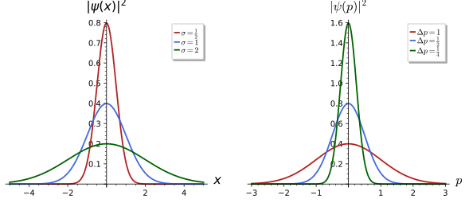
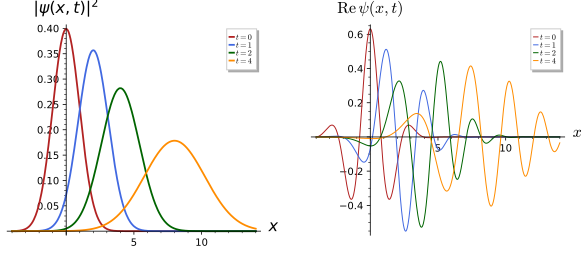
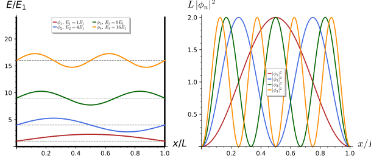
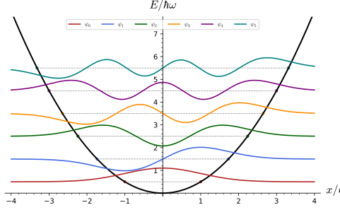
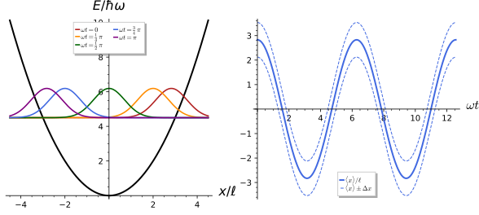
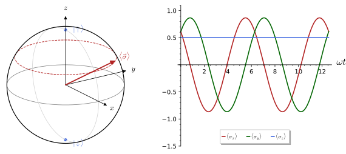
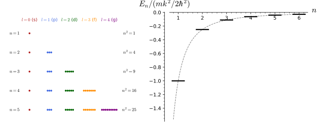
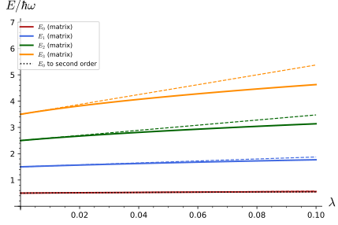
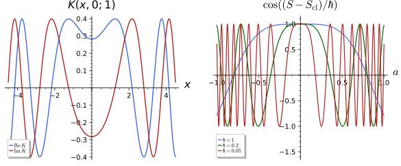

Quantum mechanics
Quantum mechanics describes a physical system by a unit vector in a complex Hilbert space and its measurable quantities by self-adjoint operators. The spectral theorem then says which values a measurement can return, the Born rule says with what probabilities, and the Schrödinger equation says how the state changes in time. This chapter builds the subject on the Hilbert spaces and spectral theory of Functional analysis, the Fourier transform of The Fourier transform, the probability of Probability spaces and the representations of \mathfrak{su}(2) of Weights and the representations of su(2), in six sections. States and observables defines state vectors, the space of states, observables, expectation values, and proves the uncertainty relation. Measurement and the Schrödinger equation states the Born rule and the projection postulate, introduces the time-evolution operator and the Schrödinger equation, and solves the free particle and the particle in a box. The harmonic oscillator is solved with ladder operators, which give the spectrum, the Hermite functions and the coherent states. Angular momentum and spin develops the commutation relations, identifies spin with the representations of SU(2), treats spin one-half with the Pauli matrices and the Bloch sphere, and adds angular momenta with Clebsch-Gordan coefficients. Symmetries in quantum mechanics introduces unitary representations, quotes Wigner’s theorem, relates conserved quantities to degeneracies and derives the hydrogen spectrum from its hidden \mathfrak{so}(4) symmetry in outline. Perturbation theory and the path integral ends with Rayleigh-Schrödinger perturbation theory, the propagator, Feynman’s path integral and the classical limit.
Throughout this chapter Planck’s constant \hbar is kept explicit, so that every formula can be read in ordinary units and the classical limit \hbar \to 0 makes sense; the plots use units in which \hbar = m = 1 (or \hbar = m = \omega = 1 for the oscillator), stated in each caption. Every statement is followed by three examples of increasing complexity and three exercises of increasing difficulty with hidden solutions. The running examples are the Gaussian wave packet, the particle in a box, the harmonic oscillator and a single spin one-half.
States and observables
A quantum system is described by two kinds of objects: states, which encode everything that can be predicted about the system, and observables, which are the quantities that can be measured. This section defines state vectors and the Hilbert space of states, observables as self-adjoint operators and their expectation values, and proves the uncertainty relation, which is then evaluated on the Gaussian wave packet, the particle in a box and a spin one-half.
For more on this topic, see d’Emilio and Picasso (2017, Ch. 5), Dereziński and Gérard (2022, Ch. 8) and Tornetta (2022, Ch. 1 and 3).
State vectors
In classical mechanics the state of a particle is a point of phase space, a position together with a momentum (Definition 11 of Classical mechanics). Quantum mechanics replaces the point by a vector of a complex Hilbert space (Definition 14 of Functional analysis), and the linear structure is the new physics: two states can be added, and the sum is again a state. The definition fixes the vocabulary and the Dirac notation used for the rest of the chapter.
Definition 1 (State vector) A state vector of a quantum system with Hilbert space \mathcal{H} is a unit vector \psi \in \mathcal{H}, \|\psi\| = 1. Two state vectors that differ by a global phase, \psi' = e^{i\alpha}\psi with \alpha \in \mathbb{R}, describe the same physical state, so a physical state is a ray \{e^{i\alpha}\psi\}. In Dirac notation a vector is written as a ket |\psi\rangle, the linear functional \phi \mapsto \langle\psi, \phi\rangle as a bra \langle\psi|, and the inner product (antilinear in the first slot, Definition 12 of Functional analysis) as \langle\psi|\phi\rangle. A superposition of states \psi_1, \psi_2 is a normalised linear combination c_1\psi_1 + c_2\psi_2; the transition probability between two states is |\langle\phi|\psi\rangle|^2 \in [0, 1], which does not depend on the phases of \phi and \psi.
Veriphy. Pending.
Lean. Pending.
Sage. Pending.
The simplest Hilbert space that is not trivial is \mathbb{C}^2, the space of a spin one-half or of a quantum bit. The first example shows that its states, after the global phase is removed, are described by two angles, a fact that the section on spin turns into the Bloch sphere.
Example 1 (A spin one-half) On \mathcal{H} = \mathbb{C}^2 with basis |{\uparrow}\rangle = (1, 0), |{\downarrow}\rangle = (0, 1), a state vector is c_\uparrow|{\uparrow}\rangle + c_\downarrow|{\downarrow}\rangle with |c_\uparrow|^2 + |c_\downarrow|^2 = 1. Choosing the global phase so that c_\uparrow \geq 0, every state is |\theta, \varphi\rangle = \cos\tfrac{\theta}{2}\,|{\uparrow}\rangle + e^{i\varphi}\sin\tfrac{\theta}{2}\, |{\downarrow}\rangle, \qquad 0 \leq \theta \leq \pi,\ 0 \leq \varphi < 2\pi , \tag{1} and the transition probability from |{\uparrow}\rangle is |\langle{\uparrow}|\theta, \varphi\rangle|^2 = \cos^2\tfrac{\theta}{2}.
For a particle on a line the state is a function, the wave function, and the unit-norm condition is an integral. The second example normalises a Gaussian, the state that recurs through the whole chapter.
Example 2 (A Gaussian wave function) On \mathcal{H} = L^2(\mathbb{R}) (Definition 15 of Functional analysis) the function \psi(x) = (2\pi\sigma^2)^{-1/4}\exp\Big(-\frac{(x - x_0)^2}{4\sigma^2} + \frac{ip_0x}{\hbar}\Big) \tag{2} is a state vector for every \sigma > 0, x_0, p_0 \in \mathbb{R}: |\psi(x)|^2 = (2\pi\sigma^2)^{-1/2}e^{-(x - x_0)^2/2\sigma^2} is the normal density of Definition 9 of Probability and statistics with mean x_0 and variance \sigma^2, and its integral is 1. The factor e^{ip_0x/\hbar} has modulus one and does not change the norm; it will turn out to give the packet the mean momentum p_0 (1).
Global phases are invisible, but relative phases between the terms of a superposition are physical. The third example compares a superposition with its relative phase changed and shows that the transition probability to a third state notices the difference.
Example 3 (Relative phase in a superposition) In \mathbb{C}^2 the states \psi_\pm = (|{\uparrow}\rangle \pm |{\downarrow}\rangle)/\sqrt2 differ only by the relative phase e^{i\pi} = -1 of the second term, yet \langle\psi_+|\psi_-\rangle = (1 - 1)/2 = 0: they are orthogonal, as different as two states can be. By contrast -\psi_+ is the same ray as \psi_+, and |\langle\phi|{-\psi_+}\rangle|^2 = |\langle\phi|\psi_+\rangle|^2 for every \phi. In terms of Equation 1, \psi_\pm are |\tfrac\pi2, 0\rangle and |\tfrac\pi2, \pi\rangle, two antipodal points of the equator.
Normalising a wave function is the first computation in every problem. The first exercise asks for two normalisation constants and for the probability that a measurement of position finds the particle in a given interval, anticipating the Born rule.
Exercise 1 (Normalising wave functions) Find N > 0 such that \psi_1(x) = Nxe^{-x^2/2} (lengths in some fixed unit) and \psi_2(x) = Ne^{-|x|} are state vectors in L^2(\mathbb{R}). For \psi_2, what is \int_{-1}^1|\psi_2|^2dx?
\int x^2e^{-x^2}dx = \sqrt\pi/2, so N = (2/\sqrt\pi)^{1/2} = \sqrt2\,\pi^{-1/4} for \psi_1. For \psi_2, \int e^{-2|x|}dx = 1, so N = 1; then \int_{-1}^1e^{-2|x|}dx = 1 - e^{-2} \approx 0.865.
The global phase drops out of every transition probability, but a phase that depends on the term of a superposition does not. The second exercise makes the distinction precise.
Exercise 2 (Global and relative phases) Show that |\langle\phi|e^{i\alpha}\psi\rangle|^2 = |\langle\phi|\psi\rangle|^2 for every \phi. Then let \psi = c_1e_1 + c_2e_2 with orthonormal e_1, e_2 and \psi' = c_1e_1 + e^{i\beta}c_2e_2, and find |\langle\phi|\psi'\rangle|^2 for \phi = (e_1 + e_2)/\sqrt2 as a function of \beta.
\langle\phi|e^{i\alpha}\psi\rangle = e^{i\alpha}\langle\phi|\psi\rangle by linearity in the second slot, and |e^{i\alpha}| = 1. For the superposition, \langle\phi|\psi'\rangle = (c_1 + e^{i\beta}c_2)/\sqrt2, so |\langle\phi|\psi'\rangle|^2 = \tfrac12(|c_1|^2 + |c_2|^2) + \operatorname{Re}(\bar c_1c_2e^{i\beta}): an interference term that depends on \beta, unless c_1c_2 = 0.
Every unit vector of \mathbb{C}^2 is equal, up to a global phase, to one of the form Equation 1. The last exercise asks for the angles of a concrete vector and lets Sage check the identification.
Exercise 3 (The angles of a spin state) Write \psi = (1 + i, 1)/\sqrt3 in the form e^{i\alpha}|\theta, \varphi\rangle of Equation 1, and check with Sage that the two vectors agree.
|1 + i|^2/3 = 2/3, so \cos^2\tfrac\theta2 = \tfrac23, \theta = 2\arccos\sqrt{2/3}. Factoring out the phase e^{i\pi/4} of the first entry, \psi = e^{i\pi/4}(\sqrt{2/3}, e^{-i\pi/4}/\sqrt3), so \alpha = \pi/4 and \varphi = -\pi/4 (or 7\pi/4):
psi = vector(SR, [1 + I, 1]) / sqrt(3)
print("norm^2 =", (psi.conjugate() * psi).simplify_full())
alpha = arg(1 + I); theta = 2 * arccos(abs(psi[0]).simplify_full()); phi = arg(SR(1)) - alpha
print("alpha =", alpha, " theta =", theta, "=", theta.n(digits=6), " phi =", phi)
rebuilt = exp(I * alpha) * vector(SR, [cos(theta / 2), exp(I * phi) * sin(theta / 2)])
print("rebuilt equals psi:", all(bool((a - b).simplify_full() == 0) for a, b in zip(rebuilt, psi)))Output:
norm^2 = 1
alpha = 1/4*pi theta = 2*arccos(1/3*sqrt(3)*sqrt(2)) = 1.23096 phi = -1/4*pi
rebuilt equals psi: TrueThe Hilbert space of states
The state vectors of a system live in one fixed Hilbert space, and choosing it is the first step in describing a system quantum mechanically. The definition lists the standard choices and the rule for combining two systems into one, which uses the tensor product of Definition 16 of Linear algebra.
Definition 2 (Space of states) The space of states of a quantum system is a complex separable Hilbert space \mathcal{H}. A particle moving on the line has \mathcal{H} = L^2(\mathbb{R}), and its state vector \psi(x) is the wave function, with |\psi(x)|^2 the probability density of its position; in \mathbb{R}^3, \mathcal{H} = L^2(\mathbb{R}^3). A particle confined to an interval [0, L] has \mathcal{H} = L^2(0, L). An internal degree of freedom with d distinguishable values, such as a spin, has \mathcal{H} = \mathbb{C}^d. The space of states of a system made of two subsystems with spaces \mathcal{H}_1, \mathcal{H}_2 is the tensor product \mathcal{H}_1 \otimes \mathcal{H}_2, whose vectors are the (limits of) sums \sum_k \phi_k \otimes \chi_k; a state of the form \phi \otimes \chi is a product state, and any other state is entangled.
Veriphy. Pending.
Lean. Pending.
Sage. Pending.
The space L^2(\mathbb{R}) is the prototype, and it already contains a second description of the same state: the Fourier transform exchanges position and momentum. The first example writes the momentum wave function with \hbar explicit.
Example 4 (Position and momentum wave functions) For \psi \in L^2(\mathbb{R}) the momentum wave function is \tilde\psi(p) = (2\pi\hbar)^{-1/2}\int e^{-ipx/\hbar}\psi(x)\,dx, the Fourier transform of Definition 4 of Fourier analysis evaluated at k = p/\hbar and normalised so that Plancherel’s theorem reads \int|\tilde\psi(p)|^2dp = \int|\psi(x)|^2dx. For the centred Gaussian Equation 2 with x_0 = p_0 = 0 one finds \tilde\psi(p) = (2\sigma^2/\pi\hbar^2)^{1/4}e^{-\sigma^2p^2/\hbar^2}, again a Gaussian, of variance \hbar^2/4\sigma^2 in |\tilde\psi|^2 (1, Exercise 5).
A spin one-half carried by a particle doubles the space: the state is a pair of wave functions, one for each value of the spin. The second example writes this space as a tensor product and reads off the probabilities it contains.
Example 5 (A particle with spin) A particle with spin one-half moving on the line has \mathcal{H} = L^2(\mathbb{R}) \otimes \mathbb{C}^2, whose vectors are pairs (\psi_\uparrow(x), \psi_\downarrow(x)) with \int(|\psi_\uparrow|^2 + |\psi_\downarrow|^2)dx = 1. The product state \psi(x) \otimes |\theta, \varphi\rangle has \psi_\uparrow = \cos\tfrac\theta2\,\psi and \psi_\downarrow = e^{i\varphi}\sin\tfrac\theta2\,\psi, and the probability of spin up is \int|\psi_\uparrow|^2dx = \cos^2\tfrac\theta2. A state such as (\psi_1(x), \psi_2(x))/\sqrt2 with orthogonal \psi_1, \psi_2 is entangled: the spin is correlated with the position.
Two spins one-half have a four-dimensional space, and the most important state in it is entangled. The third example shows that the singlet cannot be written as a product, by a criterion that the exercise below generalises.
Example 6 (The singlet of two spins) \mathbb{C}^2 \otimes \mathbb{C}^2 has the basis |{\uparrow\uparrow}\rangle, |{\uparrow\downarrow}\rangle, | {\downarrow\uparrow}\rangle, |{\downarrow\downarrow}\rangle. A product (a|{\uparrow}\rangle + b|{\downarrow}\rangle) \otimes (c|{\uparrow}\rangle + d|{\downarrow}\rangle) has coefficients ac, ad, bc, bd, whose products satisfy (ac)(bd) = (ad)(bc). The singlet (|{\uparrow\downarrow}\rangle - | {\downarrow\uparrow}\rangle)/\sqrt2 has c_{\uparrow\uparrow}c_{\downarrow\downarrow} = 0 \neq -\tfrac12 = c_{\uparrow\downarrow}c_{\downarrow\uparrow}, so it is entangled. It reappears as the spin-0 part of \tfrac12 \otimes \tfrac12 (Definition 24 of Lie groups and Lie algebras).
The criterion of the singlet example is in fact necessary and sufficient. The first exercise asks for the proof, which is the statement that a 2 \times 2 matrix has rank one exactly when its determinant vanishes.
Exercise 4 (A test for entanglement) Show that \sum_{ij}c_{ij}|i\rangle \otimes |j\rangle \in \mathbb{C}^2 \otimes \mathbb{C}^2 is a product state if and only if c_{\uparrow\uparrow}c_{\downarrow\downarrow} = c_{\uparrow\downarrow}c_{\downarrow\uparrow}. Is (|{\uparrow\uparrow}\rangle + |{\uparrow\downarrow}\rangle + |{\downarrow\uparrow}\rangle + | {\downarrow\downarrow}\rangle)/2 entangled?
Arrange the coefficients as a matrix C = (c_{ij}). A product state has C = (a, b)^{\mathsf T}(c, d), a matrix of rank at most one, so \det C = 0. Conversely a non-zero 2 \times 2 matrix with \det C = 0 has rank one and is an outer product uv^{\mathsf T}, which is the product state u \otimes v. The given state has C = \tfrac12\begin{pmatrix}1 & 1 \\ 1 & 1\end{pmatrix}, \det C = 0: it is the product \tfrac{1}{\sqrt2}(|{\uparrow}\rangle + |{\downarrow}\rangle) \otimes \tfrac{1}{\sqrt2}(|{\uparrow}\rangle + | {\downarrow}\rangle).
The momentum wave function of a Gaussian is a Gaussian, and the widths of the two are inversely proportional. The second exercise computes the transform with \hbar kept symbolic and checks Plancherel’s theorem in Sage.
Exercise 5 (The momentum wave function of a Gaussian) With Sage, compute \tilde\psi(p) for the Gaussian Equation 2 with x_0 = 0 and general p_0, check that \int|\tilde\psi|^2dp = 1, and show that |\tilde\psi(p)|^2 is a normal density with mean p_0 and variance \hbar^2/4\sigma^2.
Completing the square, \tilde\psi(p) = (2\sigma^2/\pi\hbar^2)^{1/4}e^{-\sigma^2(p - p_0)^2/\hbar^2}, so |\tilde\psi|^2 = (2\pi\hbar^2/4\sigma^2)^{-1/2}e^{-(p - p_0)^2/(2\hbar^2/4\sigma^2)}; the factor e^{ip_0x/\hbar} shifts the momentum distribution by p_0:
x, p, p0 = var("x p p0", domain="real"); hbar, s = var("hbar s", domain="positive")
psi = (2 * pi * s ** 2) ** (-1 / 4) * exp(-x ** 2 / (4 * s ** 2) + I * p0 * x / hbar)
pt = (integrate(exp(-I * p * x / hbar) * psi, x, -oo, oo) / sqrt(2 * pi * hbar))
expected = (2 * s ** 2 / (pi * hbar ** 2)) ** (1 / 4) * exp(-s ** 2 * (p - p0) ** 2 / hbar ** 2)
print("psi~(p) / expected =", (pt / expected).canonicalize_radical())
rho = expected ** 2
print("norm:", integrate(rho, p, -oo, oo).simplify_full())
print("mean:", integrate(p * rho, p, -oo, oo).simplify_full())
print("variance:", integrate((p - p0) ** 2 * rho, p, -oo, oo).simplify_full())Output:
psi~(p) / expected = 1
norm: 1
mean: p0
variance: 1/4*hbar^2/s^2Three spins one-half, or a spin one-half together with a spin one, are the next cases. The last exercise counts dimensions and builds one entangled state of three spins, the Greenberger-Horne-Zeilinger state.
Exercise 6 (Three spins) What are the dimensions of (\mathbb{C}^2)^{\otimes 3} and of \mathbb{C}^2 \otimes \mathbb{C}^3? Show that the state (|{\uparrow\uparrow\uparrow}\rangle + |{\downarrow\downarrow\downarrow}\rangle)/\sqrt2 is not a product \phi \otimes \chi with \phi \in \mathbb{C}^2 (the first spin) and \chi \in \mathbb{C}^2 \otimes \mathbb{C}^2 (the other two).
The dimensions multiply: 2^3 = 8 and 2 \cdot 3 = 6. If the state were \phi \otimes \chi with \phi = a|{\uparrow}\rangle + b|{\downarrow}\rangle, the components with first spin up would be a\chi and those with first spin down b\chi, so the two would be proportional. They are |{\uparrow\uparrow}\rangle/\sqrt2 and |{\downarrow\downarrow}\rangle/\sqrt2, which are not proportional: the state is entangled across this split.
Observables
A measurable quantity must have real values and a complete set of possible outcomes. The self-adjoint operators of Definition 19 of Functional analysis, with their real spectra (Definition 24 of Functional analysis) and the spectral theorem (Theorem 12 of Functional analysis), have exactly these properties, and quantum mechanics identifies the two.
Definition 3 (Observable) An observable of a quantum system is a self-adjoint operator A on its space of states \mathcal{H}, bounded or unbounded with a dense domain (Definition 29 of Functional analysis). The possible results of a measurement of A are the points of its spectrum \sigma(A) \subset \mathbb{R}. The basic observables of a particle on the line are the position (x\psi)(x) = x\psi(x), the momentum (p\psi)(x) = -i\hbar\psi'(x), and the Hamiltonian H = p^2/2m + V(x), the observable of energy, whose form is that of the classical Hamiltonian of Definition 9 of Classical mechanics. Position and momentum satisfy the canonical commutation relation [x, p] = i\hbar.
Veriphy. Pending.
Lean. Pending.
Sage. Pending.
The commutation relation is the operator form of the classical Poisson bracket \{x, p\} = 1, with i\hbar in place of 1. The first example checks it with \hbar explicit, extending Definition 30 of Functional analysis.
Example 7 (Position and momentum) On a smooth rapidly decreasing \psi, (xp - px)\psi = -i\hbar x\psi' + i\hbar(x\psi)' = i\hbar\psi, so [x, p] = i\hbar. Both operators are symmetric, \langle\phi, p\psi\rangle = \int\bar\phi(-i\hbar\psi')dx = \int \overline{(-i\hbar\phi')}\psi\,dx = \langle p\phi, \psi\rangle after integrating by parts, and both have spectrum \mathbb{R} and no eigenvectors in L^2: the plane wave e^{ip_0x/\hbar} satisfies p\,e^{ip_0x/\hbar} = p_0e^{ip_0x/\hbar} but is not square integrable.
For a spin the observables are Hermitian matrices, and their spectra are finite lists of eigenvalues. The second example gives the spin observable along the z-axis and its eigenvectors.
Example 8 (Spin along an axis) For a spin one-half the observable of spin along the z-axis is S_z = \tfrac\hbar2\sigma_3 = \tfrac\hbar2\begin{pmatrix}1 & 0 \\ 0 & -1\end{pmatrix}, with eigenvalues \pm\hbar/2 and eigenvectors |{\uparrow}\rangle, |{\downarrow}\rangle. Along the unit vector \vec n = (\sin\theta\cos\varphi, \sin\theta\sin\varphi, \cos\theta) it is S_{\vec n} = \tfrac\hbar2\vec n\cdot\vec\sigma, again with eigenvalues \pm\hbar/2, and its +\hbar/2 eigenvector is the state |\theta, \varphi\rangle of Equation 1 (Definition 16).
The energy of a particle in a box is the first unbounded observable whose spectrum is a list of eigenvalues. The third example shows how the boundary condition, part of the definition of the operator, produces a discrete spectrum.
Example 9 (The Hamiltonian of a particle in a box) On L^2(0, L) the Hamiltonian of a free particle confined to [0, L] is H = -\tfrac{\hbar^2}{2m}\frac{d^2}{dx^2} on the twice-differentiable functions with \psi(0) = \psi(L) = 0 (infinitely high walls). It is self-adjoint, and its eigenvectors \phi_n(x) = \sqrt{2/L}\sin(n\pi x/L) with eigenvalues E_n = n^2\pi^2\hbar^2/2mL^2, n = 1, 2, \dots, form an orthonormal basis (Proposition 2): the energy of the particle can take only these values.
That momentum is symmetric depends on the boundary terms of an integration by parts. The first exercise works out the computation on an interval, where the boundary conditions decide whether the boundary terms vanish.
Exercise 7 (When is momentum symmetric?) On L^2(0, L) show that \langle\phi, p\psi\rangle - \langle p\phi, \psi\rangle = -i\hbar[\bar\phi\psi]_0^L. Deduce that p is symmetric on functions with \psi(0) = \psi(L) = 0, and also on periodic functions \psi(0) = \psi(L). Which of the two domains contains the eigenvectors e^{2\pi inx/L}?
\int_0^L\bar\phi(-i\hbar\psi')dx = -i\hbar[\bar\phi\psi]_0^L + i\hbar\int_0^L\bar\phi'\psi\,dx, and the last term is \langle p\phi, \psi\rangle because \overline{-i\hbar\phi'} = i\hbar\bar\phi'. The boundary term vanishes if both functions vanish at the ends, or if both are periodic. The exponentials e^{2\pi inx/L} are periodic, not zero at the ends, so they belong to the periodic domain, on which p is self-adjoint with eigenvalues 2\pi n\hbar/L (a particle on a circle); with Dirichlet conditions p is symmetric but has no eigenvectors at all.
Commutators of functions of x and p follow from [x, p] = i\hbar and the product rule [A, BC] = [A, B]C + B[A, C]. The second exercise computes three of them and lets Sage confirm them on a symbolic function.
Exercise 8 (Commutators of position and momentum) Show that [x, p^2] = 2i\hbar p, [x^2, p] = 2i\hbar x and [p, V(x)] = -i\hbar V'(x), and check the three identities with Sage by applying both sides to a symbolic function f(x).
[x, p^2] = [x, p]p + p[x, p] = 2i\hbar p; [x^2, p] = x[x, p] + [x, p]x = 2i\hbar x; and [p, V]f = -i\hbar(Vf)' + i\hbar Vf' = -i\hbar V'f:
x = var("x"); hbar = var("hbar"); f = function("f")(x); V = function("V")(x)
P = lambda g: -I * hbar * diff(g, x); X = lambda g: x * g
print("[x, p^2] f - 2 i hbar p f =", (X(P(P(f))) - P(P(X(f))) - 2 * I * hbar * P(f)).simplify_full())
print("[x^2, p] f - 2 i hbar x f =", (X(X(P(f))) - P(X(X(f))) - 2 * I * hbar * x * f).simplify_full())
print("[p, V] f + i hbar V' f =", (P(V * f) - V * P(f) + I * hbar * diff(V, x) * f).simplify_full())Output:
[x, p^2] f - 2 i hbar p f = 0
[x^2, p] f - 2 i hbar x f = 0
[p, V] f + i hbar V' f = 0On \mathbb{C}^n the observables are exactly the Hermitian matrices, and their eigenvalues are the possible outcomes. The last exercise sorts a list of matrices and finds the outcomes of the observables among them.
Exercise 9 (Which matrices are observables?) Which of A = \begin{pmatrix}1 & i \\ -i & 2\end{pmatrix}, B = \begin{pmatrix}0 & 1 \\ 0 & 0\end{pmatrix}, C = \begin{pmatrix}0 & -i & 0 \\ i & 0 & -i \\ 0 & i & 0\end{pmatrix}, D = \sigma_1\sigma_2 are observables? Find the possible measurement outcomes of those that are, with Sage.
A and C are Hermitian; B is not (B^\dagger \neq B) and D = i\sigma_3 is anti-Hermitian. The outcomes are the eigenvalues: (3 \pm \sqrt5)/2 for A and 0, \pm\sqrt2 for C (which is \sqrt2 times a spin-one matrix, Definition 15):
s1 = matrix(SR, [[0, 1], [1, 0]]); s2 = matrix(SR, [[0, -I], [I, 0]])
mats = {"A": matrix(SR, [[1, I], [-I, 2]]), "B": matrix(SR, [[0, 1], [0, 0]]),
"C": matrix(SR, [[0, -I, 0], [I, 0, -I], [0, I, 0]]), "D": s1 * s2}
for name, M in mats.items():
herm = M == M.conjugate_transpose()
print(name, "Hermitian:", herm, (" eigenvalues: %s" % M.eigenvalues()) if herm else (" M = %s" % list(M)))Output:
A Hermitian: True eigenvalues: [-1/2*sqrt(5) + 3/2, 1/2*sqrt(5) + 3/2]
B Hermitian: False M = [(0, 1), (0, 0)]
C Hermitian: True eigenvalues: [-sqrt(2), sqrt(2), 0]
D Hermitian: False M = [(I, 0), (0, -I)]The commutator of two observables is anti-Hermitian, so i times it is an observable. The next exercise proves this, which is what makes the right side of the uncertainty relation a real number.
Exercise 10 (The commutator of two observables) Let A and B be Hermitian and [A, B] = iC. Show that C is Hermitian. Show also that if [H, A] = 0 and A does not depend on time, \langle A\rangle is constant in every state (Michele Cini and Rotondi 2023, sec. 5.3, Problems 1-2).
(iC)^\dagger = [A, B]^\dagger = (AB - BA)^\dagger = BA - AB = -iC, and (iC)^\dagger = -iC^\dagger, so C^\dagger = C. For the second part, \tfrac{d}{dt}\langle\psi(t)|A|\psi(t)\rangle = \tfrac{i}{\hbar}\langle\psi(t)|[H, A]|\psi(t)\rangle = 0 by the Schrödinger equation and its adjoint, as in Exercise 27.
Veriphy. Pending.
Lean. Pending.
Sage. Pending.
Expectation values
A single measurement returns one point of the spectrum; repeating the measurement on many identically prepared systems produces a distribution of outcomes. Its mean and variance, defined below, are inner products and are the first numbers one computes for any state.
Definition 4 (Expectation value) The expectation value of an observable A in a state \psi (in the domain of A) is \langle A\rangle_\psi = \langle\psi|A|\psi\rangle = \langle\psi, A\psi\rangle, a real number because A is self-adjoint. The uncertainty \Delta A is the standard deviation, (\Delta A)^2 = \langle(A - \langle A\rangle)^2\rangle = \langle A^2\rangle - \langle A\rangle^2 = \|(A - \langle A\rangle)\psi\|^2. If A = \sum_k\lambda_k|e_k\rangle\langle e_k| has an orthonormal eigenbasis, \langle A\rangle = \sum_k\lambda_k|\langle e_k|\psi\rangle|^2 is the mean of the outcomes \lambda_k weighted by the probabilities |\langle e_k|\psi\rangle|^2, in the sense of Definition 6 of Probability and statistics.
Veriphy. Pending.
Lean. Pending.
Sage. Pending.
For a spin one-half the three expectation values \langle\sigma_1\rangle, \langle\sigma_2\rangle, \langle\sigma_3\rangle form a vector. The first example computes it and finds a unit vector, whose direction is given by the two angles of Equation 1.
Example 10 (The Bloch vector) For |\theta, \varphi\rangle of Equation 1, \langle\sigma_1\rangle = 2\cos\tfrac\theta2\sin\tfrac\theta2\cos\varphi = \sin\theta\cos\varphi, \langle\sigma_2\rangle = \sin\theta\sin\varphi and \langle\sigma_3\rangle = \cos^2\tfrac \theta2 - \sin^2\tfrac\theta2 = \cos\theta. The Bloch vector \langle\vec\sigma\rangle = (\sin\theta\cos\varphi, \sin\theta\sin\varphi, \cos\theta) is the unit vector with polar angles \theta, \varphi, and \langle S_{\vec m}\rangle = \tfrac\hbar2\vec m\cdot\langle\vec\sigma\rangle for every axis \vec m (1).
For a wave function the expectation values of position and momentum are integrals, the second one involving a derivative. The second example computes them for the Gaussian and identifies the parameters x_0 and p_0.
Example 11 (Mean position and momentum of the Gaussian) For Equation 2, \langle x\rangle = \int x|\psi|^2dx = x_0 and (\Delta x)^2 = \sigma^2, the mean and variance of the normal density. The momentum is \langle p\rangle = \int\bar\psi(-i\hbar\psi')dx with \psi' = (-(x - x_0)/2\sigma^2 + ip_0/\hbar)\psi; the first term is odd about x_0 and integrates to zero after multiplying by -i\hbar, leaving \langle p\rangle = p_0. Similarly \langle p^2\rangle = \hbar^2\int|\psi'|^2dx = p_0^2 + \hbar^2/4\sigma^2, so \Delta p = \hbar/2\sigma (1).
In the box the ground-state density is symmetric about the middle, so the mean position is L/2; its spread is a short integral. The third example computes it, and the next subsection combines it with the momentum spread.
Example 12 (Position in the box ground state) For \phi_1 = \sqrt{2/L}\sin(\pi x/L), \langle x\rangle = \tfrac2L\int_0^Lx\sin^2(\pi x/L)dx = L/2 and \langle x^2\rangle = L^2(\tfrac13 - \tfrac{1}{2\pi^2}), so (\Delta x)^2 = L^2(\tfrac{1}{12} - \tfrac{1}{2\pi^2}) \approx 0.0327L^2, smaller than the value L^2/12 of a uniform density because |\phi_1|^2 is concentrated in the middle. Since \phi_1 is real, \langle p\rangle = -i\hbar\int\phi_1\phi_1'dx = -\tfrac{i\hbar}{2}[\phi_1^2]_0^L = 0.
The two properties that make expectation values sensible, reality and non-negative variance, follow from self-adjointness. The first exercise proves them and identifies the states with zero uncertainty.
Exercise 11 (Reality and zero variance) Show that \langle A\rangle_\psi is real for self-adjoint A, that (\Delta A)^2 = \|(A - \langle A\rangle)\psi\|^2 \geq 0, and that \Delta A = 0 if and only if \psi is an eigenvector of A.
\overline{\langle\psi, A\psi\rangle} = \langle A\psi, \psi\rangle = \langle\psi, A\psi\rangle. With a = \langle A\rangle real, \|(A - a)\psi\|^2 = \langle\psi, (A - a)^2\psi\rangle = \langle A^2\rangle - 2a^2 + a^2 = \langle A^2\rangle - a^2. This vanishes iff (A - a)\psi = 0, i.e. \psi is an eigenvector with eigenvalue a; conversely if A\psi = \lambda\psi then a = \lambda and (A - a)\psi = 0.
The weighted-mean formula of the definition is the bridge between operators and probability. The second exercise asks for its proof and for a direct application to a spin state.
Exercise 12 (Expectation as a weighted mean) If A = \sum_k\lambda_k|e_k\rangle\langle e_k| with an orthonormal basis e_k, show \langle A\rangle_\psi = \sum_k\lambda_k|\langle e_k|\psi\rangle|^2 and \sum_k|\langle e_k|\psi\rangle|^2 = 1. Use it to compute \langle S_z\rangle and \Delta S_z in |\theta, \varphi\rangle.
A\psi = \sum_k\lambda_k\langle e_k|\psi\rangle e_k, so \langle\psi, A\psi\rangle = \sum_k\lambda_k\langle e_k|\psi\rangle\langle\psi|e_k\rangle = \sum_k\lambda_k|\langle e_k|\psi\rangle|^2; the weights sum to \|\psi\|^2 = 1 by Parseval. For S_z: weights \cos^2\tfrac\theta2, \sin^2\tfrac\theta2 on \pm\hbar/2, so \langle S_z\rangle = \tfrac\hbar2\cos\theta, \langle S_z^2\rangle = \hbar^2/4 and \Delta S_z = \tfrac\hbar2\sin\theta.
The first excited state of the harmonic oscillator, met in Section 1.3, has the wave function x e^{-x^2/2} in suitable units. The last exercise computes its four moments in Sage, keeping \hbar symbolic.
Exercise 13 (Moments of an odd wave function) Let \psi(x) = \sqrt2\,\pi^{-1/4}\ell^{-3/2}x\,e^{-x^2/2\ell^2} with a length \ell > 0. With Sage, check \|\psi\| = 1 and compute \langle x\rangle, \langle p\rangle, \Delta x, \Delta p and \Delta x\Delta p.
\langle x\rangle = \langle p\rangle = 0 by parity, (\Delta x)^2 = \tfrac32\ell^2 and (\Delta p)^2 = \tfrac32\hbar^2/\ell^2, so \Delta x\Delta p = \tfrac32\hbar, three times the minimum \hbar/2; this is the case n = 1 of \Delta x\Delta p = (n + \tfrac12)\hbar (Proposition 5):
x = var("x", domain="real"); hbar, ell = var("hbar ell", domain="positive")
psi = sqrt(2) * pi ** (-1 / 4) * ell ** (-3 / 2) * x * exp(-x ** 2 / (2 * ell ** 2))
E = lambda g: integrate(g, x, -oo, oo).canonicalize_radical()
print("norm =", E(psi ** 2))
mx = E(x * psi ** 2); mp = E(psi * (-I * hbar) * diff(psi, x))
vx = E(x ** 2 * psi ** 2) - mx ** 2; vp = E(psi * (-hbar ** 2) * diff(psi, x, 2)) - mp ** 2
print("<x> =", mx, " <p> =", mp, " (Delta x)^2 =", vx, " (Delta p)^2 =", vp)
print("Delta x Delta p =", sqrt(vx * vp).canonicalize_radical())Output:
norm = 1
<x> = 0 <p> = 0 (Delta x)^2 = 3/2*ell^2 (Delta p)^2 = 3/2*hbar^2/ell^2
Delta x Delta p = 3/2*hbarThe uncertainty relation
The Gaussian has \Delta x\,\Delta p = \hbar/2 whatever its width: squeezing it in position spreads it in momentum (Figure 1). The proposition below shows that no state does better, and that the same mechanism, a non-vanishing commutator, bounds the product of the uncertainties of any two observables.

figures/qm_uncertainty.sage; the interactive version has a slider for \sigma.
Interactive figure (drag to rotate or zoom); the static version is above.
Proposition 1 (The uncertainty relation) For observables A, B and a state \psi in the domains of AB and BA, \Delta A\,\Delta B \geq \tfrac12\,|\langle[A, B]\rangle_\psi| , \tag{3} the Robertson uncertainty relation; for position and momentum it is Heisenberg’s \Delta x\,\Delta p \geq \hbar/2. Proof. Put A' = A - \langle A\rangle, B' = B - \langle B\rangle; then [A', B'] = [A, B], and by Cauchy-Schwarz \Delta A\,\Delta B = \|A'\psi\|\,\|B'\psi\| \geq |\langle A'\psi, B'\psi\rangle| \geq | \operatorname{Im}\langle A'\psi, B'\psi\rangle| = \tfrac12|\langle\psi, [A', B']\psi\rangle|, because \langle A'\psi, B'\psi\rangle - \langle B'\psi, A'\psi\rangle = \langle\psi, [A', B']\psi\rangle. The Gaussian Equation 2 is normalised with \langle x\rangle = x_0, \langle p\rangle = p_0, \Delta x = \sigma, \Delta p = \hbar/2\sigma, so it attains the bound; its momentum wave function is (2\sigma^2/\pi\hbar^2)^{1/4}e^{-\sigma^2p^2 /\hbar^2} for x_0 = p_0 = 0. The box eigenstates have (\Delta x\Delta p)^2 = \tfrac{\hbar^2}{4}(n^2\pi^2/3 - 2), for n = 1 about 0.568\hbar. The spin state |\theta, \varphi\rangle has Bloch vector (\sin\theta\cos\varphi, \sin\theta\sin\varphi, \cos\theta) and satisfies (\Delta\sigma_1)^2(\Delta\sigma_2)^2 - \langle\sigma_3\rangle^2 = \sin^4\theta\cos^2\varphi\sin^2\varphi \geq 0. No matrices satisfy [X, P] = i\hbar, since the trace of a commutator vanishes.
Veriphy. Pending.
Lean. Pending.
Sage. Exact computation (figures/qm_uncertainty.sage); the proof is in the block.
The bound is attained by the Gaussian, and only by Gaussians, because equality in Cauchy-Schwarz forces (x - x_0)\psi and (p - p_0)\psi to be proportional. The first example derives the Gaussian from this condition.
Example 13 (The states of minimal uncertainty) Equality in Equation 3 needs B'\psi = c\,A'\psi with \langle A'\psi, B'\psi\rangle purely imaginary, i.e. c = i\lambda with \lambda real. For x, p: -i\hbar\psi' - p_0\psi = i\lambda(x - x_0)\psi, so \psi' = (ip_0/\hbar - \lambda(x - x_0)/\hbar)\psi and \psi = Ce^{ip_0x/\hbar}e^{-\lambda(x - x_0)^2/2\hbar}, normalisable for \lambda > 0. With \lambda = \hbar/2\sigma^2 this is Equation 2: the minimal-uncertainty states are exactly the Gaussians, as in Theorem 5 of Fourier analysis.
For a spin the commutator is another spin component, and the bound depends on the state. The second example evaluates both sides of Equation 3 for \sigma_1, \sigma_2, the case in the proposition.
Example 14 (Uncertainty for spin components) [\sigma_1, \sigma_2] = 2i\sigma_3, so Equation 3 reads \Delta\sigma_1\Delta\sigma_2 \geq | \langle\sigma_3\rangle| = |\cos\theta|. Since \sigma_a^2 = 1, (\Delta\sigma_1)^2 = 1 - \sin^2\theta\cos^2 \varphi and (\Delta\sigma_2)^2 = 1 - \sin^2\theta\sin^2\varphi, and the difference of the squares of the two sides is \sin^4\theta\cos^2\varphi\sin^2\varphi \geq 0. Equality holds on the axes \varphi = 0, \pi/2, \dots and at the poles; at |{\uparrow}\rangle both sides equal 1, while on the equator the right side is 0.
The box ground state is not a Gaussian, so it does not attain the bound. The third example combines Example 12 with the momentum spread and finds how far above the bound it lies.
Example 15 (The box ground state) For \phi_1, \langle p^2\rangle = \int\phi_1(-\hbar^2\phi_1'')dx = \hbar^2\pi^2/L^2 (it is 2mE_1) and \langle p\rangle = 0, so \Delta p = \pi\hbar/L. With (\Delta x)^2 = L^2(\tfrac1{12} - \tfrac1{2\pi^2}), \Delta x\,\Delta p = \hbar\sqrt{\pi^2/12 - 1/2} = \tfrac\hbar2\sqrt{\pi^2/3 - 2} \approx 0.568\,\hbar, about 14\% above the bound. A smaller box gives a larger momentum spread, the origin of the confinement energy E_1 \propto 1/L^2.
The angular momentum components do not commute, yet in some states two of them have zero mean. The next example computes the uncertainties of L_x and L_y in the eigenstates of L_z and finds the states that make the bound sharp.
Example 16 (L_x and L_y in the states |l, m\rangle) In |l, m\rangle, L_x = \tfrac12(L_+ + L_-) and L_y = \tfrac1{2i}(L_+ - L_-) change m by \pm1, so \langle L_x\rangle = \langle L_y\rangle = 0. Since L_x^2 + L_y^2 = L^2 - L_z^2 and the two terms are equal by the rotation about z by \pi/2, (\Delta L_x)^2 = (\Delta L_y)^2 = \tfrac12\hbar^2\bigl(l(l + 1) - m^2\bigr) . The Robertson bound \Delta L_x\Delta L_y \geq \tfrac\hbar2|\langle L_z\rangle| = \tfrac12\hbar^2|m| holds since l(l + 1) - m^2 \geq |m|, with equality iff |m| = l: the states of maximal projection are the minimal-uncertainty states of angular momentum. For m = 0 the bound is zero although L_x and L_y do not commute (Michele Cini and Rotondi 2023, sec. 5.3, Problem 3).
Veriphy. Pending.
Lean. Pending.
Sage. Pending.
Schrödinger strengthened the inequality by keeping the real part of \langle A'\psi, B'\psi\rangle that the proof discards. The first exercise derives the stronger form, which involves the anticommutator.
Exercise 14 (The Schrödinger-Robertson inequality) Show that (\Delta A)^2(\Delta B)^2 \geq \tfrac14|\langle[A, B]\rangle|^2 + \tfrac14\langle\{A', B'\}\rangle^2, where \{A', B'\} = A'B' + B'A' and A' = A - \langle A\rangle, B' = B - \langle B\rangle. Check that the Gaussian with a chirp, \psi \propto e^{-(1 - ic)x^2/4\sigma^2}, has \langle\{x, p\}\rangle \neq 0 for c \neq 0.
z = \langle A'\psi, B'\psi\rangle has \operatorname{Re}z = \tfrac12\langle\{A', B'\}\rangle and \operatorname{Im} z = \tfrac1{2i}\langle[A, B]\rangle, and Cauchy-Schwarz gives \|A'\psi\|^2\|B'\psi\|^2 \geq |z|^2 = (\operatorname{Re} z)^2 + (\operatorname{Im}z)^2. For the chirped Gaussian, p\psi = -i\hbar\psi' = \tfrac{i\hbar(1 - ic)x}{2\sigma^2} \psi, so \langle x\psi, p\psi\rangle = \tfrac{i\hbar(1 - ic)}{2\sigma^2}\langle x^2\rangle = \tfrac{i\hbar + \hbar c}{2} using \langle x^2\rangle = \sigma^2; hence \langle\{x, p\}\rangle = 2\operatorname{Re} = \hbar c, and the product \Delta x\Delta p = \tfrac\hbar2\sqrt{1 + c^2} exceeds \hbar/2 exactly by the anticommutator term.
The box eigenstates move further from the bound as n grows, because their momentum spread grows linearly while the position spread saturates. The second exercise computes the products in Sage.
Exercise 15 (Uncertainty in the box eigenstates) With Sage, compute \Delta x, \Delta p and \Delta x\,\Delta p for \phi_n = \sqrt{2/L}\sin(n\pi x/L), n = 1, \dots, 6, and compare with \tfrac\hbar2\sqrt{n^2\pi^2/3 - 2}. What does \Delta x tend to as n \to \infty?
(\Delta x)^2 = L^2(\tfrac1{12} - \tfrac{1}{2n^2\pi^2}) \to L^2/12, the variance of the uniform density on [0, L], and \Delta p = n\pi\hbar/L; the product grows like n\pi\hbar/\sqrt{12}:
x = var("x", domain="real"); hbar, L = var("hbar L", domain="positive")
for n in range(1, 7):
ph = sqrt(2 / L) * sin(n * pi * x / L)
E = lambda g: integrate(g, x, 0, L).simplify_full()
vx = (E(x ** 2 * ph ** 2) - E(x * ph ** 2) ** 2).simplify_full(); vp = E(ph * (-hbar ** 2) * diff(ph, x, 2))
prod = sqrt(vx * vp).simplify_full()
print("n =", n, " (Delta x)^2 =", vx, " Delta p =", sqrt(vp).simplify_full(), " Delta x Delta p / hbar =", (prod / hbar).simplify_full(), "=", (prod / hbar).n(digits=5),
" matches (1/2) sqrt(n^2 pi^2/3 - 2):", bool(((prod / hbar) ** 2 - (n ** 2 * pi ** 2 / 3 - 2) / 4).simplify_full() == 0))
print("limit of (Delta x/L)^2 as n -> oo:", limit(1 / 12 - 1 / (2 * var("n") ** 2 * pi ** 2), n=oo))Output:
n = 1 (Delta x)^2 = 1/12*(pi^2 - 6)*L^2/pi^2 Delta p = pi*hbar/L Delta x Delta p / hbar = 1/6*sqrt(3)*sqrt(pi^2 - 6) = 0.56786 matches (1/2) sqrt(n^2 pi^2/3 - 2): True
n = 2 (Delta x)^2 = 1/24*(2*pi^2 - 3)*L^2/pi^2 Delta p = 2*pi*hbar/L Delta x Delta p / hbar = 1/6*sqrt(6)*sqrt(2*pi^2 - 3) = 1.6703 matches (1/2) sqrt(n^2 pi^2/3 - 2): True
n = 3 (Delta x)^2 = 1/36*(3*pi^2 - 2)*L^2/pi^2 Delta p = 3*pi*hbar/L Delta x Delta p / hbar = 1/2*sqrt(3*pi^2 - 2) = 2.6272 matches (1/2) sqrt(n^2 pi^2/3 - 2): True
n = 4 (Delta x)^2 = 1/96*(8*pi^2 - 3)*L^2/pi^2 Delta p = 4*pi*hbar/L Delta x Delta p / hbar = 1/6*sqrt(6)*sqrt(8*pi^2 - 3) = 3.5580 matches (1/2) sqrt(n^2 pi^2/3 - 2): True
n = 5 (Delta x)^2 = 1/300*(25*pi^2 - 6)*L^2/pi^2 Delta p = 5*pi*hbar/L Delta x Delta p / hbar = 1/6*sqrt(3)*sqrt(25*pi^2 - 6) = 4.4790 matches (1/2) sqrt(n^2 pi^2/3 - 2): True
n = 6 (Delta x)^2 = 1/72*(6*pi^2 - 1)*L^2/pi^2 Delta p = 6*pi*hbar/L Delta x Delta p / hbar = 1/2*sqrt(2)*sqrt(6*pi^2 - 1) = 5.3953 matches (1/2) sqrt(n^2 pi^2/3 - 2): True
limit of (Delta x/L)^2 as n -> oo: 1/12An eigenvector of A has \Delta A = 0, which seems to contradict Equation 3 when [A, B] \neq 0. The last exercise resolves the apparent paradox and draws a consequence for position and momentum.
Exercise 16 (Eigenvectors and the commutator) If A\psi = a\psi with \psi in the domain of AB and BA, show that \langle[A, B]\rangle_\psi = 0. Deduce that two observables with [A, B] = c\cdot 1, c \neq 0, have no eigenvectors in the domains of both products, and explain why this is consistent with x and p having no eigenvectors at all in L^2(\mathbb{R}).
\langle\psi, AB\psi\rangle = \langle A\psi, B\psi\rangle = a\langle\psi, B\psi\rangle and \langle\psi, BA\psi\rangle = a\langle\psi, B\psi\rangle, so \langle[A, B]\rangle = 0; both sides of Equation 3 vanish. If [A, B] = c then \langle[A, B]\rangle = c \neq 0 in every state, so no eigenvector of A (or B) lies in the common domain. For x, p the stronger statement holds: neither has any L^2 eigenvector; the “eigenstates” \delta(x - x_0) and e^{ip_0x/\hbar} are not normalisable, and are limits of Gaussians with \sigma \to 0 and \sigma \to \infty.
The previous example is a computation with explicit matrices once l is fixed. The next exercise carries it out with Sage for the first three values of l.
Exercise 17 (Checking the angular-momentum uncertainties) With Sage, build L_x, L_y, L_z for l = 1, 2, 3 (\hbar = 1) from L_\pm, check [L_x, L_y] = iL_z, and compute \langle L_x\rangle, \langle L_y\rangle, (\Delta L_x)^2 and (\Delta L_y)^2 in every |l, m\rangle. In which states is the Robertson bound an equality? (Michele Cini and Rotondi 2023, sec. 5.3, Problem 3)
L_+|l, m\rangle = \sqrt{l(l + 1) - m(m + 1)}\,|l, m + 1\rangle gives the matrices:
def Lmats(l):
ms = [l - i for i in range(2 * l + 1)]
Lp = matrix(QQbar, 2 * l + 1, 2 * l + 1, lambda i, j: sqrt(QQbar(l * (l + 1) - ms[j] * (ms[j] + 1))) if i == j - 1 else 0)
Lm = Lp.conjugate_transpose()
return ms, (Lp + Lm) / 2, (Lp - Lm) / (2 * I), matrix.diagonal(QQbar, ms)
for l in (1, 2, 3):
ms, Lx, Ly, Lz = Lmats(l)
print("l = %d: [L_x, L_y] = i L_z:" % l, Lx * Ly - Ly * Lx == I * Lz)
for i, m in enumerate(ms):
e = vector(QQbar, [1 if j == i else 0 for j in range(2 * l + 1)])
mx, my = e * Lx * e, e * Ly * e
vx, vy = e * Lx * Lx * e - mx^2, e * Ly * Ly * e - my^2
sat = (vx * vy == QQbar(m)^2 / 4)
print(" m = %2d: <Lx> = %s, <Ly> = %s, (dLx)^2 = (dLy)^2 = %s, bound saturated: %s" % (m, mx, my, vx, sat))Output:
l = 1: [L_x, L_y] = i L_z: True
m = 1: <Lx> = 0, <Ly> = 0, (dLx)^2 = (dLy)^2 = 1/2, bound saturated: True
m = 0: <Lx> = 0, <Ly> = 0, (dLx)^2 = (dLy)^2 = 1, bound saturated: False
m = -1: <Lx> = 0, <Ly> = 0, (dLx)^2 = (dLy)^2 = 1/2, bound saturated: True
l = 2: [L_x, L_y] = i L_z: True
m = 2: <Lx> = 0, <Ly> = 0, (dLx)^2 = (dLy)^2 = 1, bound saturated: True
m = 1: <Lx> = 0, <Ly> = 0, (dLx)^2 = (dLy)^2 = 2.5000000000000000?, bound saturated: False
m = 0: <Lx> = 0, <Ly> = 0, (dLx)^2 = (dLy)^2 = 3, bound saturated: False
m = -1: <Lx> = 0, <Ly> = 0, (dLx)^2 = (dLy)^2 = 2.5000000000000000?, bound saturated: False
m = -2: <Lx> = 0, <Ly> = 0, (dLx)^2 = (dLy)^2 = 1, bound saturated: True
l = 3: [L_x, L_y] = i L_z: True
m = 3: <Lx> = 0, <Ly> = 0, (dLx)^2 = (dLy)^2 = 3/2, bound saturated: True
m = 2: <Lx> = 0, <Ly> = 0, (dLx)^2 = (dLy)^2 = 4, bound saturated: False
m = 1: <Lx> = 0, <Ly> = 0, (dLx)^2 = (dLy)^2 = 5.5000000000000000?, bound saturated: False
m = 0: <Lx> = 0, <Ly> = 0, (dLx)^2 = (dLy)^2 = 6, bound saturated: False
m = -1: <Lx> = 0, <Ly> = 0, (dLx)^2 = (dLy)^2 = 5.5000000000000000?, bound saturated: False
m = -2: <Lx> = 0, <Ly> = 0, (dLx)^2 = (dLy)^2 = 4, bound saturated: False
m = -3: <Lx> = 0, <Ly> = 0, (dLx)^2 = (dLy)^2 = 3/2, bound saturated: TrueThe variances are \tfrac12(l(l + 1) - m^2), as in Example 16, and the bound is attained exactly at m = \pm l.
Veriphy. Pending.
Lean. Pending.
Sage. Pending.
Measurement and the Schrödinger equation
States and observables become physics through two rules: one says what a measurement returns and how it changes the state, the other how an unobserved state evolves in time. This section states the Born rule and the projection postulate, defines the time-evolution operator, the Schrödinger equation and stationary states, and solves the free particle and the particle in a box exactly.
For more on this topic, see d’Emilio and Picasso (2017, Ch. 4, Ch. 6, Ch. 7, Ch. 16), Galitski et al. (2013, Ch. 2, Ch. 7), Guidry and Sun (2022, Ch. 27) and Zettili (2009, Ch. 4).
The Born rule
The spectral theorem writes an observable as a sum of eigenvalues times projections, and the squared lengths of the projections of a unit vector add up to one. Born’s rule reads these squared lengths as probabilities, which is the only link between the vectors of the theory and the frequencies observed in a laboratory.
Definition 5 (Born rule) Let A be an observable with discrete spectrum, A = \sum_\lambda\lambda P_\lambda with P_\lambda the orthogonal projection (Definition 21 of Functional analysis) onto the eigenspace of \lambda. The Born rule states that a measurement of A in the state \psi returns \lambda with probability \operatorname{Prob}(\lambda) = \|P_\lambda\psi\|^2 = \sum_k|\langle e_k|\psi\rangle|^2 , \tag{4} the sum over an orthonormal basis e_k of the eigenspace. For the position of a particle on the line, the probability of finding it in a set I is \int_I|\psi(x)|^2dx, and for its momentum \int_I|\tilde\psi(p)|^2dp. These numbers define a probability measure on the spectrum (Definition 2 of Probability and statistics) whose mean is \langle A\rangle_\psi.
Veriphy. Pending.
Lean. Pending.
Sage. Pending.
The first example measures the spin of the state Equation 1 along the z-axis. The probabilities are the two squared moduli of the components, and their mean reproduces the expectation value of Exercise 12.
Example 17 (Measuring a spin along z) For |\theta, \varphi\rangle, S_z has eigenvalues \pm\hbar/2 with one-dimensional eigenspaces, and Equation 4 gives \operatorname{Prob}(+\hbar/2) = \cos^2\tfrac\theta2, \operatorname{Prob}(-\hbar/2) = \sin^2\tfrac\theta2. The north pole \theta = 0 gives +\hbar/2 with certainty, the equator gives each value with probability \tfrac12, and the mean is \tfrac\hbar2(\cos^2\tfrac\theta2 - \sin^2\tfrac\theta2) = \tfrac\hbar2\cos\theta.
Position has a continuous spectrum, and the probabilities are integrals of the density. The second example computes the probability of finding a Gaussian packet within one standard deviation of its centre.
Example 18 (Position probabilities of a Gaussian) For Equation 2 the probability of finding the particle in [x_0 - \sigma, x_0 + \sigma] is \int_{x_0 - \sigma}^{x_0 + \sigma}(2\pi\sigma^2)^{-1/2}e^{-(x - x_0)^2/2\sigma^2}dx = \operatorname{erf}(1/\sqrt2) \approx 0.683, and within 2\sigma it is \operatorname{erf}(\sqrt2) \approx 0.954, the familiar values of the normal distribution. The phase e^{ip_0x/\hbar} plays no role here; it shows up only in momentum measurements.
An energy measurement on a superposition of energy eigenstates returns one of the energies, with probabilities given by the squared coefficients. The third example uses two box states with a complex coefficient.
Example 19 (Energy measurement in the box) The state \psi = (\phi_1 + i\phi_2)/\sqrt2 in the box (Example 9) gives E_1 or E_2 = 4E_1, each with probability |1/\sqrt2|^2 = |i/\sqrt2|^2 = \tfrac12, and never any other value; the mean energy is \tfrac52E_1. A state like \psi = \sqrt{30/L^5}\,x(L - x), which is not a finite combination of eigenstates, gives every odd n with a positive probability (Exercise 19).
The Born rule turns the coefficients of a state in an eigenbasis into probabilities. The next example applies it to an oscillator state with three components and asks what an energy measurement can give.
Example 20 (Measuring the energy of an oscillator) Let |\psi\rangle = \tfrac{\sqrt2}{3}|0\rangle + i\tfrac{\sqrt6}{3}|1\rangle - \tfrac13|2\rangle with H|n\rangle = \hbar\omega(n + \tfrac12)|n\rangle. It is normalised, \tfrac29 + \tfrac69 + \tfrac19 = 1. An energy measurement gives \tfrac12\hbar\omega, \tfrac32\hbar\omega or \tfrac52\hbar\omega with probabilities \tfrac29, \tfrac23, \tfrac19; the most likely result is \tfrac32\hbar\omega. The mean over many copies is \langle H\rangle = \tfrac{25}{18}\hbar\omega, which is not an eigenvalue and is therefore never the result of a single measurement (Michele Cini and Rotondi 2023, sec. 3.6, Problem 2).
Veriphy. Pending.
Lean. Pending.
Sage. Pending.
Measuring a spin along an axis other than z needs the eigenvectors of S_{\vec n}, which are states of the form Equation 1. The first exercise asks for the probability of each outcome along the x-axis.
Exercise 18 (Measuring a spin along x) The eigenvectors of S_x are |{\pm x}\rangle = (|{\uparrow}\rangle \pm |{\downarrow}\rangle)/\sqrt2. Find \operatorname{Prob}(S_x = +\hbar/2) in the state |\theta, \varphi\rangle and express it with the Bloch vector.
\langle{+x}|\theta, \varphi\rangle = (\cos\tfrac\theta2 + e^{i\varphi}\sin\tfrac\theta2)/\sqrt2, whose squared modulus is \tfrac12(1 + 2\cos\tfrac\theta2\sin\tfrac\theta2\cos\varphi) = \tfrac12(1 + \sin\theta\cos\varphi) = \tfrac12(1 + \langle\sigma_1\rangle). In general \operatorname{Prob}(S_{\vec n} = +\hbar/2) = \tfrac12(1 + \vec n\cdot\langle\vec\sigma\rangle).
A wave function that is not an energy eigenstate has an energy distribution spread over the spectrum. The second exercise computes it for the parabola, with Sage, and checks that the probabilities sum to one.
Exercise 19 (Energies of a parabola in the box) With Sage, expand \psi = \sqrt{30/L^5}\,x(L - x) in the box eigenstates, show that \operatorname{Prob}(E_n) = 960/(n^6\pi^6) for odd n and 0 for even n, that the probabilities sum to 1, and compute \langle H\rangle both from the probabilities and as \int\bar\psi H\psi\,dx.
c_n = \langle\phi_n|\psi\rangle = 8\sqrt{15}/(n^3\pi^3) for odd n; the even ones vanish because \psi is symmetric about L/2 and \phi_{2k} antisymmetric. \sum_{n\text{ odd}}n^{-6} = \pi^6/960, so the probabilities sum to one, and \operatorname{Prob}(E_1) = 960/\pi^6 \approx 0.9986. Both computations give \langle H\rangle = 5\hbar^2/mL^2, about 1.013E_1:
x = var("x", domain="real"); hbar, m, L = var("hbar m L", domain="positive")
psi = sqrt(30 / L ** 5) * x * (L - x)
phi = lambda n: sqrt(2 / L) * sin(n * pi * x / L)
E = lambda n: n ** 2 * pi ** 2 * hbar ** 2 / (2 * m * L ** 2)
probs = [(integrate(phi(n) * psi, x, 0, L) ** 2).canonicalize_radical() for n in range(1, 8)]
print("Prob(E_n), n = 1..7:", probs)
print("equal to 960/(n pi)^6 for odd n:", all(bool(probs[n - 1] == (960 / (n * pi) ** 6 if n % 2 else 0)) for n in range(1, 8)))
k = var("k")
print("sum over odd n of 960/(n pi)^6 =", SR(sum(960 / ((2 * k + 1) * pi) ** 6, k, 0, oo)).simplify_full(), "; Prob(E_1) =", (960 / pi ** 6).n(digits=6))
H_direct = integrate(psi * (-hbar ** 2 / (2 * m)) * diff(psi, x, 2), x, 0, L).simplify_full()
H_series = SR(sum(960 / ((2 * k + 1) * pi) ** 6 * (2 * k + 1) ** 2 * pi ** 2 * hbar ** 2 / (2 * m * L ** 2), k, 0, oo)).simplify_full()
print("<H> directly =", H_direct, "; from the probabilities =", H_series, "; <H>/E_1 =", (H_direct / E(1)).simplify_full(), "=", (H_direct / E(1)).n(digits=5))Output:
Prob(E_n), n = 1..7: [960/pi^6, 0, 320/243/pi^6, 0, 192/3125/pi^6, 0, 960/117649/pi^6]
equal to 960/(n pi)^6 for odd n: True
sum over odd n of 960/(n pi)^6 = 1 ; Prob(E_1) = 0.998555
<H> directly = 5*hbar^2/(L^2*m) ; from the probabilities = 5*hbar^2/(L^2*m) ; <H>/E_1 = 10/pi^2 = 1.0132The momentum distribution of a moving Gaussian is a normal density, so the probability of a momentum range is an error function. The last exercise asks for the probability that a slowly moving packet is found moving backwards.
Exercise 20 (Moving backwards) For the Gaussian Equation 2 with p_0 = \hbar/2\sigma (one momentum standard deviation), find the probability that a momentum measurement gives p < 0. How large must p_0\sigma/\hbar be for this probability to drop below 10^{-6}?
By Exercise 5, p is normal with mean p_0 and standard deviation \Delta p = \hbar/2\sigma, so \operatorname{Prob}(p < 0) = \Phi(-p_0/\Delta p) = \Phi(-1) \approx 0.159, with \Phi the standard normal distribution function. \Phi(-z) < 10^{-6} needs z > 4.75, i.e. p_0\sigma/\hbar > 2.38.
The state of the previous example is not stationary. The next exercise follows it in time with Sage and asks what a second measurement gives.
Exercise 21 (The state after a measurement and in time) For the state of Example 20: (a) a measurement gives \tfrac32\hbar\omega; what does an immediate second measurement give, and what is the state? (b) Is |\psi\rangle stationary? With Sage, compute \langle x\rangle(t) and \langle x^2\rangle(t) in units of \sqrt{\hbar/m\omega} (Michele Cini and Rotondi 2023, sec. 3.6, Problem 2).
- By the projection postulate the state becomes |1\rangle (up to phase) and the repeated measurement gives \tfrac32\hbar\omega with certainty. (b) No: |\psi(t)\rangle = \sum_nc_ne^{-i(n + 1/2)\omega t}|n\rangle has relative phases that change. With x = (a + a^\dagger)/\sqrt2:
N = 6
a = matrix(SR, N, N, lambda i, j: sqrt(j) if i == j - 1 else 0) # annihilation operator a|n> = sqrt(n)|n-1>
X = (a + a.transpose()) / sqrt(2)
t = var('t'); assume(t, 'real')
c0 = vector(SR, [sqrt(2) / 3, I * sqrt(6) / 3, -1 / 3] + [0] * (N - 3))
print("norm squared:", sum(abs(z)^2 for z in c0).simplify_full())
print("probabilities of E = 1/2, 3/2, 5/2:", [ (abs(c0[n])^2).simplify_full() for n in range(3)])
print("mean energy:", sum(abs(c0[n])^2 * (n + 1 / 2) for n in range(3)).simplify_full())
ct = vector(SR, [c0[n] * exp(-I * (n + 1 / 2) * t) for n in range(N)])
conj = vector(SR, [z.conjugate() for z in ct])
xm = (conj * X * ct).simplify_full()
x2 = (conj * X * X * ct).simplify_full()
print("<x>(t) =", xm.rectform().simplify_full().simplify_trig())
print("<x^2>(t) =", x2.rectform().simplify_full().simplify_trig().expand())Output:
norm squared: 1
probabilities of E = 1/2, 3/2, 5/2: [2/9, 2/3, 1/9]
mean energy: 25/18
<x>(t) = 4/9*sqrt(6)*sin(t)
<x^2>(t) = 4/9*sin(t)^2 + 7/6\langle x\rangle = \tfrac{4\sqrt6}{9}\sin\omega t oscillates at \omega (from the pairs |0\rangle, |1\rangle and |1\rangle, |2\rangle) and \langle x^2\rangle = \tfrac76 + \tfrac49\sin^2\omega t at 2\omega (from |0\rangle, |2\rangle), while \langle H\rangle stays \tfrac{25}{18}\hbar\omega.
Veriphy. Pending.
Lean. Pending.
Sage. Pending.
Projection
A measurement does not only return a number; it also changes the state, and the change is what makes an immediate repetition of the measurement give the same result. The postulate below describes the change for observables with discrete spectrum, in terms of the projections of the Born rule.
Definition 6 (Projection postulate) The projection postulate states that if a measurement of A = \sum_\lambda\lambda P_\lambda on the state \psi returns \lambda, the state immediately afterwards is \psi \longmapsto \frac{P_\lambda\psi}{\|P_\lambda\psi\|} . \tag{5} When the eigenspace of \lambda is one-dimensional, spanned by e_\lambda, the new state is e_\lambda up to a phase; when it is degenerate, the part of \psi inside the eigenspace survives unchanged up to normalisation. The map Equation 5 is not linear and not unitary; it is the state reduction that accompanies a measurement, distinct from the unitary time evolution of the next subsection.
Veriphy. Pending.
Lean. Pending.
Sage. Pending.
Because P_\lambda^2 = P_\lambda, a second measurement of the same observable finds the same value with probability one. The first example verifies this and contrasts it with a measurement of a different observable.
Example 21 (Repeating a measurement) After S_z returns +\hbar/2, the state is |{\uparrow}\rangle and a second measurement of S_z returns +\hbar/2 with probability \|P_\uparrow|{\uparrow}\rangle\|^2 = 1. Measuring S_x instead returns \pm\hbar/2 with probability \tfrac12 each (Exercise 18), and leaves the state |{\pm x}\rangle; a subsequent S_z measurement is again uncertain, with probabilities \tfrac12.
A sequence of Stern-Gerlach magnets measuring spin along different axes is the classic demonstration of state reduction. The second example follows a beam through three magnets and computes the surviving fraction.
Example 22 (Three Stern-Gerlach magnets) A beam of spins prepared in |{\uparrow}\rangle passes a magnet measuring S_x, which keeps only +\hbar/2, and then a magnet measuring S_z, which keeps only -\hbar/2. The first filter passes half the beam and leaves |{+x}\rangle; the second passes |\langle{\downarrow}|{+x}\rangle|^2 = \tfrac12 of that. A quarter of the beam emerges as |{\downarrow}\rangle, although without the middle magnet none would: the S_x measurement erased the information about S_z.
With a degenerate eigenvalue the projection keeps a whole subspace, and the coherence between the components inside it survives the measurement. The third example works in \mathbb{C}^3.
Example 23 (A degenerate outcome) Let A = \operatorname{diag}(1, 1, 2) and \psi = (a, b, c) with |a|^2 + |b|^2 + |c|^2 = 1. The outcome 1 has probability |a|^2 + |b|^2 and leaves (a, b, 0)/\sqrt{|a|^2 + |b|^2}, which still carries the relative phase of a and b; the outcome 2 has probability |c|^2 and leaves (0, 0, c/|c|). A finer measurement, of B = \operatorname{diag}(1, 3, 0) say, would resolve the first eigenspace further.
The repeatability of measurements is equivalent to the projections being idempotent. The first exercise proves the statement and computes the probability of a sequence of outcomes.
Exercise 22 (Sequences of outcomes) Show that the probability of obtaining \lambda and then \mu in successive measurements of A and B (with no evolution in between) is \|Q_\mu P_\lambda\psi\|^2, where Q_\mu are the projections of B. Apply it to |{\uparrow}\rangle with A = S_{\vec n} for the axis at angle \theta from z in the xz-plane and B = S_z, outcomes +\hbar/2 and -\hbar/2.
The first outcome has probability \|P_\lambda\psi\|^2 and leaves \psi_1 = P_\lambda\psi/\|P_\lambda\psi\|; the second then has probability \|Q_\mu\psi_1\|^2, and the product is \|Q_\mu P_\lambda\psi\|^2. The + eigenvector of S_{\vec n} is |\theta, 0\rangle, reached with probability \cos^2\tfrac\theta2, and |\langle{\downarrow}| \theta, 0\rangle|^2 = \sin^2\tfrac\theta2, so the probability is \cos^2\tfrac\theta2\sin^2\tfrac\theta2 = \tfrac14\sin^2\theta, maximal (\tfrac14) at \theta = \pi/2 as in Example 22.
For a non-diagonal matrix the eigenspaces must be computed first. The second exercise lets Sage find the projection onto a degenerate eigenspace and apply Equation 5.
Exercise 23 (Projecting onto a degenerate eigenspace) For A = \begin{pmatrix}2 & 1 & 0 \\ 1 & 2 & 0 \\ 0 & 0 & 3\end{pmatrix} and \psi = (1, 2, 2)/3, find with Sage the eigenvalues of A, the projection P_3 onto the eigenspace of 3, the probability of the outcome 3 and the state after it.
The eigenvalues are 1 and 3 (twice); the eigenspace of 3 is spanned by (1, 1, 0)/\sqrt2 and (0, 0, 1), so P_3\psi = (\tfrac12, \tfrac12, \tfrac23), the probability is \|P_3\psi\|^2 = \tfrac14 + \tfrac14 + \tfrac49 = \tfrac{17}{18}, and the state after the measurement is (3, 3, 4)/\sqrt{34}:
A = matrix(QQ, [[2, 1, 0], [1, 2, 0], [0, 0, 3]])
print("eigenvalues:", A.eigenvalues())
V3 = (A - 3).right_kernel()
B = matrix(SR, V3.basis()).transpose()
P3 = B * (B.transpose() * B).inverse() * B.transpose()
print("P_3 ="); print(P3)
print("P_3^2 = P_3, P_3^T = P_3:", P3 ** 2 == P3 and P3.transpose() == P3)
psi = vector(SR, [1, 2, 2]) / 3
Pp = P3 * psi
print("P_3 psi =", Pp, "; probability =", Pp * Pp, "; state after =", Pp / Pp.norm())Output:
eigenvalues: [1, 3, 3]
P_3 =
[1/2 1/2 0]
[1/2 1/2 0]
[ 0 0 1]
P_3^2 = P_3, P_3^T = P_3: True
P_3 psi = (1/2, 1/2, 2/3) ; probability = 17/18 ; state after = (3/17*sqrt(17/2), 3/17*sqrt(17/2), 4/17*sqrt(17/2))Measuring often enough can freeze a state that would otherwise change. The last exercise computes this quantum Zeno effect for a spin turned in small steps.
Exercise 24 (The quantum Zeno effect) A spin starts in |{\uparrow}\rangle; a measurement along the axis \vec n_k at angle k\pi/N from z (in the xz-plane) is made for k = 1, \dots, N. Show that the probability that every measurement gives +\hbar/2 is \cos^{2N}(\pi/2N), and with Sage find its values for N = 1, 10, 100 and its limit as N \to \infty.
After each success the state is |k\pi/N, 0\rangle, and the next success has probability |\langle(k + 1)\pi/N, 0| k\pi/N, 0\rangle|^2 = \cos^2(\pi/2N); the steps are independent, so the probability is \cos^{2N}(\pi/2N) = 1 - \pi^2/4N + O(N^{-2}) \to 1. Frequent measurements drag the spin from up to down with certainty; with only the last measurement (N = 1) the probability would be \cos^2(\pi/2) = 0:
N = var("N")
for n in [1, 2, 10, 100, 1000]:
print("N =", n, " probability =", (cos(pi / (2 * n)) ** (2 * n)).n(digits=6))
print("limit N -> oo:", limit(cos(pi / (2 * N)) ** (2 * N), N=oo))
print("expansion in 1/N:", taylor(cos(pi / 2 * var("u")) ** (2 / var("u")), var("u"), 0, 2))Output:
N = 1 probability = 0.000000
N = 2 probability = 0.250000
N = 10 probability = 0.780546
N = 100 probability = 0.975624
N = 1000 probability = 0.997500
limit N -> oo: 1
expansion in 1/N: 1/32*pi^4*u^2 - 1/4*pi^2*u + 1Time evolution
Between measurements the state of an isolated system changes continuously and deterministically. Conservation of probability requires the change to preserve norms, and the composition of two time steps must be a single time step, so the evolution is a one-parameter group of unitary operators (Definition 20 of Functional analysis) generated by the energy.
Definition 7 (Time-evolution operator) For a system with time-independent Hamiltonian H the time-evolution operator is U(t) = e^{-iHt/\hbar} , \tag{6} defined by the functional calculus of Definition 26 of Functional analysis: if H = \sum_n E_n|n\rangle\langle n| then U(t) = \sum_ne^{-iE_nt/\hbar}|n\rangle\langle n|. It is unitary, U(t)^\dagger = U(-t) = U(t)^{-1}, satisfies U(0) = 1 and U(t)U(s) = U(t + s), and the state at time t of a system prepared in \psi(0) is \psi(t) = U(t)\psi(0). Transition probabilities between evolved states, |\langle U(t)\phi|U(t)\psi\rangle|^2 = |\langle\phi|\psi\rangle|^2, do not change.
Veriphy. Pending.
Lean. Pending.
Sage. Pending.
A spin in a magnetic field along z has a diagonal Hamiltonian, so its evolution operator is a diagonal matrix of phases. The first example shows that the relative phase rotates, which on the Bloch sphere is a precession.
Example 24 (Spin precession) With H = \tfrac{\hbar\omega}{2}\sigma_3, U(t) = \operatorname{diag}(e^{-i\omega t/2}, e^{i\omega t/2}), and U(t)|\theta, \varphi\rangle = e^{-i\omega t/2}|\theta, \varphi + \omega t\rangle: up to a global phase, the azimuth increases at the rate \omega. The Bloch vector precesses about the z-axis with angular velocity \omega (Figure 6), while the probabilities of S_z = \pm\hbar/2 stay fixed.
A superposition of two energy eigenstates acquires a relative phase e^{-i(E_2 - E_1)t/\hbar}, and any quantity sensitive to that phase oscillates at the Bohr frequency (E_2 - E_1)/\hbar. The second example computes the probability of returning to the initial state.
Example 25 (Quantum beats) For \psi(0) = (|1\rangle + |2\rangle)/\sqrt2 with H|n\rangle = E_n|n\rangle, \psi(t) = (e^{-iE_1t/\hbar} | 1\rangle + e^{-iE_2t/\hbar}|2\rangle)/\sqrt2 and the survival probability is |\langle\psi(0)|\psi(t)\rangle|^2 = \tfrac14|e^{-iE_1t/\hbar} + e^{-iE_2t/\hbar}|^2 = \cos^2\frac{(E_2 - E_1)t}{2\hbar}. It returns to 1 after the period 2\pi\hbar/(E_2 - E_1), the time a superposition needs to “notice” its energy spread.
For a free particle the Hamiltonian p^2/2m is diagonal in the momentum representation, and the evolution operator multiplies the momentum wave function by a phase. The third example uses this to evolve any initial state.
Example 26 (Free evolution in momentum space) For H = p^2/2m, U(t) acts on momentum wave functions by \tilde\psi(p, t) = e^{-ip^2t/2m\hbar}\tilde\psi(p, 0). The momentum distribution |\tilde\psi(p, t)|^2 is therefore constant, while the position wave function \psi(x, t) = (2\pi\hbar)^{-1/2}\int e^{ipx/\hbar - ip^2t/2m\hbar}\tilde\psi(p, 0)\,dp changes; for the Gaussian this integral gives the spreading packet of Proposition 2.
Adding a constant to the energy changes nothing observable. The next example shows how the time evolution absorbs the constant into a global phase.
Example 27 (A constant shift of the potential) If H' = H + c with a real constant c, then U'(t) = e^{-ict/\hbar}U(t): every state acquires the same phase e^{-ict/\hbar}, which drops out of every probability and expectation value (Exercise 2). The eigenvectors are unchanged and every eigenvalue moves by c, so only energy differences, the Bohr frequencies, are observable. The zero of energy matters only when gravity couples to it, as for the vacuum energy, the cosmological constant of general relativity (Definition 8 of General relativity) (Michele Cini and Rotondi 2023, sec. 4.7, Problem 2).
Veriphy. Pending.
Lean. Pending.
Sage. Pending.
In the Heisenberg picture the operators move. The next example solves the free particle in this picture and reads off the spreading of a wave packet from a commutator.
Example 28 (The free particle in the Heisenberg picture) For H = p^2/2m the Heisenberg equations are \dot x = p/m, \dot p = 0, so p(t) = p(0) and x(t) = x(0) + p(0)t/m, the classical solution with operators. Then [x(t), x(0)] = -i\hbar t/m, and the uncertainty relation gives \Delta x(t)\,\Delta x(0) \geq \hbar t/2m: a packet localised to \Delta x(0) must have spread to at least \hbar t/(2m\Delta x(0)) at time t, the spreading of Proposition 2.
Veriphy. Pending.
Lean. Pending.
Sage. Pending.
The group property and unitarity are consequences of the functional calculus. The first exercise asks for both, together with the derivative of U(t), which leads to the Schrödinger equation.
Exercise 25 (The evolution group) For a Hamiltonian with an orthonormal eigenbasis, prove from U(t) = \sum_ne^{-iE_nt/\hbar}|n\rangle\langle n| that U(t)U(s) = U(t + s), U(t)^\dagger U(t) = 1 and i\hbar\frac{d}{dt}U(t)\psi = HU(t)\psi for \psi a finite combination of eigenvectors.
\langle n|m\rangle = \delta_{nm} gives U(t)U(s) = \sum_ne^{-iE_n(t + s)/\hbar}|n\rangle\langle n| = U(t + s); U(t)^\dagger = \sum_ne^{iE_nt/\hbar}|n\rangle\langle n| = U(-t), so U^\dagger U = U(0) = \sum_n|n\rangle\langle n| = 1. Differentiating term by term, i\hbar\frac{d}{dt}U(t)\psi = \sum_nE_ne^{-iE_nt/\hbar}\langle n|\psi\rangle |n\rangle = HU(t)\psi.
A field perpendicular to the spin makes it flip back and forth, the Rabi oscillation that underlies magnetic resonance. The second exercise computes the flip probability with Sage’s matrix exponential.
Exercise 26 (Rabi oscillation) With Sage, compute U(t) for H = \tfrac{\hbar\Omega}{2}\sigma_1 and the probability |\langle{\downarrow}|U(t)| {\uparrow}\rangle|^2. When is the spin first found down with certainty?
U(t) = \cos\tfrac{\Omega t}2 - i\sin\tfrac{\Omega t}2\sigma_1, so the probability is \sin^2(\Omega t/2), equal to 1 first at t = \pi/\Omega (a “\pi pulse”):
t, Om = var("t Om", domain="positive"); hbar = var("hbar", domain="positive")
sx = matrix(SR, [[0, 1], [1, 0]])
U = (-I * (hbar * Om / 2) * sx * t / hbar).exp().apply_map(lambda e: e.exponentialize().simplify_full().rectform().trig_reduce())
print("U(t) ="); print(U)
amp = U[1, 0]
P = (amp * amp.conjugate()).simplify_full()
print("Prob(down at t) =", P, "; equals sin(Om t/2)^2:", bool((P - sin(Om * t / 2) ** 2).trig_reduce() == 0))
print("first t with probability 1:", solve(Om * t / 2 == pi / 2, t))Output:
U(t) =
[ cos(1/2*Om*t) -I*sin(1/2*Om*t)]
[-I*sin(1/2*Om*t) cos(1/2*Om*t)]
Prob(down at t) = sin(1/2*Om*t)^2 ; equals sin(Om t/2)^2: True
first t with probability 1: [
t == pi/Om
]Instead of evolving states one can evolve observables, A(t) = U(t)^\dagger AU(t), with the same expectation values. The last exercise derives the equation of motion in this Heisenberg picture and Ehrenfest’s theorem.
Exercise 27 (The Heisenberg picture and Ehrenfest’s theorem) Show that A(t) = U(t)^\dagger AU(t) satisfies \frac{dA}{dt} = \frac{i}{\hbar}[H, A(t)] and that \langle\psi(t)|A| \psi(t)\rangle = \langle\psi(0)|A(t)|\psi(0)\rangle. For H = p^2/2m + V(x) deduce \frac{d}{dt}\langle x\rangle = \langle p\rangle/m and \frac{d}{dt}\langle p\rangle = -\langle V'(x)\rangle.
\frac{d}{dt}U = -\frac{i}{\hbar}HU and \frac{d}{dt}U^\dagger = \frac{i}{\hbar}U^\dagger H, and H commutes with U, so \dot A(t) = \frac{i}{\hbar}U^\dagger(HA - AH)U = \frac{i}{\hbar}[H, A(t)]. The expectation identity is \langle U\psi, AU\psi\rangle = \langle\psi, U^\dagger AU\psi\rangle. With [H, x] = [p^2, x]/2m = -i\hbar p/m and [H, p] = [V, p] = i\hbar V' (Exercise 8), \dot x = p/m and \dot p = -V'(x): the classical equations, for expectation values. Only for V at most quadratic is \langle V'(x)\rangle = V'(\langle x\rangle), so in general the means do not follow a classical trajectory.
The Heisenberg equations are linear for quadratic Hamiltonians, so they can be solved like the classical ones. The next exercise does this for an oscillator with a constant force.
Exercise 28 (An oscillator with a constant force) For H = p^2/2m + \tfrac12kx^2 + \beta x, write the Heisenberg equations of x and p and solve them. How does \langle x\rangle(t) depend on \beta, and why does the spectrum differ from that of the oscillator only by a constant? (Michele Cini and Rotondi 2023, sec. 4.7, Problem 10)
\dot x = p/m and \dot p = -kx - \beta, so \ddot x = -\omega^2(x + \beta/k) with \omega^2 = k/m, and x(t) = -\frac\beta k + \Bigl(x(0) + \frac\beta k\Bigr)\cos\omega t + \frac{p(0)}{m\omega}\sin\omega t . \langle x\rangle oscillates about the shifted equilibrium -\beta/k. Completing the square, H = p^2/2m + \tfrac12k(x + \beta/k)^2 - \beta^2/2k, an oscillator translated by -\beta/k (a unitary change, e^{i\beta p/k\hbar}) plus a constant: the levels are \hbar\omega(n + \tfrac12) - \beta^2/2k, as in Exercise 63.
Veriphy. Pending.
Lean. Pending.
Sage. Pending.
The Schrödinger equation
The derivative of \psi(t) = U(t)\psi(0) is a differential equation for the state, and in the position representation it is a partial differential equation for the wave function (Partial differential equations). The definition records it together with the conservation law of probability that it implies.
Definition 8 (Schrödinger equation) The Schrödinger equation is i\hbar\frac{d\psi}{dt} = H\psi. For a particle in a potential V on the line it reads i\hbar\frac{\partial\psi}{\partial t}(x, t) = -\frac{\hbar^2}{2m}\frac{\partial^2\psi}{\partial x^2}(x, t) + V(x)\psi(x, t) , \tag{7} and in \mathbb{R}^3 the second derivative becomes the Laplacian \nabla^2. It implies the continuity equation \partial_t\rho + \partial_xj = 0 for the probability density \rho = |\psi|^2 and the probability current j = \frac{\hbar}{m}\operatorname{Im}(\bar\psi\,\partial_x\psi) , \tag{8} so that the total probability \int\rho\,dx is constant in time.
Veriphy. Pending.
Lean. Pending.
Sage. Pending.
The simplest solutions of the free equation are plane waves, which are not normalisable but are the building blocks of every free solution. The first example checks them and reads off the de Broglie relations.
Example 29 (Plane waves) For V = 0, \psi = e^{i(kx - \omega t)} solves Equation 7 iff \hbar\omega = \hbar^2k^2/2m. With p = \hbar k (the de Broglie relation, the momentum eigenvalue) and E = \hbar\omega this is E = p^2/2m. The phase velocity** \omega/k = p/2m is half the classical velocity, while the group velocity d\omega/dk = \hbar k/m = p/m is the classical one; wave packets move with the group velocity (Figure 2).
The current of a plane wave is its density times the classical velocity, which justifies the name. The second example computes it, and then a standing wave, which carries no current at all.
Example 30 (Currents of plane and standing waves) For \psi = Ae^{ikx}, \bar\psi\psi' = ik|A|^2 and j = \frac{\hbar k}{m}|A|^2 = \frac{p}{m}\rho: density times velocity. For the standing wave \psi = A\sin kx, real up to a constant phase, \operatorname{Im}(\bar\psi\psi') = 0 and j = 0: the box eigenstates are superpositions of waves running in both directions with equal currents.
A Gaussian packet is a normalisable solution that moves and spreads, and its exact form is the standard picture of a free quantum particle. The third example states it; Proposition 2 checks it in Sage.

figures/qm_wave_packet.sage; the interactive version has a time slider.
Interactive figure (drag to rotate or zoom); the static version is above.
Example 31 (The free Gaussian packet) With a(t) = 1 + i\hbar t/2m\sigma^2, \psi(x, t) = \frac{(2\pi\sigma^2)^{-1/4}}{\sqrt{a(t)}}\exp\Big(-\frac{(x - p_0t/m)^2}{4\sigma^2a(t)} + \frac{ip_0x}{\hbar} - \frac{ip_0^2t}{2m\hbar}\Big) \tag{9} solves the free Schrödinger equation with initial value Equation 2 (x_0 = 0). Its density is a normal density with mean p_0t/m and variance \sigma(t)^2 = \sigma^2|a(t)|^2 = \sigma^2(1 + (\hbar t/2m\sigma^2)^2): the centre moves classically, the width grows linearly for large t (Figure 2).
An infinite potential is the limit of a large finite one. The next example shows how the wave function is squeezed out of the forbidden region in this limit, which justifies the boundary condition of the box.
Example 32 (Why the wave function vanishes behind an infinite wall) At a step of height V_0 > E the solution beyond the step is \psi \propto e^{-\kappa x} with \kappa = \sqrt{2m(V_0 - E)}/\hbar, decaying over the penetration depth 1/\kappa: 0.195\,nm for an electron with V_0 - E = 1\,eV, 0.0195\,nm for 100\,eV. As V_0 \to \infty the depth goes to zero and, since \psi is continuous at the step, \psi \to 0 there: the wave function vanishes on the region where V = \infty and at its boundary, while \psi' jumps (Michele Cini and Rotondi 2023, sec. 4.7, Problem 3).
Veriphy. Pending.
Lean. Pending.
Sage. Pending.
Exponential decay under a barrier is the basis of the scanning tunnelling microscope. The next example estimates how sensitive its current is to the distance between tip and surface.
Example 33 (The sensitivity of a tunnelling microscope) Electrons cross the vacuum gap of width L between a metal tip and a surface with probability T \propto e^{-2\kappa L}, where \kappa = \sqrt{2m\phi}/\hbar for a work function \phi (Exercise 33). With \phi = 4\,eV and \hbar^2/2m_e = 0.0381\,\mathrm{eV\,nm^2}, \kappa = 10.2\,\mathrm{nm}^{-1}, so widening the gap by 0.1\,nm multiplies the current by e^{-2.05} \approx 0.13. A change of one atomic step therefore changes the current by an order of magnitude, the sensitivity that lets the microscope resolve single atoms (Michele Cini and Rotondi 2023, sec. 13.2).
Veriphy. Pending.
Lean. Pending.
Sage. Pending.
Conservation of probability is a short computation from Equation 7 and its complex conjugate. The first exercise asks for it, with a real potential, which is where self-adjointness enters.
Exercise 29 (The continuity equation) Derive \partial_t|\psi|^2 + \partial_xj = 0 with j from Equation 8, for a real potential V. What goes wrong for V = V_1 - i\Gamma with \Gamma > 0 constant?
\partial_t(\bar\psi\psi) = \bar\psi\dot\psi + \dot{\bar\psi}\psi with \dot\psi = \frac{1}{i\hbar}(-\frac{\hbar^2} {2m}\psi'' + V\psi). The V terms cancel for real V, leaving \frac{i\hbar}{2m}(\bar\psi\psi'' - \bar\psi''\psi) = \frac{i\hbar}{2m}\partial_x(\bar\psi\psi' - \bar\psi'\psi) = -\partial_x\frac{\hbar}{m}\operatorname{Im}(\bar\psi \psi'). With V = V_1 - i\Gamma an extra term -\frac{2\Gamma}{\hbar}|\psi|^2 appears, so \int|\psi|^2 decays as e^{-2\Gamma t/\hbar}: a non-Hermitian Hamiltonian models absorption or decay.
The Schrödinger equation is invariant under a change to a uniformly moving frame, provided the wave function picks up a phase. The second exercise checks this Galilean boost with Sage.
Exercise 30 (Galilean boosts) Let \psi(x, t) solve the free Schrödinger equation. Show with Sage that \psi_v(x, t) = e^{i(mvx - mv^2t/2)/\hbar}\psi(x - vt, t) solves it too, for a symbolic \psi. Which packet is the boost of the p_0 = 0 Gaussian packet?
Substituting and using the equation for \psi, the residual is identically zero. Boosting the packet with p_0 = 0 gives Equation 9 with p_0 = mv, its phases e^{ip_0x/\hbar - ip_0^2t/2m\hbar} being exactly the boost phase:
x, t, v = var("x t v", domain="real"); hbar, m, s = var("hbar m s", domain="positive")
psi = function("psi")
phase = exp(I * (m * v * x - m * v ** 2 * t / 2) / hbar)
boost = phase * psi(x - v * t, t)
res = ((I * hbar * diff(boost, t) + hbar ** 2 / (2 * m) * diff(boost, x, 2)) / phase).simplify_full()
print("(i hbar d/dt + hbar^2/(2m) d^2/dx^2) psi_v / phase =", res)
print("this is i hbar psi_t + (hbar^2/2m) psi_xx at (x - v t, t): zero whenever psi solves the free equation")
packet = lambda p0: (2 * pi * s ** 2) ** (-1 / 4) / sqrt(1 + I * hbar * t / (2 * m * s ** 2)) * exp(-(x - p0 * t / m) ** 2 / (4 * s ** 2 * (1 + I * hbar * t / (2 * m * s ** 2))) + I * p0 * x / hbar - I * p0 ** 2 * t / (2 * m * hbar))
boosted = phase * packet(0).subs(x=x - v * t)
print("boost of the p0 = 0 packet equals the p0 = m v packet:", bool((boosted / packet(m * v)).simplify_full() == 1))Output:
(i hbar d/dt + hbar^2/(2m) d^2/dx^2) psi_v / phase = 1/2*(hbar^2*D[0, 0](psi)(-t*v + x, t) + 2*I*hbar*m*D[1](psi)(-t*v + x, t))/m
this is i hbar psi_t + (hbar^2/2m) psi_xx at (x - v t, t): zero whenever psi solves the free equation
boost of the p0 = 0 packet equals the p0 = m v packet: TrueThe current measures the flow of probability, and for a wave function written in polar form it has a classical reading. The last exercise derives it and applies it to the spreading packet.
Exercise 31 (The current in polar form) Write \psi = \sqrt\rho\,e^{iS/\hbar} with real \rho \geq 0 and S. Show that j = \rho\,S'/m, so that v = S'/m is a velocity field. For Equation 9 show that v(x, t) = \frac{p_0}{m} + \frac{(x - p_0t/m)\hbar^2t} {4m^2\sigma^4|a|^2}, and interpret the second term.
\psi' = (\tfrac{\rho'}{2\sqrt\rho} + \tfrac{iS'}{\hbar}\sqrt\rho)e^{iS/\hbar}, so \operatorname{Im}(\bar\psi\psi') = \rho S'/\hbar and j = \rho S'/m. For the packet, the phase of the exponent is \frac{p_0x}{\hbar} + \operatorname{Im}\big(-\frac{(x - p_0t/m)^2}{4\sigma^2a}\big) plus terms independent of x, and \operatorname{Im} (1/a) = -\frac{\hbar t}{2m\sigma^2|a|^2} gives S'/m = \frac{p_0}{m} + \frac{\hbar^2t(x - p_0t/m)}{4m^2\sigma^4 |a|^2}. The second term grows linearly with the distance from the centre: the front of the packet moves faster than the back, which is the spreading.
A complex potential describes a particle that can disappear, for example by being absorbed by a nucleus. The next exercise shows how its imaginary part enters the continuity equation.
Exercise 32 (An absorbing potential) Let V = V_R + iW with real V_R and W. Show that \partial_t\rho + \nabla\cdot\vec j = \tfrac2\hbar W\rho, and that \int\rho\,d^3x decreases if W < 0. Is H Hermitian? (Michele Cini and Rotondi 2023, sec. 3.6, Problem 4)
\partial_t\rho = \psi^*\partial_t\psi + \psi\partial_t\psi^* = \tfrac{1}{i\hbar}\bigl(\psi^*H\psi - \psi(H\psi)^*\bigr). The kinetic terms give -\nabla\cdot\vec j as in Exercise 29, V_R cancels, and iW gives \tfrac{1}{i\hbar}(iW - (-iW))|\psi|^2 = \tfrac{2W}{\hbar}\rho. Integrating, \tfrac{d}{dt}\int\rho = \tfrac2\hbar\int W\rho < 0 if W < 0: a sink of probability, the optical potential of nuclear physics. H is not Hermitian, and its evolution is not unitary.
Veriphy. Pending.
Lean. Pending.
Sage. Pending.
The rectangular barrier is the simplest problem with tunnelling, and its transmission is known in closed form. The next exercise derives it with Sage from the matching conditions and evaluates it.
Exercise 33 (Transmission through a barrier) For V = V_0 on 0 < x < L and 0 elsewhere, and 0 < E < V_0, solve the matching conditions for \psi = e^{ikx} + Ae^{-ikx} (x < 0), Be^{\kappa x} + Ce^{-\kappa x} (barrier), Fe^{ikx} (x > L) with Sage, and show that T = |F|^2 = \Bigl(1 + \frac{V_0^2\sinh^2\kappa L}{4E(V_0 - E)}\Bigr)^{-1} . Evaluate it for an electron with E = 1\,eV, V_0 = 5\,eV and L = 0.3, 0.5, 0.7\,nm, and compare with 16\tfrac{E(V_0 - E)}{V_0^2}e^{-2\kappa L} (Michele Cini and Rotondi 2023, sec. 13.2).
Continuity of \psi and \psi' at 0 and L gives four linear equations for A, B, C, F:
k, q, L, x = var('k q L x'); assume(k > 0, q > 0, L > 0)
A, B, C, F, G = var('A B C F G') # psi = e^{ikx} + A e^{-ikx}; B e^{qx} + C e^{-qx}; F e^{ikx}
eqs = [1 + A == B + C, I * k * (1 - A) == q * (B - C),
B * exp(q * L) + C * exp(-q * L) == F * exp(I * k * L), q * (B * exp(q * L) - C * exp(-q * L)) == I * k * F * exp(I * k * L)]
sol = solve(eqs, A, B, C, F, solution_dict=True)[0]
Tm = (sol[F] * sol[F].conjugate()).simplify_full()
E, V0 = k^2, k^2 + q^2 # units with hbar^2/2m = 1
formula = 1 / (1 + V0^2 * sinh(q * L)^2 / (4 * E * (V0 - E)))
print("|F|^2 equals the closed form (checked at three points):",
all(bool(abs((Tm - formula).subs(k=kv, q=qv, L=Lv).n()) < 1e-12) for kv, qv, Lv in [(1, 2, 1), (0.5, 1.5, 2), (2, 0.7, 0.3)]))
c = 0.0381
for Lnm in (0.3, 0.5, 0.7):
Ev, Vv = 1.0, 5.0
kap = sqrt((Vv - Ev) / c)
Tex = 1 / (1 + Vv^2 * sinh(kap * Lnm)^2 / (4 * Ev * (Vv - Ev)))
Tap = 16 * Ev * (Vv - Ev) / Vv^2 * exp(-2 * kap * Lnm)
print("L = %.1f nm: kappa L = %.3f, T = %.3e, thick-barrier estimate %.3e" % (Lnm, kap * Lnm, Tex, Tap))Output:
|F|^2 equals the closed form (checked at three points): True
L = 0.3 nm: kappa L = 3.074, T = 5.467e-03, thick-barrier estimate 5.474e-03
L = 0.5 nm: kappa L = 5.123, T = 9.085e-05, thick-barrier estimate 9.085e-05
L = 0.7 nm: kappa L = 7.172, T = 1.508e-06, thick-barrier estimate 1.508e-06For \kappa L \gg 1, \sinh^2\kappa L \approx \tfrac14e^{2\kappa L} and the estimate is already accurate at \kappa L = 3. Adding 0.2\,nm divides T by about 60.
Veriphy. Pending.
Lean. Pending.
Sage. Pending.
Stationary states
If the initial state is an eigenvector of H, the evolution only multiplies it by a phase, and nothing measurable changes. Such states are the main object of study in quantum mechanics, and the eigenvalue equation they satisfy is the time-independent Schrödinger equation.
Definition 9 (Stationary state) A stationary state is a solution of the Schrödinger equation of the form \psi(t) = e^{-iEt/\hbar}\phi with H\phi = E\phi. The eigenvalue equation -\frac{\hbar^2}{2m}\phi''(x) + V(x)\phi(x) = E\phi(x) \tag{10} is the time-independent Schrödinger equation, and its normalisable solutions are the bound states with energy levels E. In a stationary state every expectation value \langle A\rangle_{\psi(t)} is independent of t. If the bound states \phi_n form an orthonormal basis, every solution is \psi(t) = \sum_nc_ne^{-iE_nt/ \hbar}\phi_n with c_n = \langle\phi_n|\psi(0)\rangle.
Veriphy. Pending.
Lean. Pending.
Sage. Pending.
The particle in a box is the simplest bound-state problem: the equation is \phi'' = -k^2\phi and the walls quantise k. The first example solves it and draws the eigenfunctions (Figure 3).

figures/qm_particle_box.sage.
Example 34 (Stationary states of the box) Inside (0, L), Equation 10 with V = 0 is \phi'' = -k^2\phi, E = \hbar^2k^2/2m, with solutions A\sin kx + B\cos kx. The condition \phi(0) = 0 gives B = 0, and \phi(L) = 0 gives kL = n\pi; normalising, \phi_n = \sqrt{2/L}\sin(n\pi x/L) and E_n = n^2\pi^2\hbar^2/2mL^2, n = 1, 2, \dots (Figure 3). The lowest energy is positive: a confined particle cannot be at rest, consistent with \Delta p \geq \hbar/2\Delta x.
A spin aligned with the magnetic field is in an eigenstate of the Hamiltonian, and nothing about it changes in time. The second example contrasts it with the precessing states of Example 24.
Example 35 (A spin along the field) For H = \tfrac{\hbar\omega}{2}\sigma_3, |{\uparrow}\rangle and |{\downarrow}\rangle are stationary with energies \pm\hbar\omega/2: U(t)|{\uparrow}\rangle = e^{-i\omega t/2}|{\uparrow}\rangle, and \langle\vec\sigma \rangle = (0, 0, 1) for all t. Every other state precesses; the Bloch vectors of the stationary states are the two fixed points of the precession, the poles.
A superposition of two stationary states with different energies is not stationary, and its position oscillates at the Bohr frequency. The third example computes the oscillation for the two lowest box states.
Example 36 (A sloshing superposition) For \psi(0) = (\phi_1 + \phi_2)/\sqrt2 in the box, |\psi(x, t)|^2 = \tfrac12(\phi_1^2 + \phi_2^2) + \phi_1\phi_2 \cos\omega t with \omega = (E_2 - E_1)/\hbar = 3\pi^2\hbar/2mL^2, and \langle x\rangle(t) = \frac L2 - \frac{16L}{9\pi^2}\cos\omega t, using \int_0^Lx\phi_1\phi_2\,dx = -16L/9\pi^2. The particle sloshes from one side of the box to the other with the Bohr frequency (Proposition 2).
The most general Hamiltonian of a two-state system is a Hermitian 2 \times 2 matrix. The next example finds its stationary states, which recur in every two-level problem of the book.
Example 37 (The general two-state Hamiltonian) H = a|\phi_1\rangle\langle\phi_1| + b|\phi_2\rangle\langle\phi_2| + c|\phi_1\rangle\langle\phi_2| + d|\phi_2\rangle\langle\phi_1| is Hermitian iff a, b \in \mathbb{R} and d = \bar c. Its eigenvalues are E_\pm = \frac{a + b}{2} \pm \sqrt{\Bigl(\frac{a - b}{2}\Bigr)^2 + |c|^2}, with eigenvectors \cos\theta|\phi_1\rangle + e^{-i\arg c}\sin\theta|\phi_2\rangle and its orthogonal complement, \tan2\theta = 2|c|/(a - b). The levels never cross while c \neq 0, and for a = b the mixing is maximal, \theta = \pi/4, as for the ammonia molecule (Michele Cini and Rotondi 2023, sec. 4.7, Problem 7).
Veriphy. Pending.
Lean. Pending.
Sage. Pending.
An attractive potential in one dimension always binds, however weak. The next example shows this with a Gaussian trial function, a first look at the variational method.
Example 38 (A shallow well binds in one dimension) Let V = -V_0 on |x| < a. The normalised Gaussian \psi_\beta = (2\beta/\pi)^{1/4}e^{-\beta x^2} has \langle T\rangle = \hbar^2\beta/2m and \langle V\rangle = -V_0\operatorname{erf}(a\sqrt{2\beta}) \approx -V_0a\sqrt{8\beta/\pi} for small \beta. Hence \langle H\rangle \approx \hbar^2\beta/2m - V_0a\sqrt{8\beta/\pi} < 0 for \beta small enough, whatever V_0 and a, and the lowest eigenvalue, which is below \langle H\rangle, is negative: a bound state exists. In three dimensions \langle V\rangle \propto \beta^{3/2} is smaller than \langle T\rangle \propto \beta for small \beta, and shallow wells do not bind (Michele Cini and Rotondi 2023, sec. 8.7, Problem 1).
Veriphy. Pending.
Lean. Pending.
Sage. Pending.
Stationary states at positive energy describe scattering. The next example computes the simplest one, the scattering of slow particles by an impenetrable sphere, which has a surprising cross-section.
Example 39 (Scattering by a hard sphere) For V = \infty at r < a, the radial function of angular momentum zero, u = r\psi, solves u'' + k^2u = 0 for r > a with u(a) = 0: u = \sin(k(r - a)), the free solution \sin kr shifted by the phase \delta_0 = -ka. The l = 0 cross-section is \sigma_0 = 4\pi\sin^2\delta_0/k^2, which tends to 4\pi a^2 for slow particles: four times the geometric cross-section \pi a^2, because the wave diffracts around the whole sphere (Michele Cini and Rotondi 2023, sec. 14.10, Problem 3).
Veriphy. Pending.
Lean. Pending.
Sage. Pending.
That expectation values do not change in a stationary state follows from the cancellation of the two phases. The first exercise asks for the proof and for the converse in the case of a discrete spectrum.
Exercise 34 (Nothing moves in a stationary state) Show that \langle A\rangle_{\psi(t)} is constant for \psi(t) = e^{-iEt/\hbar}\phi. Conversely, if H has a non-degenerate discrete spectrum and |\langle\psi(0)|\psi(t)\rangle| = 1 for all t, show that \psi(0) is an eigenvector.
\langle e^{-iEt/\hbar}\phi, Ae^{-iEt/\hbar}\phi\rangle = \overline{e^{-iEt/\hbar}}e^{-iEt/\hbar}\langle\phi, A\phi\rangle = \langle\phi, A\phi\rangle. For the converse, \langle\psi(0)|\psi(t)\rangle = \sum_n|c_n|^2e^{-iE_nt/ \hbar}, an average of points of the unit circle with weights |c_n|^2. Its modulus is 1 only if all points with non-zero weight coincide, e^{-iE_nt/\hbar} equal for all such n and all t, which forces a single E_n, hence a single n.
The sloshing of Example 36 is a short computation that Sage does exactly. The second exercise asks for it, and for the analogous oscillation of the momentum.
Exercise 35 (The sloshing particle in Sage) For \psi(0) = (\phi_1 + \phi_2)/\sqrt2 in the box, compute \langle x\rangle(t) and \langle p\rangle(t) with Sage, and check Ehrenfest’s relation m\frac{d}{dt}\langle x\rangle = \langle p\rangle.
\langle x\rangle = \frac L2 - \frac{16L}{9\pi^2}\cos\omega t and \langle p\rangle = \frac{8\hbar}{3L}\sin\omega t; indeed m\cdot\frac{16L}{9\pi^2}\omega\sin\omega t = \frac{16Lm}{9\pi^2}\cdot\frac{3\pi^2\hbar}{2mL^2}\sin\omega t = \frac{8\hbar}{3L}\sin\omega t:
x, t = var("x t", domain="real"); hbar, m, L = var("hbar m L", domain="positive")
phi = lambda n: sqrt(2 / L) * sin(n * pi * x / L)
E = lambda n: n ** 2 * pi ** 2 * hbar ** 2 / (2 * m * L ** 2)
Psi = (phi(1) * exp(-I * E(1) * t / hbar) + phi(2) * exp(-I * E(2) * t / hbar)) / sqrt(2)
w = (E(2) - E(1)) / hbar
mx = integrate((x * Psi * Psi.conjugate()).expand(), x, 0, L)
mp = integrate((Psi.conjugate() * (-I * hbar) * diff(Psi, x)).expand(), x, 0, L)
print("<x>(t) - (L/2 - 16 L/(9 pi^2) cos(w t)) =", (mx - (L / 2 - 16 * L / (9 * pi ** 2) * cos(w * t))).exponentialize().simplify_full())
print("<p>(t) - (8 hbar/(3 L)) sin(w t) =", (mp - 8 * hbar / (3 * L) * sin(w * t)).exponentialize().simplify_full())
print("m d<x>/dt - <p> =", (m * diff(mx, t) - mp).exponentialize().simplify_full())
print("omega =", w)Output:
<x>(t) - (L/2 - 16 L/(9 pi^2) cos(w t)) = 0
<p>(t) - (8 hbar/(3 L)) sin(w t) = 0
m d<x>/dt - <p> = 0
omega = 3/2*pi^2*hbar/(L^2*m)An attractive delta potential, the limit of a very narrow deep well, has exactly one bound state. The last exercise finds it from Equation 10 and the jump condition that the delta function imposes on the derivative.
Exercise 36 (The delta-function well) For V(x) = -\alpha\delta(x) with \alpha > 0 (Definition 24 of Differential equations), integrate Equation 10 over (- \epsilon, \epsilon) to show \phi'(0^+) - \phi'(0^-) = -\frac{2m\alpha}{\hbar^2}\phi(0). Find the normalised bound state and its energy.
Integrating, -\frac{\hbar^2}{2m}[\phi']_{-\epsilon}^\epsilon - \alpha\phi(0) = E\int_{-\epsilon}^\epsilon\phi \to 0, which is the jump condition. For x \neq 0, \phi'' = \kappa^2\phi with E = -\hbar^2\kappa^2/2m; normalisability and continuity give \phi = \sqrt\kappa\,e^{-\kappa|x|}, whose jump is -2\kappa\phi(0), so \kappa = m\alpha/\hbar^2 and E = -m\alpha^2/2\hbar^2, the only bound state.
The variational argument of Example 38 works for any attractive potential. The next exercise asks for the general statement and its limits.
Exercise 37 (Every attractive well binds in one dimension) Let V(x) \to 0 as |x| \to \infty with \int V\,dx < 0 and \int|V|\,dx < \infty. Using the Gaussian trial function, show that H = p^2/2m + V has a state of negative energy. Why is the condition \int V\,dx < 0 enough, even if V is positive somewhere? (Michele Cini and Rotondi 2023, sec. 8.7, Problems 1-2)
\langle T\rangle = \hbar^2\beta/2m and \langle V\rangle = \sqrt{2\beta/\pi}\int V(x)e^{-2\beta x^2}dx = \sqrt{2\beta/\pi}\bigl(\int V\,dx + o(1)\bigr) as \beta \to 0 by dominated convergence. So \langle H\rangle = \sqrt\beta\bigl(\sqrt{2/\pi}\int V\,dx + o(1)\bigr) + O(\beta) < 0 for small \beta. Since the spectrum above 0 is continuous and the infimum of \langle H\rangle is the bottom of the spectrum, there is an eigenvalue below 0. Only the integral matters because a very wide Gaussian samples V uniformly; the positive parts are outweighed. The same trial function fails in three dimensions (Example 38).
Veriphy. Pending.
Lean. Pending.
Sage. Pending.
In a stationary state every expectation value is constant, including that of \vec x\cdot\vec p. The next exercise turns this into the virial theorem, which the hydrogen ground state illustrated in Example 100.
Exercise 38 (The virial theorem) For H = p^2/2m + V(\vec x), compute \tfrac{d}{dt}\langle\vec x\cdot\vec p\rangle and deduce 2\langle T\rangle = \langle\vec x\cdot\nabla V\rangle in every normalisable stationary state. What does it give for V \propto r^n, and for the oscillator and the Coulomb potential? (Michele Cini and Rotondi 2023, sec. 8.7, Problem 4)
[H, x_jp_j] = [p^2/2m, x_j]p_j + x_j[V, p_j] = -\tfrac{i\hbar}{m}p_j^2 + i\hbar x_j\partial_jV, so \tfrac{d}{dt}\langle\vec x\cdot\vec p\rangle = \tfrac i\hbar\langle[H, \vec x\cdot\vec p]\rangle = 2\langle T\rangle - \langle\vec x\cdot\nabla V\rangle. In a stationary state the left side vanishes. For V \propto r^n, \vec x\cdot\nabla V = nV and 2\langle T\rangle = n\langle V\rangle: for the oscillator (n = 2) \langle T\rangle = \langle V\rangle = E/2; for Coulomb (n = -1) \langle T\rangle = -E and \langle V\rangle = 2E.
Veriphy. Pending.
Lean. Pending.
Sage. Pending.
Scattering by a finite repulsive sphere interpolates between no scattering and the hard sphere of Example 39. The next exercise computes its low-energy cross-section with Sage.
Exercise 39 (Scattering by a soft sphere) For V = V_0 > 0 at r < a and 0 outside, units \hbar^2/2m = 1, a = 1, show that for k^2 < V_0 the l = 0 phase shift obeys \tan(\delta_0 + ka) = (k/\kappa)\tanh\kappa a with \kappa = \sqrt{V_0 - k^2}, and that as k \to 0, \sigma_0 \to 4\pi a_s^2 with the scattering length a_s = a\bigl(1 - \tanh(\kappa_0a)/(\kappa_0a)\bigr), \kappa_0 = \sqrt{V_0}. Check with Sage for V_0 = 1, 10, 100, 10^4 (Michele Cini and Rotondi 2023, sec. 14.10, Problem 3).
Inside u = \sinh\kappa r, outside u = \sin(kr + \delta_0); matching u'/u at r = a gives \kappa\coth\kappa a = k\cot(ka + \delta_0). For small k, \delta_0 \approx -ka_s:
k, V0 = var('k V0')
def delta0(kv, V):
kap = sqrt(V - kv^2)
return (arctan(kv / kap * tanh(kap)) - kv).n()
for V in (1, 10, 100, 10^4):
k0 = sqrt(V).n()
a_s = 1 - tanh(k0) / k0
kv = 1e-3
sig = 4 * pi.n() * sin(delta0(kv, V))^2 / kv^2
print("V0 = %6d: sigma_0(k -> 0) = %.6f, 4 pi a_s^2 = %.6f, a_s = %.5f" % (V, sig, 4 * pi.n() * a_s^2, a_s))
print("hard sphere: delta_0 = -k a, sigma_0 = 4 pi sin^2(ka)/k^2, at ka = 0.5:", (4 * pi * sin(0.5)^2 / 0.25).n(digits=6), "vs geometric pi a^2 =", pi.n(digits=6))Output:
V0 = 1: sigma_0(k -> 0) = 0.714239, 4 pi a_s^2 = 0.714239, a_s = 0.23841
V0 = 10: sigma_0(k -> 0) = 5.894792, 4 pi a_s^2 = 5.894793, a_s = 0.68490
V0 = 100: sigma_0(k -> 0) = 10.178757, 4 pi a_s^2 = 10.178760, a_s = 0.90000
V0 = 10000: sigma_0(k -> 0) = 12.316296, 4 pi a_s^2 = 12.316300, a_s = 0.99000
hard sphere: delta_0 = -k a, sigma_0 = 4 pi sin^2(ka)/k^2, at ka = 0.5: 11.5535 vs geometric pi a^2 = 3.14159The scattering length grows from 0 to a as V_0 increases, the cross-section from 0 to the hard-sphere value 4\pi a^2. For V_0 < 0 the same formula with \tanh \to \tan gives resonances where a_s diverges, at the depths where a new bound state appears.
Veriphy. Pending.
Lean. Pending.
Sage. Pending.
The particle in a box and the free particle
The two exactly solved problems of this section, a particle confined between walls and a particle moving freely, contain most of the qualitative features of quantum dynamics: discrete energies, zero-point energy, interference in time, motion and spreading. The proposition collects their formulas.
Proposition 2 (The particle in a box and the free packet) In the box [0, L], \phi_n = \sqrt{2/L}\sin(n\pi x/L) satisfies -\frac{\hbar^2}{2m}\phi_n'' = E_n\phi_n with E_n = n^2\pi^2\hbar^2/2mL^2 and \phi_n(0) = \phi_n(L) = 0, and \phi_1, \dots, \phi_5 are orthonormal. The normalised \psi = \sqrt{30/L^5}\,x(L - x) has c_n = 8\sqrt{15}/n^3\pi^3 for odd n and c_n = 0 for even n, with \sum_{n\text{ odd}}960/(n\pi)^6 = 1. The superposition (\phi_1 + \phi_2)/\sqrt2 solves the Schrödinger equation and has \langle x\rangle(t) = \frac L2 - \frac{16L}{9\pi^2}\cos\omega t, \omega = 3\pi^2\hbar/2mL^2. The free packet Equation 9 solves i\hbar\psi_t = -\frac{\hbar^2}{2m}\psi_{xx}, reduces to Equation 2 at t = 0, and |\psi|^2 is the normal density of mean p_0t/m and width \sigma(t) = \sigma\sqrt{1 + (\hbar t/2m\sigma^2)^2}.
Veriphy. Pending.
Lean. Pending.
Sage. Exact computation (figures/qm_particle_box.sage, figures/qm_wave_packet.sage; the width at three parameter sets and numerically).
The scale of quantum effects is set by \hbar and the mass. The first example evaluates the box energies for an electron in a box of atomic and molecular size.
Example 40 (An electron in a nanometre box) With \hbar = 1.0546\times10^{-34} J s, m_e = 9.109\times10^{-31} kg and L = 1 nm, E_1 = \pi^2\hbar^2/2m_eL^2 = 6.02\times10^{-20} J = 0.376 eV, comparable with chemical binding energies, and the transition E_2 - E_1 = 3E_1 = 1.13 eV corresponds to a photon of wavelength hc/(3E_1) \approx 1.1\ \mum, in the near infrared. For L = 0.1 nm the energies are a hundred times larger, of the order of atomic energies.
The eigenfunctions of the box are alternately symmetric and antisymmetric about the centre, and the number of nodes counts the excitation. The second example reads these facts from the figure and relates them to orthogonality.
Example 41 (Nodes and parity) \phi_n vanishes at x = kL/n, k = 1, \dots, n - 1: the n-th state has n - 1 interior nodes (Figure 3). Under the reflection x \mapsto L - x, \phi_n \mapsto (-1)^{n + 1}\phi_n, so the odd-n states are even about the centre and the even-n states odd. An even and an odd function are orthogonal on a symmetric interval, which explains half of the orthogonality relations, and why a symmetric initial state such as x(L - x) has no even-n components.
Whether spreading is visible depends on the mass: the doubling time of the width is 2\sqrt3\,m\sigma^2/\hbar. The third example compares an electron in an atom with a speck of dust.
Example 42 (How fast do packets spread?) \sigma(t) = 2\sigma when \hbar t/2m\sigma^2 = \sqrt3, i.e. t = 2\sqrt3\,m\sigma^2/\hbar. For an electron with \sigma = 10^{-10} m this is 3.0\times10^{-16} s, essentially instantaneous; for a dust grain of mass 10^{-15} kg localised to \sigma = 1\ \mum it is 3.3\times10^7 s, about a year. Macroscopic bodies stay localised because their masses are large, not because quantum mechanics stops applying to them.
Moving the box does not change its physics. The next example places the box on [0, 2a] instead of [-a, a] and compares the two descriptions.
Example 43 (A box with a wall at the origin) For a box on 0 \leq x \leq 2a the solutions vanishing at both walls are \psi_n = a^{-1/2}\sin(n\pi x/2a) with E_n = n^2\pi^2\hbar^2/(8ma^2), n = 1, 2, \dots: the energies of the box of width 2a of Proposition 2. Translating by a turns \psi_n into \pm\cos(n\pi x/2a) for odd n and \pm\sin(n\pi x/2a) for even n on [-a, a]: the even and odd states of the symmetric box, now labelled by one integer. Only the parity, which refers to the centre, is not visible in the first description (Michele Cini and Rotondi 2023, sec. 9.8, Problem 1).
Veriphy. Pending.
Lean. Pending.
Sage. Pending.
A finite well has finitely many bound states. The next example states how many, a count that the exercise below checks by solving the transcendental equations.
Example 44 (How many bound states a well has) For V = -V_0 on |x| < a set z_0 = a\sqrt{2mV_0}/\hbar and z = a\sqrt{2m(E + V_0)}/\hbar. The even states solve z\tan z = \sqrt{z_0^2 - z^2}, the odd ones -z\cot z = \sqrt{z_0^2 - z^2}, and each branch of \tan or \cot between consecutive multiples of \pi/2 below z_0 contains one solution. The number of bound states is therefore \lceil 2z_0/\pi\rceil: at least one for any depth, as Example 38 showed, and a new one each time z_0 passes a multiple of \pi/2, roughly the number of half wavelengths of the bottom kinetic energy that fit into the well (Michele Cini and Rotondi 2023, sec. 8.7, Problem 3).
Veriphy. Pending.
Lean. Pending.
Sage. Pending.
A box in three dimensions separates into three one-dimensional boxes, and equal sides produce degenerate levels. The first exercise counts the degeneracies of a cube with Sage.
Exercise 40 (The cubic box) Show that the cube [0, L]^3 has eigenfunctions \phi_{n_1}(x)\phi_{n_2}(y)\phi_{n_3}(z) with E = E_1(n_1^2 + n_2^2 + n_3^2), E_1 = \pi^2\hbar^2/2mL^2. With Sage, list the lowest eight energies in units of E_1 with their degeneracies.
The Laplacian separates, each factor satisfying the one-dimensional problem, and products of the one-dimensional bases form a basis of L^2 of the cube. The levels are 3, 6, 9, 11, 12, 14, 17, 18 with degeneracies 1, 3, 3, 3, 1, 6, 3, 3; the degeneracies come from permuting (n_1, n_2, n_3), the symmetry of the cube:
from collections import Counter
c = Counter(a * a + b * b + d * d for a in range(1, 8) for b in range(1, 8) for d in range(1, 8))
levels = sorted(c)[:8]
print("lowest eight levels / E_1 and degeneracies:", [(e, c[e]) for e in levels])
print("states of level 14:", [(a, b, d) for a in range(1, 4) for b in range(1, 4) for d in range(1, 4) if a * a + b * b + d * d == 14])
x, y, z = var("x y z"); hbar, m, L = var("hbar m L", domain="positive")
ph = lambda n, u: sqrt(2 / L) * sin(n * pi * u / L)
f = ph(1, x) * ph(2, y) * ph(3, z)
print("-hbar^2/2m Laplacian of phi_1 phi_2 phi_3 = 14 E_1 phi:", bool((-hbar ** 2 / (2 * m) * (diff(f, x, 2) + diff(f, y, 2) + diff(f, z, 2)) - 14 * pi ** 2 * hbar ** 2 / (2 * m * L ** 2) * f).simplify_full() == 0))Output:
lowest eight levels / E_1 and degeneracies: [(3, 1), (6, 3), (9, 3), (11, 3), (12, 1), (14, 6), (17, 3), (18, 3)]
states of level 14: [(1, 2, 3), (1, 3, 2), (2, 1, 3), (2, 3, 1), (3, 1, 2), (3, 2, 1)]
-hbar^2/2m Laplacian of phi_1 phi_2 phi_3 = 14 E_1 phi: TrueThe momentum of a box eigenstate is not sharp: \phi_n is a sum of two plane waves with momenta \pm n\pi\hbar/L, cut off by the walls. The second exercise computes the mean and spread of the momentum with Sage.
Exercise 41 (Momentum in the box) With Sage, show that \langle p\rangle = 0 and \langle p^2\rangle = 2mE_n in \phi_n for n \leq 5, and compute the momentum wave function \tilde\phi_1(p) (extending \phi_1 by zero outside the box). Where is |\tilde\phi_1(p)|^2 largest?
\langle p^2\rangle = 2mE_n because H = p^2/2m inside the box. The transform is \tilde\phi_1(p) = \hbar\sqrt{\pi\hbar L}\,\frac{1 + e^{-ipL/\hbar}}{\pi^2\hbar^2 - p^2L^2}, and |\tilde\phi_1|^2 = \frac{4\pi\hbar^3L\cos^2(pL/2\hbar)}{(\pi^2\hbar^2 - p^2L^2)^2} has its maximum at p = 0, not at \pm\pi\hbar/L: the ground state is too short to look like two plane waves:
x, p = var("x p", domain="real"); hbar, m, L = var("hbar m L", domain="positive")
phi = lambda n: sqrt(2 / L) * sin(n * pi * x / L)
for n in range(1, 6):
mp = integrate(phi(n) * (-I * hbar) * diff(phi(n), x), x, 0, L).simplify_full()
mp2 = integrate(phi(n) * (-hbar ** 2) * diff(phi(n), x, 2), x, 0, L).simplify_full()
print("n =", n, " <p> =", mp, " <p^2>/(2m E_n) =", (mp2 / (n ** 2 * pi ** 2 * hbar ** 2 / L ** 2)).simplify_full())
pt = (integrate(exp(-I * p * x / hbar) * phi(1), x, 0, L) / sqrt(2 * pi * hbar)).simplify_full()
claimed = hbar * sqrt(pi * hbar * L) * (1 + exp(-I * p * L / hbar)) / (pi ** 2 * hbar ** 2 - p ** 2 * L ** 2)
print("phi~_1(p) matches hbar sqrt(pi hbar L)(1 + e^(-i p L/hbar))/(pi^2 hbar^2 - p^2 L^2):", bool((pt - claimed).canonicalize_radical() == 0))
dens = (4 * pi * hbar ** 3 * L * cos(p * L / (2 * hbar)) ** 2 / (pi ** 2 * hbar ** 2 - p ** 2 * L ** 2) ** 2).subs(hbar=1, L=1)
print("|phi~_1|^2 at p = 0:", dens.subs(p=0).n(digits=5), "; limit at p = pi:", limit(dens, p=pi).n(digits=5), "; at p = 2:", dens.subs(p=2).n(digits=5))
print("normalised:", numerical_integral(dens, -200, 200)[0])Output:
n = 1 <p> = 0 <p^2>/(2m E_n) = 1
n = 2 <p> = 0 <p^2>/(2m E_n) = 1
n = 3 <p> = 0 <p^2>/(2m E_n) = 1
n = 4 <p> = 0 <p^2>/(2m E_n) = 1
n = 5 <p> = 0 <p^2>/(2m E_n) = 1
phi~_1(p) matches hbar sqrt(pi hbar L)(1 + e^(-i p L/hbar))/(pi^2 hbar^2 - p^2 L^2): True
|phi~_1|^2 at p = 0: 0.12901 ; limit at p = pi: 0.079577 ; at p = 2: 0.10648
normalised: 0.9999994693108085The width of the free packet can be obtained without solving the equation, from the Heisenberg-picture operator x(t) = x + pt/m. The last exercise derives the spreading law this way.
Exercise 42 (Spreading from the Heisenberg picture) For H = p^2/2m show that x(t) = x + pt/m. For an initial state with \langle\{x - \langle x\rangle, p - \langle p\rangle\}\rangle = 0, deduce (\Delta x)^2(t) = (\Delta x)^2(0) + (\Delta p)^2t^2/m^2, and recover \sigma(t) of Equation 9.
\dot x = \frac i\hbar[H, x] = p/m and \dot p = 0, so x(t) = x + pt/m. Then x(t) - \langle x(t)\rangle = x' + p't/m with primes denoting centred operators, and \langle(x' + p't/m)^2\rangle = (\Delta x)^2 + \frac tm\langle \{x', p'\}\rangle + (\Delta p)^2t^2/m^2. For the Gaussian the middle term vanishes, \Delta x = \sigma and \Delta p = \hbar/2\sigma, giving \sigma^2(1 + \hbar^2t^2/4m^2\sigma^4).
The count of the previous example can be checked by finding the roots. The next exercise does this with Sage, without using the parity of the well in the reasoning as a shortcut.
Exercise 43 (Bound states of the finite well) With Sage, solve the even and odd equations of Example 44 for z_0 = 0.5, 1.6, 3.0, 4.8, 10 and list the energies (E + V_0)/V_0 = (z/z_0)^2. Compare the number of states with \lceil 2z_0/\pi\rceil. Then explain why solving the matching conditions without using the symmetry gives the same equations (Michele Cini and Rotondi 2023, sec. 8.7, Problem 3, and Sec. 9.8, Problem 2).
Bisection on each branch:
def levels(z0):
zs = []
f_even = lambda z: z * tan(z) - sqrt(z0^2 - z^2)
f_odd = lambda z: -z / tan(z) - sqrt(z0^2 - z^2)
n = 0
while n * pi / 2 < z0:
lo, hi = n * pi / 2 + 1e-9, min((n + 1) * pi / 2 - 1e-9, z0 - 1e-12)
f = f_even if n % 2 == 0 else f_odd
if lo < hi and f(lo) * f(hi) < 0:
zs.append(find_root(f, lo, hi))
n += 1
return zs
for z0 in (0.5, 1.6, 3.0, 4.8, 10.0):
zs = levels(z0)
print("z0 = %4.1f: %d bound states (ceil(2 z0/pi) = %d), energies E/V0 + 1 = %s" % (z0, len(zs), ceil(2 * z0 / pi.n()), [round((z / z0)^2, 4) for z in zs]))Output:
z0 = 0.5: 1 bound states (ceil(2 z0/pi) = 1), energies E/V0 + 1 = [0.8107]
z0 = 1.6: 2 bound states (ceil(2 z0/pi) = 2), energies E/V0 + 1 = [0.3463, 0.9992]
z0 = 3.0: 2 bound states (ceil(2 z0/pi) = 2), energies E/V0 + 1 = [0.1521, 0.577]
z0 = 4.8: 4 bound states (ceil(2 z0/pi) = 4), energies E/V0 + 1 = [0.073, 0.2879, 0.6265, 0.9945]
z0 = 10.0: 7 bound states (ceil(2 z0/pi) = 7), energies E/V0 + 1 = [0.0204, 0.0814, 0.1824, 0.3225, 0.4997, 0.7095, 0.9368]The counts agree with \lceil 2z_0/\pi\rceil; for z_0 = 1.6, just above \pi/2, the second state is barely bound. Without the symmetry one writes A\cos kx + B\sin kx inside and matches at both walls; the 4 \times 4 determinant factorises into the even and the odd condition, because the Hamiltonian commutes with parity and the solutions with A \neq 0 = B and A = 0 \neq B decouple.
Veriphy. Pending.
Lean. Pending.
Sage. Pending.
The Schrödinger equation on a grid
The box and the free particle are solvable in closed form, the finite well already needs a numerical root, and most potentials need a computer from the start. The simplest way to hand Equation 10 to a computer is to keep the wave function only at the points of a grid and to replace the second derivative by a difference quotient; the proposition solves the resulting matrix problem exactly for the box, which shows how fast and from which side the grid levels converge (Izaac and Wang 2018, secs. 9.5–9.6).
Proposition 3 (The box on a grid) Divide [0, L] into N + 1 intervals of width \Delta x = L/(N + 1) with interior points x_j = j\Delta x, j = 1, \dots, N, write \phi_j for the value at x_j with \phi_0 = \phi_{N + 1} = 0, and replace \phi''(x_j) by (\phi_{j + 1} - 2\phi_j + \phi_{j - 1})/\Delta x^2. Then Equation 10 becomes the eigenvalue problem of the real symmetric tridiagonal N \times N matrix H_N, the finite-difference Hamiltonian, with diagonal entries \hbar^2/m\Delta x^2 + V(x_j) and off-diagonal entries -\hbar^2/2m\Delta x^2. For V = 0 its eigenvalues and normalised eigenvectors are E_n^{(N)} = \frac{2\hbar^2}{m\Delta x^2}\sin^2\frac{n\pi}{2(N + 1)}, \qquad (\phi_n)_j = \sqrt{\frac{2}{N + 1}}\sin\frac{jn\pi}{N + 1}, \qquad n = 1, \dots, N , \tag{11} so the eigenvectors are exactly the samples of the box eigenfunctions \phi_n of Proposition 2, and E_n^{(N)} = E_n\bigl(1 - n^2\pi^2\Delta x^2/12L^2 + O(\Delta x^4)\bigr): every level converges from below with an error of second order in \Delta x, and only the levels with n\Delta x \ll L are reproduced. The Numerov discretisation (\phi_{j + 1} - 2\phi_j + \phi_{j - 1})/\Delta x^2 = (\phi''_{j + 1} + 10\phi''_j + \phi''_{j - 1})/12 has the same eigenvectors for V = 0 and the levels \hbar^2k_n^2/2m with k_n^2\Delta x^2 = 12(1 - \cos\theta_n)/(5 + \cos\theta_n), \theta_n = n\pi\Delta x/L, that is E_n(1 - \theta_n^4/240 + O(\theta_n^6)): an error of fourth order. Proof. \sin(j + 1)\theta + \sin(j - 1)\theta = 2\cos\theta\sin j\theta, so H_N\phi_n = \frac{\hbar^2}{m\Delta x^2}(1 - \cos\theta_n)\phi_n, and the boundary values \sin 0 = \sin n\pi = 0 are automatic; the N eigenvalues are distinct, so these are all. The expansions follow from \sin^2u = u^2 - u^4/3 + O(u^6) with u = \theta_n/2 and from the Taylor series of the Numerov ratio.
Veriphy. Pending.
Lean. Pending.
Sage. Pending.
The smallest grids can be diagonalised by hand, and they already show the pattern of the proposition: the lowest level is too low, and the eigenvectors are the box eigenfunctions sampled at the grid points. The first example takes one, two and three interior points.
Example 45 (One, two and three grid points) With one interior point, \Delta x = L/2 and H_1 = \hbar^2/m\Delta x^2 = 4\hbar^2/mL^2, against E_1 = \pi^2\hbar^2/2mL^2 \approx 4.93\,\hbar^2/mL^2. With two, \Delta x = L/3 and H_2 = \frac{\hbar^2}{2m\Delta x^2}\begin{pmatrix}2 & -1 \\ -1 & 2\end{pmatrix} has the eigenvalues \frac{9\hbar^2}{2mL^2}(1, 3) = (4.5, 13.5)\,\hbar^2/mL^2 against (4.93, 19.7)\,\hbar^2/mL^2, with the eigenvectors (1, 1)/\sqrt2 and (1, -1)/\sqrt2: the values of \sin(\pi x/L) and \sin(2\pi x/L) at x = L/3, 2L/3, up to normalisation. With three points the lowest level is 32\sin^2(\pi/8)\,\hbar^2/mL^2 = 4.69\,\hbar^2/mL^2, already within 5\%.
Veriphy. Pending.
Lean. Pending.
Sage. Pending.
The relative error n^2\pi^2\Delta x^2/12L^2 grows with the level, and at the top of the grid spectrum the approximation fails completely. The second example quantifies this and relates the failure to the shortest wavelength that a grid can carry.
Example 46 (How fine a grid must be) For N = 99, \Delta x = L/100, the relative error of E_1 is \pi^2/12\cdot10^{-4} = 8.2\times10^{-5} and that of E_{10} is 8.2\times10^{-3}. The top level E_N^{(N)} \approx 2\hbar^2/m\Delta x^2 is smaller than E_N \approx \pi^2\hbar^2/2m\Delta x^2 by the factor 4/\pi^2 = 0.41: the eigenvector (\phi_N)_j \propto (-1)^{j + 1}\sin(j\pi/(N + 1)) alternates in sign, the shortest wave a grid can represent, with wave number \pi/\Delta x. Waves with larger wave number are indistinguishable on the grid from waves with smaller ones (Proposition 2 of Fourier analysis), so a grid computation can only be trusted for states whose wave function varies little over \Delta x.
Veriphy. Pending.
Lean. Pending.
Sage. Pending.
The Schrödinger equation has no first-derivative term, and this allows a fourth-order scheme at the cost of a second-order one. The third example derives Numerov’s method and its two uses, shooting and the matrix form (Izaac and Wang 2018, sec. 9.5, eqs. (9.54)-(9.56), and Problem P9.8).
Example 47 (Numerov’s method) Adding the Taylor series of \phi(x \pm \Delta x) gives (\phi_{j + 1} - 2\phi_j + \phi_{j - 1})/\Delta x^2 = \phi''_j + \frac{\Delta x^2}{12}\phi''''_j + O(\Delta x^4), and replacing \phi''''_j by the difference quotient of \phi'' gives the Numerov relation of Proposition 3 with error O(\Delta x^4). With \phi'' = -\frac{2m}{\hbar^2}(E - V)\phi it is a three-term recursion: from \phi_0 = 0, \phi_1 = 1 one computes \phi_2, \phi_3, \dots for a trial E and adjusts E until the far boundary condition holds (shooting). Written for all j at once it is \bigl(-\frac{\hbar^2}{2m}B^{-1}A + V\bigr)\phi = E\phi with A = \operatorname{tridiag}(1, -2, 1)/\Delta x^2 and B = \operatorname{tridiag}(1, 10, 1)/12, a matrix problem like that of H_N. For the box with N = 9, \theta_1 = \pi/10, the relative errors are \theta_1^2/12 = 8.2\times10^{-3} for finite differences and \theta_1^4/240 = 4.1\times10^{-5} for Numerov.
Veriphy. Pending.
Lean. Pending.
Sage. Pending.
The matrix H_N is the grid version of H, and the positivity of the kinetic energy survives the discretisation. The first exercise verifies the eigenvectors and proves this positivity by a discrete integration by parts.
Exercise 44 (The grid kinetic energy is positive) Check that the vectors of Equation 11 are orthonormal. For V = 0 show that \langle v|H_Nv\rangle = \frac{\hbar^2}{2m\Delta x^2}\sum_{j = 0}^N|v_{j + 1} - v_j|^2 with v_0 = v_{N + 1} = 0, the discrete form of \langle\phi|H\phi\rangle = \frac{\hbar^2}{2m}\int|\phi'|^2dx, and deduce that all eigenvalues are positive without computing them.
\sum_{j = 1}^N\sin\frac{jn\pi}{N + 1}\sin\frac{jn'\pi}{N + 1} = \frac12\sum_{j = 0}^{N}\bigl(\cos\frac{j(n - n')\pi}{N + 1} - \cos\frac{j(n + n')\pi}{N + 1}\bigr), and \sum_{j = 0}^{N}\cos\frac{jp\pi}{N + 1} is N + 1 for p = 0 and, as the real part of a geometric sum, \frac12(1 - (-1)^p) for 0 < |p| < 2(N + 1); for n \neq n' the two cosine sums cancel (n - n' and n + n' have the same parity), and for n = n' the result is (N + 1)/2, which the factor 2/(N + 1) normalises. For the quadratic form, \langle v|H_Nv\rangle = \frac{\hbar^2}{2m\Delta x^2}\sum_j\bar v_j(2v_j - v_{j + 1} - v_{j - 1}); regrouping the sum by the links (j, j + 1), j = 0, \dots, N, gives \sum_j|v_{j + 1} - v_j|^2, which vanishes only if all v_j are equal, hence zero by the boundary values. So H_N is positive definite, as H is on functions vanishing at the walls.
Veriphy. Pending.
Lean. Pending.
Sage. Pending.
The finite well of Exercise 43 has a discontinuous potential, but the matrix method does not care. The second exercise computes its levels on a grid and compares them with the roots of the matching conditions.
Exercise 45 (The finite well as a matrix) With Sage, compute the two lowest eigenvalues of H_N for the well V = -V_0 on |x| < a (units \hbar^2/2m = 1, a = 1, z_0 = 3, so V_0 = 9) on the grid [-6, 6] with \Delta x = 0.1, 0.05, 0.025, 0.0125, compare with the energies of Exercise 43, and check that the error falls like \Delta x^2. Why does the size of the grid interval hardly matter? (Izaac and Wang 2018, sec. 9.6 and Problem P9.7)
The bound states E = -7.6308 and -3.8068 are reproduced, with errors that drop by a factor of 4 each time \Delta x is halved and lie below the exact values, as in Proposition 3; the third eigenvalue is positive, a discretised continuum state of the large box:
import numpy as np
from scipy.linalg import eigh_tridiagonal
from scipy.optimize import brentq
z0 = 3.0; V0 = z0^2
ze = brentq(lambda z: z*np.tan(z) - np.sqrt(z0^2 - z^2), 1e-9, np.pi/2 - 1e-9)
zo = brentq(lambda z: -z/np.tan(z) - np.sqrt(z0^2 - z^2), np.pi/2 + 1e-9, z0 - 1e-12)
exact = [float((ze/z0)^2*V0 - V0), float((zo/z0)^2*V0 - V0)]
print("exact energies E = %.6f, %.6f" % tuple(exact))
def levels(X, dx):
x = np.arange(-X + dx, X - dx/2, dx)
V = np.where(np.abs(x) < 1, -V0, 0.0)
E = eigh_tridiagonal(2/dx^2 + V, -np.ones(len(x) - 1)/dx^2, select='i', select_range=(0, 2))[0]
return E
for dx in (0.1, 0.05, 0.025, 0.0125):
E = levels(6.0, dx)
print("dx = %.4f: E0 = %.6f (error %.1e), E1 = %.6f (error %.1e), next eigenvalue %.4f > 0" % (dx, E[0], E[0] - exact[0], E[1], E[1] - exact[1], E[2]))
print("box size: X = 3, 6, 9 at dx = 0.0125 ->", [round(levels(X, 0.0125)[0], 6) for X in (3.0, 6.0, 9.0)])Output:
exact energies E = -7.630817, -3.806785
dx = 0.1000: E0 = -7.638843 (error -8.0e-03), E1 = -3.838349 (error -3.2e-02), next eigenvalue 0.1897 > 0
dx = 0.0500: E0 = -7.632835 (error -2.0e-03), E1 = -3.814684 (error -7.9e-03), next eigenvalue 0.1946 > 0
dx = 0.0250: E0 = -7.631322 (error -5.1e-04), E1 = -3.808760 (error -2.0e-03), next eigenvalue 0.1957 > 0
dx = 0.0125: E0 = -7.630943 (error -1.3e-04), E1 = -3.807279 (error -4.9e-04), next eigenvalue 0.1960 > 0
box size: X = 3, 6, 9 at dx = 0.0125 -> [-7.630924, -7.630943, -7.630943]Outside the well the bound states decay like e^{-\kappa|x|} with \kappa = \sqrt{-E} \geq 1.9, so at |x| = 6 they are of order e^{-10} and the walls of the grid add an error far below that of the discretisation.
Veriphy. Pending.
Lean. Pending.
Sage. Pending.
A diatomic molecule is bound by an anharmonic potential that becomes flat at large separation, and the Morse potential is the standard model with a known ground state. The third exercise compares second-order and Numerov grids on it and meets a weakly bound state with a long tail.
Exercise 46 (The Morse potential) For V(x) = C_0 + D(1 - e^{-a(x - x_e)})^2 with C_0 = 6.4, D = 0.3, a = 1, x_e = 1.6 (units \hbar = m = 1) the exact ground state energy is E_0 = C_0 + \frac\omega2 - \frac{\omega^2}{16D}, \omega = a\sqrt{2D}. Show that E_0 = (251 + 4\sqrt{15})/40 and that it is the only bound state, given that the levels are C_0 + \omega(n + \frac12) - \frac{\omega^2}{4D}(n + \frac12)^2 for n + \frac12 < \sqrt{2D}/a. With Sage, compute the lowest eigenvalue of H_N and of the Numerov matrix on [-2, 80] for \Delta x = 0.4, 0.2, 0.1 and compare the orders of convergence (Izaac and Wang 2018, Problems P9.4, P9.7 and P9.8).
\omega = \sqrt{0.6} = \sqrt{15}/5 and \omega^2/16D = 1/8, so E_0 = \frac{32}{5} - \frac18 + \frac{\sqrt{15}}{10} = \frac{251 + 4\sqrt{15}}{40} = 6.6623; the bound levels need n + \frac12 < \sqrt{0.6} = 0.775, so only n = 0, and E_0 lies just 0.038 below the dissociation threshold C_0 + D = 6.7. Its tail e^{-\kappa x} has \kappa = \sqrt{2 \cdot 0.038} = 0.275, which is why the grid must extend far to the right (on [-4, 12] the error would be 7\times10^{-4} for every \Delta x). On the long grid the finite-difference error drops by 4 and the Numerov error by 16 when \Delta x is halved:
import numpy as np
E0 = (251 + 4*sqrt(15))/40
print("exact E0 = (251 + 4 sqrt 15)/40 = %.8f, dissociation threshold C0 + De = 6.7" % E0.n())
def H_fd(x, dx, V):
n = len(x)
A = (np.diag(-2*np.ones(n)) + np.diag(np.ones(n - 1), 1) + np.diag(np.ones(n - 1), -1))/dx^2
B = (np.diag(10*np.ones(n)) + np.diag(np.ones(n - 1), 1) + np.diag(np.ones(n - 1), -1))/12
return -A/2 + np.diag(V), -np.linalg.solve(B, A)/2 + np.diag(V)
for dx in (0.4, 0.2, 0.1):
x = np.arange(-2 + dx, 80 - dx/2, dx)
V = 6.4 + 0.3*(1 - np.exp(-(x - 1.6)))^2
Hf, Hn = H_fd(x, dx, V)
ef = np.sort(np.linalg.eigvalsh(Hf))[0]
en = np.sort(np.linalg.eigvals(Hn).real)[0]
print("dx = %.2f: finite differences %.8f (error %.1e), Numerov %.8f (error %.1e)" % (dx, ef, ef - E0.n(), en, en - E0.n()))
x = np.arange(-2 + 0.1, 80 - 0.05, 0.1); V = 6.4 + 0.3*(1 - np.exp(-(x - 1.6)))^2
ev = np.sort(np.linalg.eigvalsh(-((np.diag(-2*np.ones(len(x))) + np.diag(np.ones(len(x) - 1), 1) + np.diag(np.ones(len(x) - 1), -1))/0.1^2)/2 + np.diag(V)))
print("eigenvalues below the threshold 6.7:", [round(e, 5) for e in ev if e < 6.7], "; next:", round(ev[1], 5))Output:
exact E0 = (251 + 4 sqrt 15)/40 = 6.66229833, dissociation threshold C0 + De = 6.7
dx = 0.40: finite differences 6.66144968 (error -8.5e-04), Numerov 6.66228086 (error -1.7e-05)
dx = 0.20: finite differences 6.66208881 (error -2.1e-04), Numerov 6.66229727 (error -1.1e-06)
dx = 0.10: finite differences 6.66224611 (error -5.2e-05), Numerov 6.66229827 (error -6.6e-08)
eigenvalues below the threshold 6.7: [6.66225] ; next: 6.70089The second eigenvalue, 6.7009, lies above the threshold: it is a continuum state made discrete by the far wall.
Veriphy. Pending.
Lean. Pending.
Sage. Pending.
Time stepping
Once the Hamiltonian is a matrix, the evolution e^{-iHt/\hbar} of Definition 7 can in principle be computed by diagonalising it, but for large grids and for time-dependent potentials one advances the state by short steps \Delta t instead. The proposition compares three such steps: the first-order Taylor polynomial of the exponential, its unitary Cayley form, and the splitting into kinetic and potential factors (Izaac and Wang 2018, secs. 11.2–11.3).
Proposition 4 (Unitary time steps) Let H be a self-adjoint matrix, such as H_N of Proposition 3, and \Delta t > 0. (a) The Euler step U_{\mathrm E} = 1 - iH\Delta t/\hbar satisfies \|U_{\mathrm E}\psi\|^2 = \|\psi\|^2 + (\Delta t/\hbar)^2\|H\psi\|^2, so it is not unitary, and it multiplies an eigenvector of energy E by a factor of modulus \sqrt{1 + (E\Delta t/\hbar)^2}. (b) The Crank-Nicolson step U_{\mathrm{CN}} = (1 + iH\Delta t/2\hbar)^{-1}(1 - iH\Delta t/2\hbar) is unitary, commutes with H, and multiplies an eigenvector of energy E by e^{-2i\arctan(E\Delta t/2\hbar)} instead of e^{-iE\Delta t/\hbar}, with the phase error \frac{E\Delta t}{\hbar} - 2\arctan\frac{E\Delta t}{2\hbar} = \frac{1}{12}\bigl(\frac{E\Delta t}{\hbar}\bigr)^3 + O(\Delta t^5). (c) For H = T + V the Strang splitting U_{\mathrm S} = e^{-iT\Delta t/2\hbar}e^{-iV\Delta t/\hbar}e^{-iT\Delta t/2\hbar} is unitary, and U_{\mathrm S} - e^{-iH\Delta t/\hbar} = \frac{i\Delta t^3}{24\hbar^3}\bigl([[T, V], T] + 2[[T, V], V]\bigr) + O(\Delta t^4) . \tag{12} Since t/\Delta t steps are needed to reach the time t, the Euler step is a first-order method (and unstable), the other two are second-order methods that conserve the norm exactly. Proof. (a) \|U_{\mathrm E}\psi\|^2 = \langle\psi|(1 + iH\Delta t/\hbar)(1 - iH\Delta t/\hbar)\psi\rangle. (b) The two factors are functions of H, hence commute with each other and with H, and are invertible because the eigenvalues of H are real; on an eigenvector U_{\mathrm{CN}} is (1 - iu)/(1 + iu) with u = E\Delta t/2\hbar, a number of modulus 1 and argument -2\arctan u, and \arctan u = u - u^3/3 + O(u^5). (c) Each factor is unitary, and Equation 12 is proved in Exercise 48.
Veriphy. Pending.
Lean. Pending.
Sage. Pending.
A spin precessing in a magnetic field is the simplest test of a time step, since the exact motion is known for all times. The first example runs the Euler and Crank-Nicolson steps for one period of the spin precession of Example 24.
Example 48 (Steps for a precessing spin) For H = \frac{\hbar\omega}{2}\sigma_3 the energies are \pm\hbar\omega/2. One period 2\pi/\omega in n Euler steps multiplies the squared norm by (1 + \pi^2/n^2)^n \approx e^{\pi^2/n}, by 10\% for n = 100, and the error grows without bound with the number of periods. The Crank-Nicolson step keeps the norm and turns the Bloch vector by 4\arctan(\omega\Delta t/4) per step instead of \omega\Delta t; after one period it lags by n(\omega\Delta t)^3/48 = (2\pi)^3/48n^2, 5\times10^{-4} rad for n = 100, and the error is a slightly wrong precession frequency, not a growth of the state.
Veriphy. Pending.
Lean. Pending.
Sage. Pending.
On a grid the Hamiltonian is tridiagonal, and so is the matrix that the Crank-Nicolson step must invert. The second example counts the cost and explains why the explicit Euler step fails on a grid even for tiny time steps.
Example 49 (The Crank-Nicolson step on a grid) The step solves the linear system (1 + iH_N\Delta t/2\hbar)\psi^{\mathrm{new}} = (1 - iH_N\Delta t/2\hbar)\psi^{\mathrm{old}}, whose matrix is tridiagonal: elimination along the diagonal costs O(N) operations, like a matrix-vector product. The Euler step multiplies the highest grid mode, of energy E \approx 2\hbar^2/m\Delta x^2 by Equation 11, by \sqrt{1 + (E\Delta t/\hbar)^2} per step, so it is usable only if \Delta t \ll m\Delta x^2/\hbar: halving \Delta x forces four times as many steps. The Crank-Nicolson step has no such restriction; it is unconditionally stable, and \Delta t is limited only by the accuracy wanted for the physical modes.
Veriphy. Pending.
Lean. Pending.
Sage. Pending.
For a particle the kinetic factor of the splitting is diagonal in momentum space and the potential factor in position space, so each is an exponential of numbers, with a Fourier transform in between. The third example shows that for a constant force the splitting is exact up to a phase (Izaac and Wang 2018, sec. 11.3, eqs. (11.18)-(11.20)).
Example 50 (Splitting for a constant force) For T = p^2/2m and V = -Fx, [T, V] = i\hbar Fp/m, so [[T, V], T] = 0 and [[T, V], V] = -\hbar^2F^2/m, a multiple of the identity. The operators T, V, p, 1 span a Lie algebra in which every commutator of four operators vanishes, so the Baker-Campbell-Hausdorff series of U_{\mathrm S} stops at third order and U_{\mathrm S} = e^{-iF^2\Delta t^3/12\hbar m}e^{-iH\Delta t/\hbar} exactly: a global phase, invisible in every probability, in agreement with Equation 12. For V = 0 the splitting is exact. In practice e^{-iT\Delta t/2\hbar} multiplies the discrete transform of \psi by e^{-ip^2\Delta t/4m\hbar}, which the fast Fourier transform of Example 36 of Fourier analysis makes cheap.
Veriphy. Pending.
Lean. Pending.
Sage. Pending.
The Crank-Nicolson step is a forward half step followed by a backward half step, and each half alone fails in its own way. The first exercise shows that the backward step loses norm and that the combination is the Cayley transform.
Exercise 47 (Backward Euler and the Cayley transform) The backward Euler step solves \psi^{\mathrm{new}} = \psi^{\mathrm{old}} - iH\Delta t\,\psi^{\mathrm{new}}/\hbar. Show that \|\psi^{\mathrm{old}}\|^2 = \|\psi^{\mathrm{new}}\|^2 + (\Delta t/\hbar)^2\|H\psi^{\mathrm{new}}\|^2, so the norm decreases. Show that a forward Euler step of \Delta t/2 followed by a backward one of \Delta t/2 is U_{\mathrm{CN}}, and that every unitary matrix U without the eigenvalue -1 is U_{\mathrm{CN}} for exactly one self-adjoint H (Izaac and Wang 2018, secs. 11.2.1–11.2.2).
\psi^{\mathrm{old}} = (1 + iH\Delta t/\hbar)\psi^{\mathrm{new}}, and the norm squared of the right side is \|\psi^{\mathrm{new}}\|^2 + (\Delta t/\hbar)^2\|H\psi^{\mathrm{new}}\|^2 because the cross terms \pm i\Delta t\langle\psi|H\psi\rangle/\hbar cancel, \langle\psi|H\psi\rangle being real. The two half steps give \psi^{\mathrm{new}} = (1 + iH\Delta t/2\hbar)^{-1}(1 - iH\Delta t/2\hbar)\psi^{\mathrm{old}} = U_{\mathrm{CN}}\psi^{\mathrm{old}}. Conversely, with u = H\Delta t/2\hbar, U = (1 - iu)(1 + iu)^{-1} is solved by iu = (1 - U)(1 + U)^{-1}; for unitary U without the eigenvalue -1 the right side is skew-adjoint, since U is diagonalised by a unitary matrix and (1 - e^{i\alpha})/(1 + e^{i\alpha}) = -i\tan(\alpha/2) is imaginary for \alpha \neq \pi. So u is self-adjoint and unique, with eigenvalues -\tan(\alpha/2).
Veriphy. Pending.
Lean. Pending.
Sage. Pending.
The error formula of the splitting comes from expanding three exponentials of operators that do not commute. The second exercise carries out the expansion and proves Equation 12.
Exercise 48 (The error of the splitting) With a = -iT\Delta t/\hbar and b = -iV\Delta t/\hbar, expand e^{a/2}e^be^{a/2} and e^{a + b} to third order in \Delta t, keeping the order of the factors, and show that the difference is -\frac1{24}[a, [a, b]] - \frac1{12}[b, [a, b]] + O(\Delta t^4). Deduce Equation 12, and explain why the splitting e^ae^b has an error of second order instead (Izaac and Wang 2018, Problem P11.1).
Write e^{a/2} = 1 + \frac a2 + \frac{a^2}8 + \frac{a^3}{48} + \dots and multiply, keeping the order of the letters. At second order the left side is \frac{a^2}8 + \frac{a^2}8 + \frac{a^2}4 + \frac{ab}2 + \frac{ba}2 + \frac{b^2}2 = \frac12(a + b)^2, as for e^{a + b}. At third order the left side is \frac{a^3}6 + \frac{b^3}6 + \frac{a^2b}8 + \frac{ba^2}8 + \frac{aba}4 + \frac{ab^2}4 + \frac{b^2a}4 (the word bab cannot occur, since b comes only from the middle factor), while \frac16(a + b)^3 contains each of the six words with two letters equal with coefficient \frac16. The difference is -\frac1{24}(a^2b - 2aba + ba^2) + \frac1{12}(ab^2 - 2bab + b^2a) = -\frac1{24}[a, [a, b]] - \frac1{12}[b, [a, b]], using [b, [a, b]] = 2bab - ab^2 - b^2a. Inserting a and b, (-i\Delta t/\hbar)^3 = i\Delta t^3/\hbar^3, -[T, [T, V]] = [[T, V], T] and -2[V, [T, V]] = 2[[T, V], V] give Equation 12. For e^ae^b the second-order terms are \frac12a^2 + ab + \frac12b^2, which differ from \frac12(a + b)^2 by \frac12[a, b] = O(\Delta t^2).
Veriphy. Pending.
Lean. Pending.
Sage. Pending.
The free Gaussian packet of Proposition 2 is the natural test of a time-stepping code, since its mean and width are known for all times. The last exercise propagates it on a grid and compares both steps with the exact motion.
Exercise 49 (A packet on a grid) With Sage, propagate the free Gaussian packet with \sigma = 2, p_0 = 2, centred at x_0 = 25 (units \hbar = m = 1), on the grid [0, 100] with \Delta x = 0.05 and \Delta t = 0.005, once with Crank-Nicolson steps up to t = 20 and once with Euler steps. Compare the norm, \langle x\rangle and the width with x_0 + p_0t and \sigma(t), and explain the small lag of \langle x\rangle (Izaac and Wang 2018, Problems P11.2-P11.3).
The Crank-Nicolson norm stays 1 to ten digits and the width follows \sigma(t) = 2\sqrt{1 + (t/8)^2} to 0.5\%; the Euler norm explodes within 60 steps, because the highest grid mode grows by \sqrt{1 + 4^2} = 4.1 per step (Example 49):
import numpy as np
from scipy.linalg import solve_banded
dx, dt = 0.05, 0.005
x = np.arange(dx, 100, dx); n = len(x)
psi0 = (2*np.pi*4)^(-0.25)*np.exp(-(x - 25)^2/16 + 2j*x)
off = -0.5/dx^2*np.ones(n); dia = 1/dx^2*np.ones(n)
def Hmul(p):
q = dia*p; q[1:] += off[1:]*p[:-1]; q[:-1] += off[:-1]*p[1:]; return q
ab = np.array([0.5j*dt*off, 1 + 0.5j*dt*dia, 0.5j*dt*off])
def moments(p):
w = np.abs(p)^2*dx; N = w.sum(); m = (w*x).sum()/N
return N, m, np.sqrt((w*(x - m)^2).sum()/N)
pc, pe = psi0.copy(), psi0.copy()
for step in range(1, 4001):
pc = solve_banded((1, 1), ab, pc - 0.5j*dt*Hmul(pc))
if step <= 60:
pe = pe - 1j*dt*Hmul(pe)
if step in (5, 20, 60):
print("t = %5.3f Euler: norm %.3e" % (step*dt, moments(pe)[0]))
if step in (1400, 2000, 4000):
t = step*dt; N, m, s = moments(pc)
print("t = %4.1f Crank-Nicolson: norm %.10f, <x> = %.4f (exact %.4f), width %.4f (exact %.4f)" % (t, N, m, 25 + 2*t, s, 2*sqrt(1 + (t/8)^2)))
print("on the grid the group velocity of p0 = 2 is sin(p0 dx)/dx = %.4f, so <x> lags by %.3f at t = 20" % (sin(2*dx)/dx, 20*(2 - sin(2*dx)/dx)))
print("Euler growth factor per step for the highest grid mode, sqrt(1 + (E dt)^2) with E = 2/dx^2: %.6f" % sqrt(1 + (2/dx^2*dt)^2))Output:
t = 0.025 Euler: norm 1.001e+00
t = 0.100 Euler: norm 1.002e+00
t = 0.300 Euler: norm 9.701e+40
t = 7.0 Crank-Nicolson: norm 1.0000000000, <x> = 38.9752 (exact 39.0000), width 2.6515 (exact 2.6575)
t = 10.0 Crank-Nicolson: norm 1.0000000000, <x> = 44.9645 (exact 45.0000), width 3.1914 (exact 3.2016)
t = 20.0 Crank-Nicolson: norm 1.0000000000, <x> = 64.9291 (exact 65.0000), width 5.3610 (exact 5.3852)
on the grid the group velocity of p0 = 2 is sin(p0 dx)/dx = 1.9967, so <x> lags by 0.067 at t = 20
Euler growth factor per step for the highest grid mode, sqrt(1 + (E dt)^2) with E = 2/dx^2: 4.123106On the grid a plane wave e^{ipx} has the energy (1 - \cos p\Delta x)/\Delta x^2 instead of p^2/2, so the packet moves with the group velocity \sin(p_0\Delta x)/\Delta x = 1.9967, not p_0 = 2; this accounts for most of the lag of 0.07 at t = 20, and the phase error of Proposition 4 for the rest.
Veriphy. Pending.
Lean. Pending.
Sage. Pending.
The harmonic oscillator
Every smooth potential looks like a parabola near a minimum, so small vibrations of molecules, crystals and fields are harmonic oscillators, and a free quantum field is a collection of them. This section solves the quantum oscillator algebraically with ladder operators, obtains the evenly spaced spectrum and the Hermite functions, and introduces the coherent states that move like a classical particle.
For more on this topic, see Năstase (2023, Ch. 1-9).
The quantum oscillator
The classical oscillator of Definition 10 of Differential equations (undamped, undriven) has the Hamiltonian p^2/2m + m\omega^2x^2/2. Its quantum version replaces x and p by operators, and a single length built from \hbar, m and \omega sets the scale of all its states.
Definition 10 (Quantum harmonic oscillator) The quantum harmonic oscillator of mass m and angular frequency \omega > 0 is the system with \mathcal{H} = L^2(\mathbb{R}) and Hamiltonian H = \frac{p^2}{2m} + \frac12m\omega^2x^2 = \frac{\hbar\omega}{2}\Big(-\frac{d^2}{d\xi^2} + \xi^2\Big), \qquad \xi = \frac{x}{\ell}, \quad \ell = \sqrt{\frac{\hbar}{m\omega}} . \tag{13} The oscillator length \ell is the width of the ground state, and the oscillator units \hbar = m = \omega = 1 measure lengths in \ell, momenta in \hbar/\ell and energies in \hbar\omega.
Veriphy. Pending.
Lean. Pending.
Sage. Pending.
The rewriting in Equation 13 is a change of variable, and it shows that the problem has no parameter left once the units are chosen. The first example checks it and identifies the ground state.
Example 51 (The ground state) With x = \ell\xi, p^2/2m = -\frac{\hbar^2}{2m\ell^2}\frac{d^2}{d\xi^2} = -\frac{\hbar\omega}{2}\frac{d^2}{d\xi^2} and \frac12m\omega^2\ell^2\xi^2 = \frac{\hbar\omega}{2}\xi^2, using \hbar/m\ell^2 = \omega. The Gaussian \psi_0 = e^{-\xi^2/2} has -\psi_0'' + \xi^2\psi_0 = \psi_0, so H\psi_0 = \frac{\hbar\omega}{2}\psi_0: the zero-point energy \hbar\omega/2. In ordinary units \psi_0(x) = (m\omega/\pi\hbar)^{1/4}e^{-m\omega x^2/2\hbar}, the Gaussian Equation 2 with \sigma = \ell/\sqrt2.
The oscillator is useful because it approximates any potential near a minimum. The second example extracts the frequency of a diatomic molecule from the Morse potential, a standard model of a chemical bond.
Example 52 (Small oscillations of a molecule) Near a minimum x_0, V(x) = V(x_0) + \frac12V''(x_0)(x - x_0)^2 + O((x - x_0)^3), an oscillator with \omega = \sqrt{V''(x_0)/m}. For the Morse potential V = D(1 - e^{-a(x - x_0)})^2 of a bond of depth D, V''(x_0) = 2Da^2, so \omega = a\sqrt{2D/\mu} with \mu the reduced mass. The low vibrational levels are \hbar\omega(n + \frac12), and the anharmonic corrections are the subject of Section 1.6.
A quantum particle is not confined to the classically allowed region |x| \leq x_{\max}, where its kinetic energy would be non-negative. The third example computes the probability of finding the ground state outside it.
Example 53 (Outside the classical region) At energy \hbar\omega/2 the classical turning points are where \frac12m\omega^2x^2 = \frac12\hbar\omega, i.e. \xi = \pm1 (the dots in Figure 4). The ground-state density \pi^{-1/2}e^{-\xi^2} gives \operatorname{Prob}(|\xi| > 1) = \operatorname{erfc}(1) \approx 0.157: in about one measurement in six the particle is found where classically it could not be.
The ground state and the first excited state can be checked directly against Equation 13. The first exercise does this with Sage, keeping \hbar, m and \omega symbolic.
Exercise 50 (The two lowest states) With Sage, show that \psi_0 = e^{-m\omega x^2/2\hbar} and \psi_1 = xe^{-m\omega x^2/2\hbar} satisfy H\psi = E\psi with E = \frac12\hbar\omega and \frac32\hbar\omega, and normalise them.
Both residuals vanish; the normalisation constants are (m\omega/\pi\hbar)^{1/4} and (m\omega/\pi\hbar)^{1/4} \sqrt{2m\omega/\hbar}:
x = var("x", domain="real"); hbar, m, w = var("hbar m w", domain="positive")
H = lambda f: -hbar ** 2 / (2 * m) * diff(f, x, 2) + m * w ** 2 * x ** 2 / 2 * f
for f, E in [(exp(-m * w * x ** 2 / (2 * hbar)), hbar * w / 2), (x * exp(-m * w * x ** 2 / (2 * hbar)), 3 * hbar * w / 2)]:
N = 1 / sqrt(integrate(f ** 2, x, -oo, oo))
print("H psi - E psi =", (H(f) - E * f).simplify_full(), "; E =", E, "; normalisation constant =", N.canonicalize_radical())Output:
H psi - E psi = 0 ; E = 1/2*hbar*w ; normalisation constant = m^(1/4)*w^(1/4)/(pi^(1/4)*hbar^(1/4))
H psi - E psi = 0 ; E = 3/2*hbar*w ; normalisation constant = sqrt(2)*m^(3/4)*w^(3/4)/(pi^(1/4)*hbar^(3/4))For a classical oscillator the time averages of kinetic and potential energy are equal. The second exercise proves the quantum analogue for the ground state and then, with the ladder operators, for every number state.
Exercise 51 (Equipartition in the ground state) Show that in the ground state \langle p^2/2m\rangle = \langle\frac12m\omega^2x^2\rangle = \hbar\omega/4. Using Exercise 57, extend this to \langle T\rangle = \langle V\rangle = \frac12E_n in |n\rangle.
\psi_0 is the Gaussian with \sigma = \ell/\sqrt2, so \langle x^2\rangle = \ell^2/2 and \langle p^2\rangle = \hbar^2/4\sigma^2 = \hbar^2/2\ell^2; then \langle V\rangle = \frac12m\omega^2\ell^2/2 = \hbar\omega/4 and \langle T\rangle = \hbar^2/4m\ell^2 = \hbar\omega/4. In |n\rangle, \langle x^2\rangle = \ell^2(n + \frac12) and \langle p^2\rangle = (\hbar/\ell)^2(n + \frac12), so both are \frac12\hbar\omega(n + \frac12).
The zero-point energy is forced by the uncertainty relation: a particle at rest at the bottom would have \Delta x = \Delta p = 0. The last exercise turns this into a lower bound on the energy of every state.
Exercise 52 (The zero-point energy from the uncertainty relation) Show that \langle H\rangle \geq \frac{(\Delta p)^2}{2m} + \frac12m\omega^2(\Delta x)^2 in every state, and minimise the right side subject to \Delta x\Delta p \geq \hbar/2 to obtain \langle H\rangle \geq \hbar\omega/2. Which states attain the bound?
\langle p^2\rangle = (\Delta p)^2 + \langle p\rangle^2 \geq (\Delta p)^2 and similarly for x. With \Delta p \geq \hbar/2\Delta x, the right side is at least f(s) = \hbar^2/8ms^2 + \frac12m\omega^2s^2 with s = \Delta x, whose minimum at s^2 = \hbar/2m\omega = \ell^2/2 is \hbar\omega/2. Equality needs \langle x\rangle = \langle p\rangle = 0, a minimal-uncertainty Gaussian (Example 13) and \Delta x = \ell/\sqrt2: only the ground state.
Ladder operators
Factoring -\frac{d^2}{d\xi^2} + \xi^2 like a difference of squares almost works; the failure is a commutator, and it is exactly what makes the spectrum discrete and evenly spaced. The operators below are the oscillator counterpart of the \mathfrak{su}(2) ladder operators of Definition 21 of Lie groups and Lie algebras.
Definition 11 (Annihilation operator) The annihilation operator of the oscillator Equation 13 is a = \frac{m\omega x + ip}{\sqrt{2m\hbar\omega}} = \frac{1}{\sqrt2}\Big(\xi + \frac{d}{d\xi}\Big) , \tag{14} and its adjoint a^\dagger = (m\omega x - ip)/\sqrt{2m\hbar\omega} = \frac{1}{\sqrt2}(\xi - \frac{d}{d\xi}) is the creation operator. They satisfy [a, a^\dagger] = 1, and with the number operator N = a^\dagger a, H = \hbar\omega\Big(N + \frac12\Big), \qquad [N, a] = -a, \qquad [N, a^\dagger] = a^\dagger . \tag{15} Conversely x = \frac{\ell}{\sqrt2}(a + a^\dagger) and p = \frac{i\hbar}{\sqrt2\ell}(a^\dagger - a).
Veriphy. Pending.
Lean. Pending.
Sage. Pending.
The commutator [a, a^\dagger] = 1 is the canonical commutation relation in disguise. The first example derives it and the factorisation of H in one computation.
Example 54 (The commutator and the factorisation) a^\dagger a = \frac{1}{2m\hbar\omega}(m\omega x - ip)(m\omega x + ip) = \frac{1}{2m\hbar\omega}(m^2\omega^2x^2 + p^2 + im\omega[x, p]) = \frac{H}{\hbar\omega} - \frac12, using [x, p] = i\hbar. Similarly aa^\dagger = \frac{H}{\hbar\omega} + \frac12, and subtracting gives [a, a^\dagger] = 1. The difference of squares (\xi - \frac{d}{d\xi})(\xi + \frac{d}{d\xi}) = \xi^2 - \frac{d^2}{d\xi^2} - 1 fails by exactly the constant that becomes the zero-point energy.
The relations Equation 15 say that a and a^\dagger move between eigenvectors of H. The second example shows why, which is the whole content of the algebraic solution.
Example 55 (Lowering and raising the energy) If H\psi = E\psi then Ha\psi = (aH - \hbar\omega a)\psi = (E - \hbar\omega)a\psi and Ha^\dagger\psi = (E + \hbar\omega)a^\dagger\psi, by [H, a] = \hbar\omega[N, a] = -\hbar\omega a. Since \langle H\rangle \geq 0, lowering cannot go on forever: some \psi_0 has a\psi_0 = 0, and then H\psi_0 = \frac{\hbar\omega}{2}\psi_0. Raising from \psi_0 gives the ladder E_n = \hbar\omega(n + \frac12), with steps of exactly \hbar\omega.
In a finite basis |0\rangle, \dots, |N - 1\rangle the ladder operators become matrices with square roots on one off-diagonal. The third example writes them down and shows what truncation does to the commutator.
Example 56 (Truncated ladder matrices) On the span of |0\rangle, \dots, |N - 1\rangle, a is the matrix with a_{n - 1, n} = \sqrt n and zeros elsewhere, and a^\dagger its transpose; for N = 3, a = \begin{pmatrix}0 & 1 & 0 \\ 0 & 0 & \sqrt2 \\ 0 & 0 & 0\end{pmatrix}. Then a^\dagger a = \operatorname{diag}(0, 1, \dots, N - 1) exactly, but [a, a^\dagger] = \operatorname{diag}(1, \dots, 1, -(N - 1)): the relation fails in the last entry, as it must, since a commutator of matrices has trace zero (Proposition 5).
The commutators Equation 15 follow from [a, a^\dagger] = 1 alone. The first exercise derives them and the time dependence of a in the Heisenberg picture of Exercise 27.
Exercise 53 (The ladder algebra) From [a, a^\dagger] = 1 derive [N, a] = -a, [N, a^\dagger] = a^\dagger, [a, (a^\dagger)^n] = n(a^\dagger)^{n - 1}, and show that in the Heisenberg picture a(t) = e^{-i\omega t}a. Deduce x(t) = x\cos\omega t + \frac{p}{m\omega} \sin\omega t.
[a^\dagger a, a] = [a^\dagger, a]a = -a and [a^\dagger a, a^\dagger] = a^\dagger[a, a^\dagger] = a^\dagger; the third by induction, [a, (a^\dagger)^{n + 1}] = [a, (a^\dagger)^n]a^\dagger + (a^\dagger)^n = (n + 1)(a^\dagger)^n. \dot a = \frac i\hbar[H, a] = -i\omega a, so a(t) = e^{-i\omega t}a, and x(t) = \frac{\ell}{\sqrt2}(e^{-i\omega t}a + e^{i\omega t}a^\dagger) = x\cos\omega t + \frac{p}{m\omega}\sin\omega t by the inverse formulas: the classical solution, now as an operator identity.
Truncated matrices are how oscillators are put on a computer. The second exercise builds them in Sage and checks which identities survive truncation.
Exercise 54 (Ladder matrices in Sage) For N = 8, build a, a^\dagger, x = (a + a^\dagger)/\sqrt2 and p = i(a^\dagger - a)/\sqrt2 (oscillator units). Check [a, a^\dagger], compute (p^2 + x^2)/2 and compare with \operatorname{diag}(n + \frac12), and compute the eigenvalues of the truncated x. Which entries are affected by the truncation?
[a, a^\dagger] = \operatorname{diag}(1, \dots, 1, -7) and (p^2 + x^2)/2 = a^\dagger a + \frac12[a, a^\dagger] differs from \operatorname{diag}(n + \frac12) only in the last diagonal entry. The eigenvalues of the truncated x are the zeros of the Hermite polynomial H_8(\xi), the nodes of Gauss-Hermite quadrature, not a discretisation of the continuous spectrum of x:
N = 8
a = matrix(SR, N, N, lambda i, j: sqrt(j) if i == j - 1 else 0); ad = a.transpose()
print("[a, a^dagger] = diag", (a * ad - ad * a).diagonal())
X = (a + ad) / sqrt(2); P = I * (ad - a) / sqrt(2)
H = ((P * P + X * X) / 2).apply_map(lambda e: e.simplify_full())
print("(p^2 + x^2)/2 - diag(n + 1/2) =", (H - diagonal_matrix(SR, [n + 1 / 2 for n in range(N)])).diagonal(), "(off-diagonal zero:", (H - diagonal_matrix(H.diagonal())).is_zero(), ")")
ev = sorted(matrix(RDF, X).eigenvalues())
xi = polygen(RDF, "xi")
zeros = sorted(r for r, _ in hermite(N, xi).roots())
print("eigenvalues of the truncated x:", [round(e, 6) for e in ev])
print("zeros of H_8: ", [round(z, 6) for z in zeros])
print("max difference:", max(abs(e - z) for e, z in zip(ev, zeros)))Output:
[a, a^dagger] = diag [1, 1, 1, 1, 1, 1, 1, -7]
(p^2 + x^2)/2 - diag(n + 1/2) = [0, 0, 0, 0, 0, 0, 0, -4] (off-diagonal zero: True )
eigenvalues of the truncated x: [-2.930637, -1.981657, -1.157194, -0.381187, 0.381187, 1.157194, 1.981657, 2.930637]
zeros of H_8: [-2.930637, -1.981657, -1.157194, -0.381187, 0.381187, 1.157194, 1.981657, 2.930637]
max difference: 6.217248937900877e-15The failure of truncation is not an accident of the method. The last exercise proves that no finite-dimensional matrices satisfy the oscillator algebra, and draws the consequence for the space of states.
Exercise 55 (No finite-dimensional oscillator) Show that there are no n \times n matrices with [A, A^\dagger] = 1, and that the number operator of any representation of [a, a^\dagger] = 1 on a Hilbert space with a vector annihilated by a has every non-negative integer as an eigenvalue. Why does this force \dim\mathcal{H} = \infty?
\operatorname{tr}[A, A^\dagger] = 0 \neq n = \operatorname{tr}1. If a\psi_0 = 0, \psi_0 \neq 0, then \psi_n = (a^\dagger)^n\psi_0 has N\psi_n = n\psi_n by [N, a^\dagger] = a^\dagger, and \|\psi_n\|^2 = n!\| \psi_0\|^2 \neq 0 by Exercise 53. Eigenvectors of a self-adjoint operator with different eigenvalues are orthogonal, so the \psi_n are infinitely many orthogonal vectors.
Number states
Starting from the state annihilated by a and applying a^\dagger repeatedly gives an orthonormal basis of eigenvectors of H. In the position representation these are Gaussians times polynomials, the Hermite functions drawn in Figure 4.

figures/qm_oscillator.sage; the interactive version lets you choose n up to 12 and also shows |\psi_n|^2.
Interactive figure (drag to rotate or zoom); the static version is above.
Definition 12 (Number state) The vacuum |0\rangle is the normalised state with a|0\rangle = 0, and the number states are |n\rangle = \frac{(a^\dagger)^n}{\sqrt{n!}}|0\rangle, \qquad N|n\rangle = n|n\rangle, \qquad a^\dagger|n\rangle = \sqrt{n + 1}\,|n + 1\rangle, \qquad a|n\rangle = \sqrt n\,|n - 1\rangle . \tag{16} Their wave functions are the Hermite functions \psi_n(x) = \Big(\frac{m\omega}{\pi\hbar}\Big)^{1/4}\frac{1}{\sqrt{2^nn!}}H_n\Big(\frac x\ell\Big)e^{-x^2/2\ell^2} , \tag{17} with H_n the Hermite polynomials H_0 = 1, H_1 = 2\xi, H_2 = 4\xi^2 - 2, H_3 = 8\xi^3 - 12\xi, and H_{n + 1} = 2\xi H_n - H_n'. The number states form an orthonormal basis of L^2(\mathbb{R}).
Veriphy. Pending.
Lean. Pending.
Sage. Pending.
The vacuum is determined by a first-order equation, which is much easier than the second-order eigenvalue equation. The first example solves it and applies a^\dagger once.
Example 57 (The vacuum and the first excited state) a\psi_0 = 0 reads \xi\psi_0 + \psi_0' = 0, so \psi_0 = Ce^{-\xi^2/2}, unique up to normalisation: the ground state is non-degenerate. Then \psi_1 = a^\dagger\psi_0 = \frac{1}{\sqrt2}(\xi\psi_0 - \psi_0') = \sqrt2\,\xi\psi_0 = \frac{1}{\sqrt2}H_1(\xi)\psi_0, the odd state of Exercise 13, with one node at the origin.
The second step already needs the derivative of a polynomial times a Gaussian. The second example computes \psi_2 and checks the normalisation factor \sqrt{2^nn!} in Equation 17.
Example 58 (The second excited state) a^\dagger\psi_1 = \frac{1}{\sqrt2}(\xi - \frac{d}{d\xi})\sqrt2\,\xi\psi_0 = (\xi^2 - 1 + \xi^2)\psi_0 = (2\xi^2 - 1)\psi_0, and \psi_2 = a^\dagger\psi_1/\sqrt2 = \frac{2\xi^2 - 1}{\sqrt2}\psi_0 = \frac{H_2(\xi)}{\sqrt{2^2\cdot2!}} \psi_0 with H_2 = 4\xi^2 - 2. It is even with two nodes at \xi = \pm1/\sqrt2 (Figure 4).
Position is a sum of a and a^\dagger, so it connects each number state only to its two neighbours. The third example writes the matrix elements, which give the selection rule of dipole transitions.
Example 59 (Matrix elements of position) From x = \frac{\ell}{\sqrt2}(a + a^\dagger) and Equation 16, \langle m|x|n\rangle = \frac{\ell}{\sqrt2}(\sqrt n\,\delta_{m, n - 1} + \sqrt{n + 1}\,\delta_{m, n + 1}). Light couples to a molecule through x, so an oscillating dipole changes n by exactly one: the selection rule \Delta n = \pm1, and all absorbed photons have the energy \hbar\omega. In particular \langle n|x|n\rangle = 0, as parity requires.
Odd powers of x have no diagonal matrix elements between number states, but they connect neighbouring levels. The next example computes the elements of x^3, which the cubic anharmonicity of Exercise 108 needs.
Example 60 (Matrix elements of x^3) With x = b(a + a^\dagger), b = \sqrt{\hbar/2m\omega}, the operator x^3 changes n by \pm1 or \pm3, so \langle n|x^3|n\rangle = 0, and likewise \langle n|p^3|n\rangle = 0, by parity. The three orderings a^\dagger a^\dagger a, a^\dagger aa^\dagger, aa^\dagger a^\dagger raise n by one and contribute n\sqrt{n + 1}, (n + 1)^{3/2}, (n + 2)\sqrt{n + 1}, so \langle n + 1|x^3|n\rangle = 3b^3(n + 1)^{3/2}, \qquad \langle n + 3|x^3|n\rangle = b^3\sqrt{(n + 1)(n + 2)(n + 3)} . (Michele Cini and Rotondi 2023, sec. 6.6, Problems 3 and 5)
Veriphy. Pending.
Lean. Pending.
Sage. Pending.
Orthonormality of the Hermite functions is a set of Gaussian integrals that Sage computes exactly. The first exercise asks for the Gram matrix of the first six and for a check of Equation 16 in the position representation.
Exercise 56 (Orthonormality in Sage) With Sage, compute \int\psi_m\psi_n\,dx for m, n \leq 5 in oscillator units, and check a\psi_n = \sqrt n\,\psi_{n - 1} with a = (\xi + d/d\xi)/\sqrt2 for n \leq 5.
The Gram matrix is the identity and the ladder relation holds; Sage’s hermite(n, x) uses the physicists’ normalisation H_n = 2^n\xi^n + \dots:
xi = var("xi", domain="real")
psi = lambda n: pi ** (-1 / 4) / sqrt(2 ** n * factorial(n)) * hermite(n, xi) * exp(-xi ** 2 / 2)
G = matrix(SR, 6, 6, lambda i, j: integrate(psi(i) * psi(j), xi, -oo, oo).simplify_full())
print("Gram matrix:"); print(G)
a = lambda f: (xi * f + diff(f, xi)) / sqrt(2)
print("a psi_n = sqrt(n) psi_(n-1), n = 1..5:", all(bool((a(psi(n)) - sqrt(n) * psi(n - 1)).canonicalize_radical() == 0) for n in range(1, 6)), "; a psi_0 = 0:", bool(a(psi(0)).simplify_full() == 0))
print("Hermite polynomials:", [hermite(n, xi) for n in range(5)])Output:
Gram matrix:
[1 0 0 0 0 0]
[0 1 0 0 0 0]
[0 0 1 0 0 0]
[0 0 0 1 0 0]
[0 0 0 0 1 0]
[0 0 0 0 0 1]
a psi_n = sqrt(n) psi_(n-1), n = 1..5: True ; a psi_0 = 0: True
Hermite polynomials: [1, 2*xi, 4*xi^2 - 2, 8*xi^3 - 12*xi, 16*xi^4 - 48*xi^2 + 12]The uncertainties of the number states follow from the matrix elements without any integral. The second exercise computes them with the ladder operators and recovers the result of Exercise 13 for n = 1.
Exercise 57 (Uncertainties of number states) Using x = \frac{\ell}{\sqrt2}(a + a^\dagger), p = \frac{i\hbar}{\sqrt2\ell}(a^\dagger - a), show that in |n\rangle, \langle x\rangle = \langle p\rangle = 0, \langle x^2\rangle = \ell^2(n + \frac12), \langle p^2\rangle = (\hbar/\ell)^2(n + \frac12), and \Delta x\Delta p = \hbar(n + \frac12).
\langle n|a|n\rangle = \langle n|a^\dagger|n\rangle = 0. (a + a^\dagger)^2 = a^2 + (a^\dagger)^2 + aa^\dagger + a^\dagger a, and \langle n|(aa^\dagger + a^\dagger a)|n\rangle = (n + 1) + n, so \langle x^2\rangle = \frac{\ell^2}{2}(2n + 1). For p, -(a^\dagger - a)^2 has the same diagonal 2n + 1. The product of the square roots is \hbar(n + \frac12); only the ground state is a minimal-uncertainty state.
The recursion for the Hermite polynomials is the creation operator acting on Equation 17. The last exercise derives it, and Rodrigues’ formula from it.
Exercise 58 (The Hermite recursion) Apply a^\dagger = \frac{1}{\sqrt2}(\xi - \frac{d}{d\xi}) to H_n(\xi)e^{-\xi^2/2} to derive H_{n + 1} = 2\xi H_n - H_n', and show by induction that H_n(\xi) = (-1)^ne^{\xi^2}\frac{d^n}{d\xi^n}e^{-\xi^2} (Rodrigues’ formula).
(\xi - \frac{d}{d\xi})(H_ne^{-\xi^2/2}) = (\xi H_n - H_n' + \xi H_n)e^{-\xi^2/2} = (2\xi H_n - H_n')e^{-\xi^2/2}, and a^\dagger\psi_n = \sqrt{n + 1}\psi_{n + 1} with the normalisations of Equation 17 gives exactly H_{n + 1} = 2\xi H_n - H_n'. If H_n = (-1)^ne^{\xi^2}D^ne^{-\xi^2}, then 2\xi H_n - H_n' = (-1)^n(2\xi e^{\xi^2} - (e^{\xi^2})')D^ne^{-\xi^2} - (-1)^ne^{\xi^2}D^{n + 1}e^{-\xi^2} = (-1)^{n + 1}e^{\xi^2}D^{n + 1}e^{-\xi^2}.
Coherent states
Number states are stationary, so nothing in them oscillates, although the classical oscillator does nothing but oscillate. Superposing number states with Poisson weights produces a Gaussian that swings back and forth without changing shape (Figure 5), the quantum state closest to a classical motion.

figures/qm_coherent_state.sage; the interactive version animates the motion together with \operatorname{Re}\psi.
Interactive figure (drag to rotate or zoom); the static version is above.
Definition 13 (Coherent state) For \alpha \in \mathbb{C} the coherent state of the oscillator is |\alpha\rangle = e^{-|\alpha|^2/2}\sum_{n = 0}^\infty\frac{\alpha^n}{\sqrt{n!}}|n\rangle , \tag{18} a normalised eigenvector of the annihilation operator, a|\alpha\rangle = \alpha|\alpha\rangle. Its wave function is the displaced Gaussian \psi_\alpha(\xi) = \pi^{-1/4}\exp(-\frac{(\xi - q)^2}{2} + ip\xi - \frac{iqp}{2}) with \alpha = (q + ip)/\sqrt2, and it evolves into a coherent state: e^{-iHt/\hbar}|\alpha\rangle = e^{-i\omega t/2}|\alpha e^{-i\omega t}\rangle.
Veriphy. Pending.
Lean. Pending.
Sage. Pending.
The weights |\langle n|\alpha\rangle|^2 in Equation 18 are those of a Poisson distribution. The first example reads off the mean and variance of the number of quanta and the mean energy.
Example 61 (Poisson statistics) \operatorname{Prob}(n) = e^{-|\alpha|^2}|\alpha|^{2n}/n! is the Poisson distribution with mean \bar n = |\alpha|^2 and variance |\alpha|^2, so \Delta n/\bar n = 1/|\alpha| \to 0 for large amplitudes. The mean energy is \hbar\omega(|\alpha|^2 + \frac12); the light of a laser is in a coherent state of a mode of the field, and its photon counts are Poisson distributed.
Since \alpha(t) = \alpha e^{-i\omega t}, the centre of the Gaussian moves on the classical phase-space circle. The second example writes the motion in ordinary units and compares it with the classical amplitude.
Example 62 (Classical motion of the centre) With \alpha = |\alpha|e^{i\varphi}, \langle x\rangle(t) = \frac{\ell}{\sqrt2}\langle a + a^\dagger\rangle = \sqrt2\,\ell|\alpha|\cos(\omega t - \varphi) and \langle p\rangle = -\sqrt2\frac\hbar\ell|\alpha|\sin(\omega t - \varphi), while \Delta x = \ell/\sqrt2 and \Delta p = \hbar/\sqrt2\ell stay minimal. The classical energy of the amplitude A = \sqrt2\ell|\alpha| is \frac12m\omega^2A^2 = \hbar\omega|\alpha|^2, the mean energy minus the zero-point energy (Figure 5).
That the wave function is a displaced Gaussian follows from the eigenvalue equation, which is again first order. The third example solves it.
Example 63 (The wave function of a coherent state) a\psi = \alpha\psi reads \psi' = (\sqrt2\alpha - \xi)\psi, so \psi = C\exp(-\xi^2/2 + \sqrt2\alpha\xi). Writing \alpha = (q + ip)/\sqrt2, the exponent is -(\xi - q)^2/2 + ip\xi + \frac{q^2}{2}, a Gaussian centred at q with mean momentum p (in units \hbar/\ell); normalising and fixing the phase by Equation 18 gives the formula of Definition 13 (Proposition 5).
The number series Equation 18 must be truncated on a computer, and the truncation error is tiny once N exceeds |\alpha|^2 by a few standard deviations. The first exercise checks the coherent state in a truncated basis.
Exercise 59 (A truncated coherent state) With Sage, build the vector of the first N = 30 coefficients of |\alpha\rangle for \alpha = 1 + i, check \|v\| \approx 1 and \|av - \alpha v\| \approx 0 with the truncated a, and evolve it with e^{-iHt} (\hbar = \omega = 1) to check \langle x\rangle(t) = \sqrt2|\alpha|\cos(t - \pi/4) at a few times.
With |\alpha|^2 = 2 the neglected Poisson weight \sum_{n \geq 30} is below 10^{-20}; the norm is 1 to machine precision, \|av - \alpha v\| \approx 4\times10^{-12} comes from the last retained coefficient, and \langle x\rangle(t) agrees to twelve digits:
N = 30; al = CDF(1, 1)
v = vector(CDF, [exp(-abs(al) ** 2 / 2) * al ** n / sqrt(factorial(n)) for n in range(N)])
a = matrix(CDF, N, N, lambda i, j: sqrt(j) if i == j - 1 else 0)
print("||v|| - 1 =", v.norm() - 1, "; ||a v - alpha v|| =", (a * v - al * v).norm())
X = (a + a.conjugate_transpose()) / sqrt(2.0)
for t in [0, 0.5, 1, 2]:
vt = vector(CDF, [exp(-I * (n + 0.5) * t) * c for n, c in enumerate(v)])
mx = (vt.conjugate() * X * vt).real()
print("t =", t, " <x> =", round(mx, 12), " sqrt 2 |alpha| cos(t - pi/4) =", round(sqrt(2.0) * abs(al) * cos(t - pi / 4).n(), 12))Output:
||v|| - 1 = -3.3306690738754696e-16 ; ||a v - alpha v|| = 4.054021465181803e-12
t = 0 <x> = 1.414213562373 sqrt 2 |alpha| cos(t - pi/4) = 1.414213562373
t = 0.500000000000000 <x> = 1.91909925997 sqrt 2 |alpha| cos(t - pi/4) = 1.91909925997
t = 1 <x> = 1.954122527799 sqrt 2 |alpha| cos(t - pi/4) = 1.954122527799
t = 2 <x> = 0.697420253064 sqrt 2 |alpha| cos(t - pi/4) = 0.697420253064Coherent states are not orthogonal, so they cannot be the eigenvectors of an observable. The second exercise computes their overlap.
Exercise 60 (Overlap of coherent states) Show that \langle\beta|\alpha\rangle = \exp(-\frac{|\alpha|^2}{2} - \frac{|\beta|^2}{2} + \bar\beta\alpha) and hence |\langle\beta|\alpha\rangle|^2 = e^{-|\alpha - \beta|^2}. Show also that \frac1\pi\int|\alpha\rangle\langle\alpha| \,d^2\alpha = 1, integrating over the complex plane.
\langle\beta|\alpha\rangle = e^{-(|\alpha|^2 + |\beta|^2)/2}\sum_n\frac{\bar\beta^n\alpha^n}{n!} = e^{-(|\alpha|^2 + | \beta|^2)/2 + \bar\beta\alpha}, and |\cdot|^2 = e^{-|\alpha|^2 - |\beta|^2 + 2\operatorname{Re}\bar\beta\alpha} = e^{-|\alpha - \beta|^2}. In polar coordinates \alpha = re^{i\theta}, \frac1\pi\int e^{-r^2}\frac{r^{m + n}e^{i(m - n)\theta}}{\sqrt{m!n!}}r\,dr\,d\theta\,|m\rangle\langle n| = \sum_n\frac{2}{n!}\int_0^\infty e^{-r^2}r^{2n + 1}dr\, |n\rangle\langle n| = \sum_n|n\rangle\langle n| = 1: the coherent states are an overcomplete family.
A coherent state is the vacuum displaced in phase space. The last exercise proves this with the Baker-Campbell-Hausdorff identity e^{A + B} = e^Ae^Be^{-[A, B]/2}, valid when [A, B] commutes with A and B.
Exercise 61 (The displacement operator) Let D(\alpha) = e^{\alpha a^\dagger - \bar\alpha a}. Show that D(\alpha) is unitary, that D(\alpha) = e^{-|\alpha|^2/2}e^{\alpha a^\dagger}e^{-\bar\alpha a}, and that D(\alpha)|0\rangle = |\alpha\rangle. What is D(\alpha)^\dagger aD(\alpha)?
The exponent is anti-Hermitian, so D is unitary. With A = \alpha a^\dagger, B = -\bar\alpha a, [A, B] = - |\alpha|^2[a^\dagger, a] = |\alpha|^2, a number, so BCH gives the factorisation. Then e^{-\bar\alpha a}|0\rangle = |0\rangle and e^{\alpha a^\dagger}|0\rangle = \sum_n\frac{\alpha^n}{\sqrt{n!}}|n\rangle, which with the prefactor is Equation 18. Finally D^\dagger aD = a + \alpha (the series e^{-X}ae^X = a + [a, X] stops because [a, X] = \alpha), which shows again aD|0\rangle = D(a + \alpha)|0\rangle = \alpha D|0\rangle.
The spectrum
The ladder operators have produced the whole spectrum and an orthonormal eigenbasis. The proposition records the results, including the truncated matrices that every numerical treatment of an oscillator uses.
Proposition 5 (The spectrum of the oscillator) The spectrum of Equation 13 is E_n = \hbar\omega(n + \frac12), n = 0, 1, 2, \dots, each eigenvalue simple, with the Hermite functions Equation 17 as orthonormal eigenbasis. Explicitly, H\psi_n = \hbar\omega(n + \frac12)\psi_n for n \leq 6 and all \hbar, m, \omega; \psi_0, \dots, \psi_5 are orthonormal; a\psi_n = \sqrt n\psi_{n - 1} and a^\dagger\psi_n = \sqrt{n + 1}\psi_{n + 1} for n \leq 6; the truncated 6 \times 6 matrices have [a, a^\dagger] = \operatorname{diag}(1, 1, 1, 1, 1, -5) and a^\dagger a + \frac12 = \operatorname{diag}(n + \frac12); \Delta x\Delta p = \hbar(n + \frac12) for n \leq 4; \psi_n(-x) = (-1)^n\psi_n(x); the three-dimensional isotropic oscillator has degeneracy (n + 1)(n + 2)/2 at \hbar\omega(n + \frac32). For coherent states: the displaced Gaussian satisfies a\psi_\alpha = \alpha\psi_\alpha and e^{-i\omega t/2}\psi_{\alpha e^{-i\omega t}} solves the Schrödinger equation; it equals the number series Equation 18 (40 terms); the number distribution is Poisson with mean and variance |\alpha|^2; for \alpha = 2 the density is \pi^{-1/2}e^{-(\xi - 2\sqrt2\cos\omega t)^2}; and |\langle\beta|\alpha\rangle|^2 = e^{-(\alpha - \beta)^2} for real \alpha, \beta.
Veriphy. Pending.
Lean. Pending.
Sage. Exact computation with \hbar, m, \omega symbolic (figures/qm_oscillator.sage, figures/qm_coherent_state.sage; the truncated coherent state and the Poisson moments numerically).
Equally spaced levels give a spectrum with a single line. The first example uses this to read the vibration of a real molecule and to estimate its zero-point energy.
Example 64 (The vibration of carbon monoxide) Carbon monoxide absorbs infrared light at the wavenumber 2143\ \mathrm{cm}^{-1}, i.e. \hbar\omega = hc\cdot2143\ \mathrm{cm}^{-1} \approx 0.266 eV, and the selection rule of Example 59 explains why the absorption is (to first approximation) a single line. The zero-point energy is 0.133 eV, about 1.2\% of the bond energy, and \ell = \sqrt{\hbar/\mu\omega} \approx 4.8 pm for the reduced mass \mu \approx 6.9 u, a few percent of the bond length 113 pm.
In three dimensions the isotropic oscillator separates into three independent ones, and the levels become degenerate. The second example counts the degeneracy, which Exercise 62 relates to angular momentum.
Example 65 (The isotropic oscillator in three dimensions) H = \sum_{i = 1}^3(\frac{p_i^2}{2m} + \frac12m\omega^2x_i^2) has eigenstates |n_1, n_2, n_3\rangle with energy \hbar\omega(n_1 + n_2 + n_3 + \frac32). The level n = n_1 + n_2 + n_3 contains as many states as there are ways to write n as a sum of three non-negative integers, \binom{n + 2}{2} = (n + 1)(n + 2)/2: 1, 3, 6, 10, \dots. This degeneracy is larger than rotation invariance alone explains; the extra symmetry is SU(3), generated by the operators a_i^\dagger a_j.
A wall at the origin removes the even states, because the wave function must vanish there. The third example obtains the spectrum of the half-oscillator from the full one without any computation.
Example 66 (The half-oscillator) For V = \frac12m\omega^2x^2 on x > 0 with an infinite wall at x = 0, the eigenfunctions must vanish at 0. The odd Hermite functions restricted to x > 0 (and multiplied by \sqrt2) do, and they are complete in L^2(0, \infty), so the spectrum is \hbar\omega(2k + \frac32), k = 0, 1, \dots: every second level, starting at \frac32\hbar\omega.
The three-dimensional oscillator has a size that can be read from the virial theorem. The next example computes the mean radius and the mean square radius of its ground state.
Example 67 (The size of the three-dimensional oscillator) The ground state \psi_0 \propto e^{-r^2/2b^2}, b = \sqrt{\hbar/m\omega}, has the radial density \propto r^2e^{-r^2/b^2}, so \langle r\rangle = 2b/\sqrt\pi and \langle r^2\rangle = \tfrac32b^2. In general the virial theorem (Exercise 38) gives \tfrac12m\omega^2\langle r^2\rangle = \tfrac12E, that is \langle r^2\rangle = b^2(N + \tfrac32) in the level N, while \langle r\rangle depends on the state within the level (Michele Cini and Rotondi 2023, sec. 12.5, Problem 2).
Veriphy. Pending.
Lean. Pending.
Sage. Pending.
The degeneracy formula of the three-dimensional oscillator is a counting statement about monomials of fixed degree in three variables. Its decomposition into angular momenta is the content of the first exercise.
Exercise 62 (Degeneracies and angular momentum) With Sage, count the states of the isotropic oscillator with n \leq 8 and check (n + 1)(n + 2)/2. The level n contains the angular momenta l = n, n - 2, \dots, 1 or 0, each with 2l + 1 states; check that these add up to the same number.
Both counts agree for every n; for n = 2, l = 2, 0 gives 5 + 1 = 6, and for n = 3, l = 3, 1 gives 7 + 3 = 10:
for n in range(9):
count = len([1 for a in range(n + 1) for b in range(n + 1 - a)])
ls = list(range(n, -1, -2))
print("n =", n, " states =", count, " (n+1)(n+2)/2 =", (n + 1) * (n + 2) // 2, " l =", ls, " sum (2l+1) =", sum(2 * l + 1 for l in ls))Output:
n = 0 states = 1 (n+1)(n+2)/2 = 1 l = [0] sum (2l+1) = 1
n = 1 states = 3 (n+1)(n+2)/2 = 3 l = [1] sum (2l+1) = 3
n = 2 states = 6 (n+1)(n+2)/2 = 6 l = [2, 0] sum (2l+1) = 6
n = 3 states = 10 (n+1)(n+2)/2 = 10 l = [3, 1] sum (2l+1) = 10
n = 4 states = 15 (n+1)(n+2)/2 = 15 l = [4, 2, 0] sum (2l+1) = 15
n = 5 states = 21 (n+1)(n+2)/2 = 21 l = [5, 3, 1] sum (2l+1) = 21
n = 6 states = 28 (n+1)(n+2)/2 = 28 l = [6, 4, 2, 0] sum (2l+1) = 28
n = 7 states = 36 (n+1)(n+2)/2 = 36 l = [7, 5, 3, 1] sum (2l+1) = 36
n = 8 states = 45 (n+1)(n+2)/2 = 45 l = [8, 6, 4, 2, 0] sum (2l+1) = 45A constant force on an oscillator shifts its equilibrium and lowers all levels by the same amount. The second exercise finds the shift exactly, the result that Proposition 8 recovers in second-order perturbation theory.
Exercise 63 (An oscillator in a constant force) Find the spectrum of H = \frac{p^2}{2m} + \frac12m\omega^2x^2 + Fx by completing the square, and show that its eigenfunctions are \psi_n(x + F/m\omega^2). What is \langle x\rangle in the ground state?
\frac12m\omega^2x^2 + Fx = \frac12m\omega^2(x + x_F)^2 - \frac{F^2}{2m\omega^2} with x_F = F/m\omega^2. The translation x \mapsto x + x_F commutes with p, so E_n = \hbar\omega(n + \frac12) - \frac{F^2}{2m\omega^2} with eigenfunctions \psi_n(x + x_F), centred at \langle x\rangle = -F/m\omega^2, the classical equilibrium.
At temperature T an oscillator occupies its levels with Boltzmann weights, and the sum over the evenly spaced levels is a geometric series. The last exercise computes the partition function and the mean energy, with k_B = 1.
Exercise 64 (The thermal oscillator) With \beta = 1/T, compute Z = \sum_ne^{-\beta E_n} and the mean energy \bar E = -\partial_\beta\log Z. Show that \bar E \to \hbar\omega/2 as T \to 0 and \bar E \approx T for T \gg \hbar\omega, and that the mean occupation is \bar n = 1/(e^{\beta\hbar\omega} - 1).
Z = e^{-\beta\hbar\omega/2}\sum_ne^{-n\beta\hbar\omega} = \frac{e^{-\beta\hbar\omega/2}}{1 - e^{-\beta\hbar\omega}} = \frac{1}{2\sinh(\beta\hbar\omega/2)}, so \bar E = \frac{\hbar\omega}{2}\coth\frac{\beta\hbar\omega}{2} = \hbar\omega(\bar n + \frac12) with \bar n = 1/(e^{\beta\hbar\omega} - 1), the Bose-Einstein occupation. As \beta \to \infty, \coth \to 1; as \beta \to 0, \coth u \approx 1/u gives \bar E \approx T, classical equipartition.
A superposition of oscillator states moves, and its density can be written down exactly. The next exercise computes it with Sage for an equal superposition of the three lowest states.
Exercise 65 (Three oscillator states in equal parts) For \psi(x, 0) = (\phi_0 + \phi_1 + \phi_2)/\sqrt3 (\hbar = m = \omega = 1), compute with Sage \rho(x, t) = |\psi(x, t)|^2, its period, \langle x\rangle(t) and \rho(0, t) (Michele Cini and Rotondi 2023, sec. 9.8, Problem 4).
\psi(x, t) = \sum_n\phi_n(x)e^{-i(n + 1/2)t}/\sqrt3, and the overall phase e^{-it/2} drops out of \rho:
x, t = var('x t'); assume(x, 'real'); assume(t, 'real')
phi = [pi^(-1 / 4) * hermite(n, x) * exp(-x^2 / 2) / sqrt(2^n * factorial(n)) for n in range(3)]
print("orthonormal:", all(bool(integrate(phi[i] * phi[j], x, -oo, oo) == (1 if i == j else 0)) for i in range(3) for j in range(3)))
psi = sum(phi[n] * exp(-I * (n + 1 / 2) * t) for n in range(3)) / sqrt(3)
rho = (psi * psi.conjugate()).simplify_full()
rho = rho.rectform().simplify_full().simplify_trig()
print("rho(x, t) =", rho)
print("period 2 pi:", bool((rho.subs(t=t + 2 * pi) - rho).simplify_full() == 0))
xm = integrate(x * rho, x, -oo, oo).simplify_full()
print("<x>(t) =", xm.rectform().simplify_full().simplify_trig())
print("rho(0, t) =", rho.subs(x=0).simplify_full().simplify_trig())
print("rho(x, 0) =", rho.subs(t=0).factor())Output:
orthonormal: True
rho(x, t) = 1/6*(4*x^4 + 8*x^3*cos(t) + 4*(2*sqrt(2)*cos(t)^2 - sqrt(2))*x^2 + 4*x*(sqrt(2) - 1)*cos(t) - 4*sqrt(2)*cos(t)^2 + 2*sqrt(2) + 3)*e^(-x^2)/sqrt(pi)
period 2 pi: True
<x>(t) = 1/3*(sqrt(2) + 2)*cos(t)
rho(0, t) = -1/6*(4*sqrt(2)*cos(t)^2 - 2*sqrt(2) - 3)/sqrt(pi)
rho(x, 0) = 1/6*(4*x^4 + 8*x^3 + 4*sqrt(2)*x^2 + 4*sqrt(2)*x - 4*x - 2*sqrt(2) + 3)*e^(-x^2)/sqrt(pi)\rho has period 2\pi/\omega, the classical period. \langle x\rangle = \tfrac{2 + \sqrt2}{3}\cos t follows the classical motion (Ehrenfest), while \rho(0, t) = (3 - 2\sqrt2\cos2t)/(6\sqrt\pi) oscillates at 2\omega, from the interference of \phi_0 and \phi_2: the packet breathes as well as swings.
Veriphy. Pending.
Lean. Pending.
Sage. Pending.
The first excited level of the three-dimensional oscillator has angular momentum one. The next exercise computes its size and compares with the virial value of Example 67.
Exercise 66 (The first excited level of the isotropic oscillator) The states of the level N = 1 have \psi \propto x_ie^{-r^2/2b^2}, l = 1. Compute \langle r\rangle and \langle r^2\rangle and check \langle r^2\rangle = b^2(N + \tfrac32). Is \langle r\rangle the same for the three states? (Michele Cini and Rotondi 2023, sec. 12.5, Problem 2)
The radial density is \propto r^4e^{-r^2/b^2}. With \int_0^\infty r^ke^{-r^2/b^2}dr = \tfrac12b^{k + 1}\Gamma(\tfrac{k + 1}2): \langle r\rangle = \Gamma(3)b/\Gamma(\tfrac52) = 8b/(3\sqrt\pi) and \langle r^2\rangle = \Gamma(\tfrac72)b^2/\Gamma(\tfrac52) = \tfrac52b^2 = b^2(1 + \tfrac32). The three states x_i e^{-r^2/2b^2} differ by a rotation, so all radial moments agree. In the level N = 2 the l = 0 and l = 2 states have the same \langle r^2\rangle = \tfrac72b^2 but different \langle r\rangle.
Veriphy. Pending.
Lean. Pending.
Sage. Pending.
Angular momentum and spin
Rotations act on every quantum system, and the observables that generate them are the components of angular momentum. Their commutation relations are those of \mathfrak{su}(2), so the representation theory of Weights and the representations of su(2) classifies the possible values at once, including the half-integer ones that orbital motion cannot produce. This section defines angular momentum, identifies spin with the spin-j representations, treats spin one-half with the Pauli matrices and the Bloch sphere, and adds angular momenta with Clebsch-Gordan coefficients.
For more on this topic, see d’Emilio and Picasso (2017, Ch. 8, Ch. 12), Galitski et al. (2013, Ch. 3, Ch. 5), Năstase (2023) and Zettili (2009, Ch. 5-7).
The angular momentum algebra
Classically the angular momentum \vec L = \vec x \times \vec p has Poisson brackets \{L_i, L_j\} = \epsilon_{ijk} L_k (Definition 12 of Classical mechanics). The quantum operators satisfy the same relations with i\hbar in front, and any triple of observables with these relations is called an angular momentum, whatever its origin.
Definition 14 (Angular momentum operator) The orbital angular momentum of a particle in \mathbb{R}^3 is L_i = \epsilon_{ijk}x_jp_k (summed over j, k), with p_k = -i\hbar\partial_k. More generally, an angular momentum is a triple of observables J_1, J_2, J_3 satisfying [J_i, J_j] = i\hbar\,\epsilon_{ijk}J_k , \tag{19} where \epsilon_{ijk} is the Levi-Civita symbol. The operator J^2 = J_1^2 + J_2^2 + J_3^2 commutes with every J_i, and the ladder operators J_\pm = J_1 \pm iJ_2 satisfy [J_3, J_\pm] = \pm\hbar J_\pm and [J_+, J_-] = 2\hbar J_3. Thus J_i/\hbar are the operators J_3, J_\pm of Definition 21 of Lie groups and Lie algebras: a representation of \mathfrak{su}(2).
Veriphy. Pending.
Lean. Pending.
Sage. Pending.
In spherical coordinates the component L_3 is a derivative with respect to the azimuth alone. The first example writes it down and finds its eigenfunctions, whose single-valuedness forces integer eigenvalues.
Example 68 (L_z in spherical coordinates) With x = r\sin\theta\cos\varphi, y = r\sin\theta\sin\varphi, the chain rule gives x\partial_y - y\partial_x = \partial_\varphi, so L_z = -i\hbar\partial_\varphi. Its eigenfunctions are f(r, \theta)e^{im\varphi} with eigenvalue \hbar m, and single-valuedness under \varphi \mapsto \varphi + 2\pi requires m \in \mathbb{Z}: orbital angular momentum takes only integer values of m, and the half-integers of Definition 22 of Lie groups and Lie algebras cannot occur in orbital motion.
The commutation relation for orbital angular momentum follows from [x_i, p_j] = i\hbar\delta_{ij} alone. The second example derives one component, the others following by cyclic permutation.
Example 69 (Deriving [L_x, L_y\rbrack = i\hbar L_z) [L_x, L_y] = [yp_z - zp_y, zp_x - xp_z] = [yp_z, zp_x] + [zp_y, xp_z] = y[p_z, z]p_x + x[z, p_z]p_y = -i\hbar yp_x + i\hbar xp_y = i\hbar L_z, since the other commutators vanish (different coordinates commute). The classical bracket \{L_x, L_y\} = L_z has become [L_x, L_y] = i\hbar L_z, the rule “\{\cdot, \cdot\} \to [\cdot, \cdot]/i\hbar” of canonical quantisation.
L^2 is, up to a factor, the Laplacian on the sphere, so its eigenfunctions are the spherical harmonics of Definition 13 of Fourier analysis. The third example identifies the eigenvalues with those of the spin-l representation.
Example 70 (L^2 and the spherical harmonics) In spherical coordinates L^2 = -\hbar^2\Delta_{S^2}, with \Delta_{S^2} the Laplacian of the unit sphere. Its eigenfunctions are the spherical harmonics, L^2Y_{lm} = \hbar^2l(l + 1)Y_{lm} and L_zY_{lm} = \hbar mY_{lm}, |m| \leq l (Proposition 4 of Functional analysis). Each l gives 2l + 1 functions: the spin-l representation of Definition 22 of Lie groups and Lie algebras, here realised on functions on the sphere, with l = 0, 1, 2, \dots called s, p, d, f, \dots in spectroscopy.
The ladder operators of angular momentum have their own commutation relations. The next example collects them, since they are used in every computation with |l, m\rangle.
Example 71 (Relations of the ladder operators) With L_\pm = L_x \pm iL_y and [L_i, L_j] = i\hbar\epsilon_{ijk}L_k: [L_z, L_\pm] = \pm\hbar L_\pm, \qquad [L_+, L_-] = 2\hbar L_z, \qquad L^2 = L_-L_+ + L_z^2 + \hbar L_z = L_+L_- + L_z^2 - \hbar L_z . The first says that L_\pm raise and lower m by one; the last, applied to the top state L_+|l, l\rangle = 0, gives L^2 = \hbar^2l(l + 1), and \|L_+|l, m\rangle\|^2 = \hbar^2(l(l + 1) - m(m + 1)) (Michele Cini and Rotondi 2023, sec. 10.4, Problem 3).
Veriphy. Pending.
Lean. Pending.
Sage. Pending.
The relation Equation 19 for orbital angular momentum can be checked by applying both sides to an arbitrary function. The first exercise does this in Sage for all three components.
Exercise 67 (Orbital commutators in Sage) With Sage, define L_i = -i\hbar\epsilon_{ijk}x_j\partial_k acting on a symbolic f(x, y, z) and check [L_i, L_j]f = i\hbar\epsilon_{ijk}L_kf and [L^2, L_z]f = 0.
All residuals simplify to zero:
x, y, z, hbar = var("x y z hbar"); X = [x, y, z]
f = function("f")(x, y, z)
eps = lambda i, j, k: sign(Permutation([i + 1, j + 1, k + 1])) if len({i, j, k}) == 3 else 0
L = lambda i, g: -I * hbar * sum(eps(i, j, k) * X[j] * diff(g, X[k]) for j in range(3) for k in range(3))
for i, j, k in [(0, 1, 2), (1, 2, 0), (2, 0, 1)]:
print("[L_%d, L_%d] f - i hbar L_%d f =" % (i + 1, j + 1, k + 1), (L(i, L(j, f)) - L(j, L(i, f)) - I * hbar * L(k, f)).simplify_full())
L2 = lambda g: sum(L(i, L(i, g)) for i in range(3))
print("[L^2, L_z] f =", (L2(L(2, f)) - L(2, L2(f))).simplify_full())Output:
[L_1, L_2] f - i hbar L_3 f = 0
[L_2, L_3] f - i hbar L_1 f = 0
[L_3, L_1] f - i hbar L_2 f = 0
[L^2, L_z] f = 0The ladder operators and J^2 are related by an identity that is the key to the spectrum. The second exercise derives it from Equation 19 and uses it to bound m.
Exercise 68 (J^2 and the ladder operators) Show that [J^2, J_3] = 0, J_\mp J_\pm = J^2 - J_3^2 \mp \hbar J_3, and deduce that on a simultaneous eigenvector with J^2 = \hbar^2\lambda, J_3 = \hbar m, one has m^2 \leq \lambda.
[J_1^2, J_3] = J_1[J_1, J_3] + [J_1, J_3]J_1 = -i\hbar(J_1J_2 + J_2J_1) and [J_2^2, J_3] = i\hbar(J_2J_1 + J_1J_2); they cancel. J_\mp J_\pm = J_1^2 + J_2^2 \pm i[J_1, J_2] = J^2 - J_3^2 \mp \hbar J_3. Then 0 \leq \|J_\pm v\|^2 = \langle v, J_\mp J_\pm v\rangle = \hbar^2(\lambda - m^2 \mp m), and adding the two inequalities gives \lambda \geq m^2.
A particle on a ring of radius R is the simplest system with only an L_z. The last exercise finds its spectrum and explains the double degeneracy.
Exercise 69 (A particle on a ring) A particle of mass m_0 on a ring of radius R has H = L_z^2/2I with I = m_0R^2. Find the spectrum and eigenfunctions, explain why every level except the lowest is doubly degenerate, and compute the energy of the photon emitted in the transition from |m| = 2 to |m| = 1.
The eigenfunctions are e^{im\varphi}/\sqrt{2\pi}, m \in \mathbb{Z}, with E_m = \hbar^2m^2/2I. The levels with \pm m coincide because the reflection \varphi \mapsto -\varphi commutes with H but anticommutes with L_z, a symmetry that relates different eigenvectors (Definition 19). The photon energy is (4 - 1)\hbar^2/2I = 3\hbar^2/2I.
An operator that commutes with two components of the angular momentum commutes with the third. The next exercise uses this to find the only states in which all three components are sharp.
Exercise 70 (When all three components are sharp)
- Show that if [A, L_x] = [A, L_y] = 0 then [A, L_z] = [A, L^2] = 0. (b) Show that a state that is an eigenvector of L_x, L_y and L_z has l = 0 (Michele Cini and Rotondi 2023, sec. 10.4, Problems 1-2).
- L_z = [L_x, L_y]/i\hbar, and by the Jacobi identity [A, [L_x, L_y]] = [[A, L_x], L_y] + [L_x, [A, L_y]] = 0; then A commutes with L_x^2 + L_y^2 + L_z^2. (b) If L_i\psi = \lambda_i\psi for all i, then i\hbar L_z\psi = [L_x, L_y]\psi = (\lambda_x\lambda_y - \lambda_y\lambda_x)\psi = 0, so \lambda_z = 0, and likewise \lambda_x = \lambda_y = 0. Then L^2\psi = 0 and l = 0: only the rotationally invariant states have all components sharp, consistent with Example 16.
Veriphy. Pending.
Lean. Pending.
Sage. Pending.
The relations of Example 71 give every commutator of L_\pm. The next exercise computes a few more, including one with a square.
Exercise 71 (More commutators) Compute [L_+, L_x], [L_+, L_z] and [L_+, L_y^2], and check the first two on the spin-one matrices of Example 75.
[L_+, L_x] = i[L_y, L_x] = \hbar L_z; [L_+, L_z] = [L_x, L_z] + i[L_y, L_z] = -i\hbar L_y - \hbar L_x = -\hbar L_+; [L_+, L_y] = [L_x, L_y] = i\hbar L_z, so [L_+, L_y^2] = [L_+, L_y]L_y + L_y[L_+, L_y] = i\hbar(L_zL_y + L_yL_z). For spin one, L_+ = \hbar\sqrt2\bigl(\begin{smallmatrix}0&1&0\\0&0&1\\0&0&0\end{smallmatrix}\bigr) and L_x = \tfrac{\hbar}{\sqrt2}A with the matrix A of Example 75; multiplying out confirms both relations.
Veriphy. Pending.
Lean. Pending.
Sage. Pending.
Spin
The algebra Equation 19 admits the representations of Definition 22 of Lie groups and Lie algebras for every half-integer j, but orbital motion realises only the integer ones. Nature uses the others: electrons, protons and neutrons carry an internal angular momentum of \tfrac12, which the definition below calls spin.
Definition 15 (Spin) A particle of spin s \in \{0, \tfrac12, 1, \tfrac32, \dots\} has an internal space of states \mathbb{C}^{2s + 1} on which the angular momentum acts by the spin-s representation of Definition 22 of Lie groups and Lie algebras: in the basis |s, m\rangle, m = s, s - 1, \dots, -s, S^2|s, m\rangle = \hbar^2s(s + 1)|s, m\rangle, \quad S_3|s, m\rangle = \hbar m|s, m\rangle, \quad S_\pm|s, m\rangle = \hbar\sqrt{s(s + 1) - m(m \pm 1)}\,|s, m \pm 1\rangle . \tag{20} The total space of a particle with spin is L^2(\mathbb{R}^3) \otimes \mathbb{C}^{2s + 1}, and its total angular momentum is \vec J = \vec L \otimes 1 + 1 \otimes \vec S. Particles of integer spin are bosons and those of half-integer spin fermions.
Veriphy. Pending.
Lean. Pending.
Sage. Pending.
For spin one the matrices of Equation 20 are 3 \times 3 with \sqrt2 on the off-diagonals. The first example writes them down and checks the Casimir value s(s + 1) = 2.
Example 72 (Spin one) With m = 1, 0, -1, S_+ = \hbar\sqrt2\begin{pmatrix}0 & 1 & 0 \\ 0 & 0 & 1 \\ 0 & 0 & 0\end{pmatrix}, S_- = S_+^\dagger, S_3 = \hbar\operatorname{diag}(1, 0, -1), and S_1 = (S_+ + S_-)/2, S_2 = (S_+ - S_-)/2i. Then S^2 = \frac12(S_+S_- + S_-S_+) + S_3^2 = \hbar^2\operatorname{diag}(1, 2, 1) + \hbar^2\operatorname{diag}(1, 0, 1) = 2\hbar^2\cdot1. The matrix C of Exercise 9 is \sqrt2S_2/\hbar, and the photon and the W and Z bosons have spin one.
For spin three-halves the off-diagonal entries are no longer equal. The second example lists them, which is the first case where Equation 20 is needed in full.
Example 73 (Spin three-halves) For s = \tfrac32 and m = \tfrac32, \tfrac12, -\tfrac12, -\tfrac32, the entries \sqrt{s(s + 1) - m(m + 1)} of S_+/\hbar are \sqrt{15/4 - 3/4} = \sqrt3, \sqrt{15/4 + 1/4} = 2 and \sqrt3, so S_+ = \hbar\begin{pmatrix}0 & \sqrt3 & 0 & 0 \\ 0 & 0 & 2 & 0 \\ 0 & 0 & 0 & \sqrt3 \\ 0 & 0 & 0 & 0\end{pmatrix}. The \Delta^{++} baryon and the gravitino carry this spin (Proposition 6).
A rotation by 2\pi about any axis is the identity in space, but on a spin-one-half state it is -1. The third example computes the rotation operator on each spin and finds the sign (-1)^{2s}.
Example 74 (Rotation by 2\pi) The rotation by \theta about the z-axis acts as e^{-i\theta S_3/\hbar} = \operatorname{diag}(e^{-i\theta m}). At \theta = 2\pi, e^{-2\pi im} = (-1)^{2m} = (-1)^{2s} for all m of the representation: +1 for integer spin and -1 for half-integer spin. Spin one-half is a representation of SU(2) but not of SO(3) (Example 88); the sign is unobservable for a single particle but shows up in interference of a rotated beam with an unrotated one.
The spin-one matrices are small enough to diagonalise by hand. The next example does it for S_x, which appears in the textbook as a bare matrix problem.
Example 75 (Diagonalising S_x for spin one) In the basis |1, 1\rangle, |1, 0\rangle, |1, -1\rangle, S_x = \tfrac{\hbar}{\sqrt2}A with A = \begin{pmatrix} 0 & 1 & 0 \\ 1 & 0 & 1 \\ 0 & 1 & 0 \end{pmatrix} . \det(A - \lambda) = -\lambda(\lambda^2 - 2), so A has the eigenvalues 0 and \pm\sqrt2 with eigenvectors \tfrac1{\sqrt2}(1, 0, -1) and \tfrac12(1, \pm\sqrt2, 1), and S_x has 0, \pm\hbar, as it must, being S_z rotated. In the state |1, 1\rangle a measurement of S_x gives \pm\hbar with probability \tfrac14 each and 0 with \tfrac12 (Michele Cini and Rotondi 2023, sec. 4.7, Problem 6).
Veriphy. Pending.
Lean. Pending.
Sage. Pending.
The matrices of Equation 20 must satisfy Equation 19 for every s, which is a finite computation for each s. The first exercise has Sage do it for s \leq 2.
Exercise 72 (Spin matrices in Sage) With Sage, build S_1, S_2, S_3 from Equation 20 for s = \tfrac12, 1, \tfrac32, 2 with \hbar symbolic, check the three commutation relations and S^2 = \hbar^2s(s + 1), and list the eigenvalues of S_1.
Everything checks, and the eigenvalues of S_1 are \hbar m, m = s, \dots, -s, as they must be, since S_1 is conjugate to S_3 by a rotation:
hbar = var("hbar", domain="positive")
def spin(s):
ms = [s - k for k in range(int(2 * s) + 1)]; d = len(ms)
Sz = hbar * diagonal_matrix(SR, ms)
Sp = matrix(SR, d, d, lambda i, j: hbar * sqrt(s * (s + 1) - ms[j] * (ms[j] + 1)) if i == j - 1 else 0)
Sm = Sp.conjugate_transpose()
return (Sp + Sm) / 2, (Sp - Sm) / (2 * I), Sz
for s in [1 / 2, 1, 3 / 2, 2]:
S1, S2, S3 = spin(s)
z = lambda M: M.simplify_full().is_zero()
ok = z(S1 * S2 - S2 * S1 - I * hbar * S3) and z(S2 * S3 - S3 * S2 - I * hbar * S1) and z(S3 * S1 - S1 * S3 - I * hbar * S2)
cas = (S1 ** 2 + S2 ** 2 + S3 ** 2).simplify_full()
print("s =", s, " algebra:", ok, " S^2 = hbar^2 s(s+1):", cas == hbar ** 2 * s * (s + 1) * identity_matrix(S3.nrows()),
" eigenvalues of S_1 / hbar:", sorted((S1 / hbar).eigenvalues()))
print("S_+ for s = 3/2:"); print((spin(3 / 2)[0] + I * spin(3 / 2)[1]).simplify_full() / hbar)Output:
s = 1/2 algebra: True S^2 = hbar^2 s(s+1): True eigenvalues of S_1 / hbar: [-1/2, 1/2]
s = 1 algebra: True S^2 = hbar^2 s(s+1): True eigenvalues of S_1 / hbar: [-1, 0, 1]
s = 3/2 algebra: True S^2 = hbar^2 s(s+1): True eigenvalues of S_1 / hbar: [-3/2, -1/2, 1/2, 3/2]
s = 2 algebra: True S^2 = hbar^2 s(s+1): True eigenvalues of S_1 / hbar: [-2, -1, 0, 1, 2]
S_+ for s = 3/2:
[ 0 sqrt(3) 0 0]
[ 0 0 2 0]
[ 0 0 0 sqrt(3)]
[ 0 0 0 0]The square roots in Equation 20 are not a convention: they are fixed, up to phases, by the norms of S_\pm|s, m\rangle. The second exercise derives them from Exercise 68.
Exercise 73 (The ladder coefficients) Using S_\mp S_\pm = S^2 - S_3^2 \mp\hbar S_3, compute \|S_\pm|s, m\rangle\|^2 and deduce the coefficients in Equation 20 up to a phase. Why does the chain of m values stop at \pm s?
\|S_\pm|s, m\rangle\|^2 = \langle s, m|S_\mp S_\pm|s, m\rangle = \hbar^2(s(s + 1) - m^2 \mp m) = \hbar^2(s(s + 1) - m(m \pm 1)). Since S_\pm|s, m\rangle is proportional to |s, m \pm 1\rangle, the coefficient has this modulus, and the phase is chosen real positive (the Condon-Shortley convention). The norm vanishes exactly at m = s for S_+ and at m = -s for S_-, so the chain stops there.
The sign (-1)^{2s} of a 2\pi rotation can be checked with matrix exponentials, and a 4\pi rotation is the identity for every spin. The last exercise asks for both, and for the rotation of a spin-one-half state about the y-axis.
Exercise 74 (Rotations of spins in Sage) With Sage, compute e^{-i\theta S_2/\hbar} for s = \tfrac12 and s = 1, evaluate it at \theta = 2\pi and 4\pi, and apply the spin-one-half rotation with \theta = \pi/2 to |{\uparrow}\rangle. Which state of Equation 1 is the result?
e^{-i\theta\sigma_2/2} = \cos\tfrac\theta2 - i\sin\tfrac\theta2\sigma_2, which is -1 at 2\pi and 1 at 4\pi; for spin one both are the identity. e^{-i\pi\sigma_2/4}|{\uparrow}\rangle = (\cos\tfrac\pi4, \sin\tfrac\pi4) = | {+x}\rangle = |\tfrac\pi2, 0\rangle: rotating about y by \pi/2 turns the Bloch vector from z to x:
th = var("th", domain="real")
s2 = matrix(SR, [[0, -I], [I, 0]]) / 2 # S_2/hbar for spin 1/2
J2 = matrix(SR, [[0, -I, 0], [I, 0, -I], [0, I, 0]]) / sqrt(2) # S_2/hbar for spin 1
for name, M in [("spin 1/2", s2), ("spin 1", J2)]:
R = (-I * th * M).exp().apply_map(lambda e: e.exponentialize().simplify_full())
print(name, ": R(2 pi) =", R.subs(th=2 * pi).simplify_full().list(), " R(4 pi) =", R.subs(th=4 * pi).simplify_full().list())
R = (-I * th * s2).exp().apply_map(lambda e: e.rectform().trig_reduce().simplify_full())
print("spin 1/2: R(theta) ="); print(R)
print("R(pi/2) |up> =", (R.subs(th=pi / 2) * vector(SR, [1, 0])).simplify_full(), "= |+x> = (1, 1)/sqrt 2")Output:
spin 1/2 : R(2 pi) = [-1, 0, 0, -1] R(4 pi) = [1, 0, 0, 1]
spin 1 : R(2 pi) = [1, 0, 0, 0, 1, 0, 0, 0, 1] R(4 pi) = [1, 0, 0, 0, 1, 0, 0, 0, 1]
spin 1/2: R(theta) =
[ cos(1/2*th) -sin(1/2*th)]
[ sin(1/2*th) cos(1/2*th)]
R(pi/2) |up> = (1/2*sqrt(2), 1/2*sqrt(2)) = |+x> = (1, 1)/sqrt 2Spin one-half
Spin one-half is the smallest non-trivial quantum system and the one where everything can be computed by hand. Its observables are combinations of the Pauli matrices, and its states are the points of a sphere (Figure 6).

figures/qm_bloch_sphere.sage; the interactive version is a rotatable three-dimensional sphere with the precession cone.
Interactive figure (drag to rotate or zoom); the static version is above.
Definition 16 (Spin one-half) A spin one-half is the system with \mathcal{H} = \mathbb{C}^2 and spin operators \vec S = \frac\hbar2\vec\sigma, where the Pauli matrices \sigma_1 = \begin{pmatrix}0 & 1 \\ 1 & 0\end{pmatrix}, \quad \sigma_2 = \begin{pmatrix}0 & -i \\ i & 0\end{pmatrix}, \quad \sigma_3 = \begin{pmatrix}1 & 0 \\ 0 & -1\end{pmatrix} satisfy \sigma_i\sigma_j = \delta_{ij}1 + i\epsilon_{ijk}\sigma_k. The Bloch sphere is the identification of the states Equation 1 with the unit vectors \vec n = \langle\vec\sigma\rangle; the state with Bloch vector \vec n is the +\hbar/2 eigenvector of \vec n\cdot\vec S. The operator U(\theta, \vec n) = e^{-i\theta\vec n\cdot\vec \sigma/2} = \cos\frac\theta2 - i\sin\frac\theta2\,\vec n\cdot\vec\sigma rotates every Bloch vector by the angle \theta about \vec n.
Veriphy. Pending.
Lean. Pending.
Sage. Pending.
The product rule for Pauli matrices packs the commutators and anticommutators into one formula. The first example contracts it with two vectors, the form in which it is used most often.
Example 76 (Products of Pauli vectors) For vectors \vec a, \vec b (or commuting operators), (\vec a\cdot\vec\sigma)(\vec b\cdot\vec\sigma) = a_ib_j(\delta_{ij} + i\epsilon_{ijk}\sigma_k) = \vec a\cdot\vec b\,1 + i(\vec a\times\vec b)\cdot\vec\sigma. In particular (\vec n\cdot\vec\sigma)^2 = 1 for a unit vector, so \vec n\cdot\vec S has eigenvalues \pm\hbar/2 for every axis, and \{\sigma_i, \sigma_j\} = 2\delta_{ij}, [\sigma_i, \sigma_j] = 2i\epsilon_{ijk}\sigma_k, which is Equation 19 for \vec S = \frac\hbar2\vec\sigma.
The exponential of -i\theta\vec n\cdot\vec\sigma/2 is computed from (\vec n\cdot\vec\sigma)^2 = 1 just like e^{i\theta} = \cos\theta + i\sin\theta. The second example checks the rotation of the Bloch vector in the simplest case.
Example 77 (Rotations of the Bloch sphere) Splitting the exponential series into even and odd powers gives e^{-i\theta\vec n\cdot\vec\sigma/2} = \cos\frac\theta2 - i\sin\frac\theta2\vec n\cdot\vec\sigma. For \vec n = \vec e_3 this is \operatorname{diag}(e^{-i\theta/2}, e^{i\theta/2}), which maps |\theta_0, \varphi\rangle to e^{-i\theta/2}|\theta_0, \varphi + \theta\rangle: a rotation of the Bloch vector by \theta about z. The map U \mapsto (rotation of Bloch vectors) is the two-to-one homomorphism SU(2) \to SO(3), and U = -1 (\theta = 2\pi) rotates nothing.
A magnetic moment \vec\mu = \gamma\vec S in a field \vec B has energy -\vec\mu\cdot\vec B, and the spin precesses about the field. The third example is the dynamics drawn in Figure 6.
Example 78 (Larmor precession) For \vec B = B\vec e_3, H = -\gamma BS_3 = \frac{\hbar\omega}{2}\sigma_3 with \omega = -\gamma B, and by Example 24 the Bloch vector turns about z at the Larmor frequency \omega: \langle\vec\sigma \rangle(t) = (\sin\theta\cos(\varphi + \omega t), \sin\theta\sin(\varphi + \omega t), \cos\theta) (Proposition 6). For an electron \gamma \approx -e/m_e, and in a field of 1 T, |\omega|/2\pi \approx 28 GHz; for a proton it is 42.6 MHz, the frequency of magnetic resonance imaging.
The Pauli product rule is nine matrix identities, and Sage verifies them along with the consequences of Example 76. The first exercise asks for these checks.
Exercise 75 (The Pauli algebra in Sage) With Sage, check \sigma_i\sigma_j = \delta_{ij} + i\epsilon_{ijk}\sigma_k for all i, j, and (\vec a\cdot\vec \sigma)(\vec b\cdot\vec\sigma) = \vec a\cdot\vec b + i(\vec a\times\vec b)\cdot\vec\sigma for symbolic vectors. Show that \operatorname{tr}\sigma_i = 0 and \det\sigma_i = -1.
All identities hold symbolically:
sig = [matrix(SR, [[0, 1], [1, 0]]), matrix(SR, [[0, -I], [I, 0]]), matrix(SR, [[1, 0], [0, -1]])]
one = identity_matrix(SR, 2)
eps = lambda i, j, k: sign(Permutation([i + 1, j + 1, k + 1])) if len({i, j, k}) == 3 else 0
print("sigma_i sigma_j = delta_ij + i eps_ijk sigma_k for all i, j:",
all(sig[i] * sig[j] == (1 if i == j else 0) * one + I * sum(eps(i, j, k) * sig[k] for k in range(3)) for i in range(3) for j in range(3)))
a = vector(SR, var("a1 a2 a3")); b = vector(SR, var("b1 b2 b3"))
dot = lambda v: sum(v[i] * sig[i] for i in range(3))
lhs = dot(a) * dot(b); rhs = (a * b) * one + I * dot(a.cross_product(b))
print("(a.sigma)(b.sigma) - a.b - i (a x b).sigma =", (lhs - rhs).simplify_full().list())
print("traces:", [s.trace() for s in sig], " determinants:", [s.det() for s in sig])Output:
sigma_i sigma_j = delta_ij + i eps_ijk sigma_k for all i, j: True
(a.sigma)(b.sigma) - a.b - i (a x b).sigma = [0, 0, 0, 0]
traces: [0, 0, 0] determinants: [-1, -1, -1]The closed form of the exponential holds for any axis, and Sage’s matrix exponential confirms it. The second exercise also checks that the rotated Bloch vector is given by Rodrigues’ rotation formula.
Exercise 76 (The exponential of a Pauli vector) With Sage, compute U = e^{-i\theta\vec n\cdot\vec\sigma/2} for \vec n = (\sin\alpha, 0, \cos\alpha), compare with \cos\frac\theta2 - i\sin\frac\theta2\vec n\cdot\vec\sigma, and check that U^\dagger\vec m\cdot\vec\sigma\,U = (R^{-1}\vec m)\cdot\vec\sigma, where R is the rotation by \theta about \vec n, for \vec m = \vec e_1 and \alpha = \pi/4, \theta = \pi/3.
Both identities hold; the second says that the expectation values \langle U\psi|\vec\sigma|U\psi\rangle are the rotated Bloch vector R\langle\vec\sigma\rangle:
th, al = var("th al", domain="real")
sig = [matrix(SR, [[0, 1], [1, 0]]), matrix(SR, [[0, -I], [I, 0]]), matrix(SR, [[1, 0], [0, -1]])]
n = vector(SR, [sin(al), 0, cos(al)])
ns = sum(n[i] * sig[i] for i in range(3))
U = (-I * th * ns / 2).exp()
closed = cos(th / 2) * identity_matrix(SR, 2) - I * sin(th / 2) * ns
print("U - closed form =", (U - closed).apply_map(lambda e: e.rectform().trig_reduce().simplify_full()).list())
vals = {al: pi / 4, th: pi / 3}
Un = closed.subs(vals).simplify_full()
K = matrix(SR, [[0, -n[2], n[1]], [n[2], 0, -n[0]], [-n[1], n[0], 0]]).subs(vals)
R = (identity_matrix(SR, 3) + sin(pi / 3) * K + (1 - cos(pi / 3)) * K * K).simplify_full() # Rodrigues: rotation by theta about n
m = vector(SR, [1, 0, 0])
lhs = (Un.conjugate_transpose() * sig[0] * Un).simplify_full()
rhs = sum((R.inverse() * m)[i] * sig[i] for i in range(3)).simplify_full()
print("U^dagger sigma_1 U - (R^-1 e_1).sigma =", (lhs - rhs).simplify_full().list())Output:
U - closed form = [0, 0, 0, 0]
U^dagger sigma_1 U - (R^-1 e_1).sigma = [0, 0, 0, 0]The Bloch vector obeys the classical equation of a magnetic moment in a field, for any time-dependent field. The last exercise derives it from the Heisenberg picture.
Exercise 77 (The Bloch equation) For H = -\gamma\vec B(t)\cdot\vec S show that \frac{d}{dt}\langle\vec S\rangle = \gamma\langle\vec S\rangle \times \vec B. Deduce that |\langle\vec S\rangle| is constant and that the motion is a precession about \vec B when \vec B is constant.
\frac{d}{dt}\langle S_k\rangle = \frac i\hbar\langle[H, S_k]\rangle = -\frac{i\gamma}{\hbar}B_j\langle[S_j, S_k] \rangle = \gamma B_j\epsilon_{jkl}\langle S_l\rangle = \gamma(\langle\vec S\rangle \times \vec B)_k, using \epsilon_{jkl}B_jS_l = \epsilon_{klj}S_lB_j. Then \frac{d}{dt}|\langle\vec S\rangle|^2 = 2\gamma\langle\vec S\rangle\cdot(\langle\vec S\rangle\times\vec B) = 0, and for constant \vec B the component along \vec B is constant while the perpendicular part rotates with angular velocity -\gamma\vec B.
The Pauli matrices square to one and anticommute, and these two facts alone fix their traces. The next exercise proves it for any such pair of matrices.
Exercise 78 (Anticommuting involutions are traceless) Let A and B be square matrices with A^2 = B^2 = 1 and AB = -BA. Show that \operatorname{tr}A = \operatorname{tr}B = 0 and that their size is even. Give an example of size 4 (Michele Cini and Rotondi 2023, sec. 4.7, Problem 1).
\operatorname{tr}A = \operatorname{tr}(AB^2) = \operatorname{tr}(BAB) = -\operatorname{tr}(AB^2) = -\operatorname{tr}A, using cyclicity and then BA = -AB; so \operatorname{tr}A = 0, and likewise for B. Since A^2 = 1, A is diagonalisable with eigenvalues \pm1; trace zero means equal multiplicities, so the size is even. Example: \sigma_1 \otimes 1 and \sigma_2 \otimes \sigma_3, or two of the Dirac matrices \gamma^0, i\gamma^1; this is the start of the theory of Clifford algebras (Clifford algebras).
Veriphy. Pending.
Lean. Pending.
Sage. Pending.
Addition of angular momenta
Two systems with angular momenta \vec J_1 and \vec J_2 combine into a system whose total angular momentum is the sum. The tensor product of the two representations is reducible, and its decomposition into irreducible pieces (Definition 24 of Lie groups and Lie algebras) is described by a change of basis whose entries are the Clebsch-Gordan coefficients.
Definition 17 (Total angular momentum) The total angular momentum of two systems with angular momenta \vec J_1 on \mathcal{H}_1 and \vec J_2 on \mathcal{H}_2 is \vec J = \vec J_1 \otimes 1 + 1 \otimes \vec J_2 on \mathcal{H}_1 \otimes \mathcal{H}_2; it satisfies Equation 19. On the product of spins j_1 and j_2 the uncoupled basis |j_1m_1\rangle \otimes |j_2m_2\rangle and the coupled basis of eigenvectors of J^2 and J_3 are related by |j, m\rangle = \sum_{m_1 + m_2 = m}\langle j_1m_1j_2m_2|jm\rangle\,|j_1m_1\rangle \otimes |j_2m_2\rangle, \qquad j = |j_1 - j_2|, \dots, j_1 + j_2 , \tag{21} whose real coefficients \langle j_1m_1j_2m_2|jm\rangle are the Clebsch-Gordan coefficients (with the Condon-Shortley phase convention, \langle j_1j_1j_2(j - j_1)|jj\rangle > 0).
Veriphy. Pending.
Lean. Pending.
Sage. Pending.
Two spins one-half give four states, which split into a spin-one triplet and a spin-zero singlet. The first example obtains the triplet by lowering from the top state, as in Weights and the representations of su(2), now with the \hbars in place.
Example 79 (The triplet and the singlet) The top state |{\uparrow\uparrow}\rangle has J_3 = \hbar and is |1, 1\rangle. Applying J_- = S_{1-} + S_{2-} and dividing by \hbar\sqrt2 gives |1, 0\rangle = (|{\uparrow\downarrow}\rangle + |{\downarrow\uparrow}\rangle)/\sqrt2, and once more |1, -1\rangle = |{\downarrow\downarrow}\rangle. The state orthogonal to |1, 0\rangle with m = 0 is the singlet |0, 0\rangle = (|{\uparrow\downarrow}\rangle - |{\downarrow\uparrow}\rangle)/\sqrt2 of Example 6; the triplet is symmetric under exchange and the singlet antisymmetric.
An electron in a p orbital has l = 1 and s = \tfrac12, and its total angular momentum is j = \tfrac32 or \tfrac12. The second example writes the two states with m = \tfrac12, whose coefficients appear in every atomic physics text.
Example 80 (Orbital one and spin one-half) From |\tfrac32, \tfrac32\rangle = |1, 1\rangle|{\uparrow}\rangle, lowering gives |\tfrac32, \tfrac12\rangle = \sqrt{\tfrac13}|1, 1\rangle|{\downarrow}\rangle + \sqrt{\tfrac23}|1, 0\rangle|{\uparrow}\rangle, using L_-|1, 1\rangle = \hbar\sqrt2|1, 0\rangle and J_-|\tfrac32, \tfrac32\rangle = \hbar\sqrt3|\tfrac32, \tfrac12\rangle. The orthogonal combination, with the Condon-Shortley sign, is |\tfrac12, \tfrac12\rangle = \sqrt{\tfrac23}|1, 1\rangle|{\downarrow} \rangle - \sqrt{\tfrac13}|1, 0\rangle|{\uparrow}\rangle (Proposition 6).
The spin-orbit interaction of an atom is proportional to \vec L\cdot\vec S, which is diagonal in the coupled basis. The third example computes its eigenvalues from J^2, the standard trick of angular momentum algebra.
Example 81 (Spin-orbit coupling) J^2 = L^2 + S^2 + 2\vec L\cdot\vec S, so \vec L\cdot\vec S = \frac12(J^2 - L^2 - S^2) = \frac{\hbar^2}{2}(j(j + 1) - l(l + 1) - s(s + 1)) on |j, m\rangle. For l = 1, s = \tfrac12 it is \frac{\hbar^2}{2} on the four j = \tfrac32 states and -\hbar^2 on the two j = \tfrac12 states: the p level splits into a quartet and a doublet, the fine structure, with the weighted sum 4\cdot\tfrac12 + 2\cdot(-1) = 0.
The nucleus has a spin \vec I of its own, and its magnetic moment couples to the angular momentum \vec J of the electron shell exactly as \vec S couples to \vec L in the previous example. The fourth example applies the same trick to this hyperfine coupling and reads off the line of interstellar hydrogen and the definition of the second (Svanberg 2022, sec. 2.6.1, eqs. (2.38)-(2.42)).
Example 82 (Hyperfine structure and the interval rule) The hyperfine interaction H_{\mathrm{hfs}} = \frac{A}{\hbar^2}\vec I\cdot\vec J is diagonal in the coupled basis of \vec F = \vec I + \vec J, with \frac{A}{2}\bigl(F(F + 1) - I(I + 1) - J(J + 1)\bigr) on the level F, so adjacent levels are separated by E(F) - E(F - 1) = AF, the interval rule. In the hydrogen ground state I = J = \frac12, F = 1 lies at \frac A4 and F = 0 at -\frac{3A}4, as in Exercise 81 at zero field; the measured A/h = 1420.405751768 MHz gives the 21.1 cm line of radio astronomy. In caesium-133, I = \frac72 and J = \frac12 give F = 4, 3, split by 4A, and the frequency 9\,192\,631\,770 Hz of this transition defines the SI second. The nuclear magneton is 1836 times smaller than the Bohr magneton, which is why hyperfine splittings are about a thousand times smaller than fine-structure splittings.
Veriphy. Pending.
Lean. Pending.
Sage. Pending.
Sage’s clebsch_gordan computes the coefficients exactly, and the coupled basis must be orthonormal. The first exercise tabulates the coefficients of 1 \otimes \tfrac12 and builds the scalar state of 1 \otimes 1.
Exercise 79 (Clebsch-Gordan coefficients in Sage) With Sage’s clebsch_gordan, list the coefficients of 1 \otimes \tfrac12, check that the 6 \times 6 matrix they form is orthogonal, and write |0, 0\rangle in 1 \otimes 1 in the uncoupled basis.
The table reproduces Example 80, and |0, 0\rangle = \frac{1}{\sqrt3}(|1, -1\rangle - |0, 0\rangle + | -1, 1\rangle) in the notation |m_1, m_2\rangle — the scalar product -\vec a\cdot\vec b of two vectors written in the spherical basis:
from sage.functions.wigner import clebsch_gordan
j1, j2 = 1, 1 / 2
rows = [(m1, m2) for m1 in [1, 0, -1] for m2 in [1 / 2, -1 / 2]]
cols = [(3 / 2, m) for m in [3 / 2, 1 / 2, -1 / 2, -3 / 2]] + [(1 / 2, m) for m in [1 / 2, -1 / 2]]
C = matrix(SR, 6, 6, lambda r, c: SR(clebsch_gordan(j1, j2, cols[c][0], rows[r][0], rows[r][1], cols[c][1])).simplify_full())
print("rows |m1, m2> =", rows); print("columns |j, m> =", cols); print(C)
print("C^T C = 1:", (C.transpose() * C).simplify_full() == identity_matrix(6))
print("|0,0> in 1 x 1:", [(m1, -m1, SR(clebsch_gordan(1, 1, 0, m1, -m1, 0)).simplify_full()) for m1 in [1, 0, -1]])Output:
rows |m1, m2> = [(1, 1/2), (1, -1/2), (0, 1/2), (0, -1/2), (-1, 1/2), (-1, -1/2)]
columns |j, m> = [(3/2, 3/2), (3/2, 1/2), (3/2, -1/2), (3/2, -3/2), (1/2, 1/2), (1/2, -1/2)]
[ 1 0 0 0 0 0]
[ 0 1/3*sqrt(3) 0 0 1/3*sqrt(3)*sqrt(2) 0]
[ 0 1/3*sqrt(6) 0 0 -1/6*sqrt(6)*sqrt(2) 0]
[ 0 0 1/3*sqrt(6) 0 0 1/6*sqrt(6)*sqrt(2)]
[ 0 0 1/3*sqrt(3) 0 0 -1/3*sqrt(3)*sqrt(2)]
[ 0 0 0 1.0 0 0]
C^T C = 1: True
|0,0> in 1 x 1: [(1, -1, 1/3*sqrt(3)), (0, 0, -1/3*sqrt(3)), (-1, 1, 1/3*sqrt(3))]The singlet is the only state of two spins one-half that does not change under a simultaneous rotation of both. The second exercise proves this with a determinant.
Exercise 80 (The singlet is rotation invariant) Show that (U \otimes U)|0, 0\rangle = \det U\,|0, 0\rangle for every 2 \times 2 matrix U, so the singlet is invariant under SU(2). Why can no triplet state be invariant?
Identify \sum c_{ij}|i\rangle|j\rangle with the matrix C; then (U \otimes U) acts as C \mapsto UCU^{\mathsf T}. The singlet has C = \frac{1}{\sqrt2}\begin{pmatrix}0 & 1 \\ -1 & 0\end{pmatrix} = \frac{1}{\sqrt2}\epsilon, and U\epsilon U^{\mathsf T} = \det U\,\epsilon for every 2 \times 2 matrix. An invariant state is annihilated by all three J_i, so it has J^2 = 0; the triplet has J^2 = 2\hbar^2.
Two spins coupled by \vec S_1\cdot\vec S_2 in a magnetic field are the model of hyperfine structure and of the Zeeman effect. The last exercise diagonalises the Hamiltonian with Sage.
Exercise 81 (Two coupled spins in a field) With Sage, find the eigenvalues of H = \frac{A}{\hbar^2}\vec S_1\cdot\vec S_2 + \frac{B}{\hbar}(S_{1,3} + S_{2,3}), with energies A, B > 0, on \mathbb{C}^2 \otimes \mathbb{C}^2, and explain the result with the coupled basis.
H commutes with J^2 and J_3, so the coupled basis diagonalises it: the triplet gives \frac A4 + Bm, m = 1, 0, -1, and the singlet -\frac{3A}{4}. At B = 0 the triplet is degenerate; the field splits it into three equally spaced levels and leaves the singlet alone:
hbar, A, B = var("hbar A B", domain="positive")
sig = [matrix(SR, [[0, 1], [1, 0]]), matrix(SR, [[0, -I], [I, 0]]), matrix(SR, [[1, 0], [0, -1]])]
one = identity_matrix(SR, 2)
S1 = [hbar / 2 * s.tensor_product(one) for s in sig]; S2 = [hbar / 2 * one.tensor_product(s) for s in sig]
H = A / hbar ** 2 * sum(a * b for a, b in zip(S1, S2)) + B / hbar * (S1[2] + S2[2])
print("eigenvalues:", H.eigenvalues())
J2 = sum((a + b) ** 2 for a, b in zip(S1, S2))
print("[H, J^2] = 0:", (H * J2 - J2 * H).simplify_full().is_zero(), "; [H, J_3] = 0:", (H * (S1[2] + S2[2]) - (S1[2] + S2[2]) * H).is_zero())Output:
eigenvalues: [-3/4*A, 1/4*A, 1/4*A - B, 1/4*A + B]
[H, J^2] = 0: True ; [H, J_3] = 0: TrueIn a real atom the field acts on the electron’s moment, which is a thousand times larger than the nuclear one, and not on both spins equally as in the previous exercise. The last exercise diagonalises this Hamiltonian, whose levels interpolate between the coupled and the uncoupled basis, and checks the closed formula of Breit and Rabi (Svanberg 2022, sec. 2.7, eq. (2.47) and Fig. 2.20).
Exercise 82 (The Breit-Rabi formula) For a shell with J = \frac12 and a nucleus of spin I, take the Hamiltonian H = \frac{A}{\hbar^2}\vec I\cdot\vec J + \frac{g_J\mu_BB}{\hbar}J_3 - \frac{g_I\mu_BB}{\hbar}I_3. Show that H commutes with F_3 and that each M = m_I + m_J with |M| < I + \frac12 gives a 2 \times 2 block. With Sage, check that the eigenvalues are E_\pm(M) = -\frac{\Delta E}{2(2I + 1)} - g_I\mu_BBM \pm \frac{\Delta E}{2}\sqrt{1 + \frac{4My}{2I + 1} + y^2}, \qquad \Delta E = \Big(I + \frac12\Big)A, \qquad y = \frac{(g_J + g_I)\mu_BB}{\Delta E} , exactly for hydrogen (I = \frac12) and numerically for potassium-39 (I = \frac32), and identify the weak-field (coupled basis) and strong-field (uncoupled basis) limits.
[\vec I\cdot\vec J, F_3] = 0 and I_3, J_3 commute with F_3, so H preserves the eigenspaces of F_3; for |M| < I + \frac12 the eigenspace is spanned by |m_I = M - \frac12\rangle|{\uparrow}\rangle and |M + \frac12\rangle|{\downarrow}\rangle, and for M = \pm(I + \frac12) it is one-dimensional, with the energy linear in B (the square root becomes 1 \pm y). The characteristic polynomial vanishes at the four Breit-Rabi energies of hydrogen identically in A, B, g_J, g_I, and for I = \frac32 the eight numerical eigenvalues agree with the formula to rounding:
def spin(j):
d = int(2*j + 1); ms = [j - k for k in range(d)]
Jz = diagonal_matrix(QQ, ms)
Jp = matrix(SR, d, d, lambda a, b: sqrt(j*(j + 1) - ms[b]*(ms[b] + 1)) if a == b - 1 else 0)
return (Jp + Jp.T)/2, (Jp - Jp.T)/(2*I), Jz
def hamiltonian(Ispin, A, b, gJ, gI): # b = muB B
Ix, Iy, Iz = spin(Ispin); Jx, Jy, Jz = spin(1/2)
one_I, one_J = identity_matrix(Iz.nrows()), identity_matrix(2)
IJ = sum(P.tensor_product(Q) for P, Q in ((Ix, Jx), (Iy, Jy), (Iz, Jz)))
return A*IJ + gJ*b*one_I.tensor_product(Jz) - gI*b*Iz.tensor_product(one_J)
def breit_rabi(Ispin, A, b, gJ, gI):
dE = (Ispin + 1/2)*A; y = (gJ + gI)*b/dE; out = []
for M in [Ispin + 1/2 - k for k in range(int(2*Ispin + 2))]:
for sgn in (1, -1):
if abs(M) == Ispin + 1/2 and sgn == -1:
continue # the stretched states have no partner: the root is (1 +- y), taken with the + branch
r = sqrt(1 + 4*M*y/(2*Ispin + 1) + y^2) if abs(M) < Ispin + 1/2 else (1 + sign(M)*y)
out.append(-dE/(2*(2*Ispin + 1)) - gI*b*M + sgn*dE/2*r)
return sorted(out)
A, b, gJ, gI = var('A b gJ gI')
H = hamiltonian(1/2, A, b, gJ, gI)
ev = H.charpoly(var('E'))
print("hydrogen: characteristic polynomial of H vanishes at the four Breit-Rabi energies:",
all(bool(ev.subs(E=e).expand().canonicalize_radical() == 0) for e in breit_rabi(1/2, A, b, gJ, gI)))
print("B = 0: F = 1 at A/4 (three states), F = 0 at -3A/4; splitting A = h x 1420.405751 MHz, wavelength %.2f cm" % (299792458/1420.405751e6*100))
for bb in (0.0, 0.3, 1.0, 3.0):
num = sorted(hamiltonian(3/2, 1.0, bb, 2.0, 0.0001).change_ring(CDF).eigenvalues(), key=lambda z: z.real())
form = breit_rabi(3/2, 1.0, bb, 2.0, 0.0001)
print("39K (I = 3/2, A = 1, gJ = 2) at muB B = %.1f A: max |numerical - formula| = %.1e" % (bb, max(abs(u.real() - v) for u, v in zip(num, form))))Output:
hydrogen: characteristic polynomial of H vanishes at the four Breit-Rabi energies: True
B = 0: F = 1 at A/4 (three states), F = 0 at -3A/4; splitting A = h x 1420.405751 MHz, wavelength 21.11 cm
39K (I = 3/2, A = 1, gJ = 2) at muB B = 0.0 A: max |numerical - formula| = 2.2e-16
39K (I = 3/2, A = 1, gJ = 2) at muB B = 0.3 A: max |numerical - formula| = 5.6e-16
39K (I = 3/2, A = 1, gJ = 2) at muB B = 1.0 A: max |numerical - formula| = 2.2e-16
39K (I = 3/2, A = 1, gJ = 2) at muB B = 3.0 A: max |numerical - formula| = 1.3e-15For y \ll 1 the root is 1 + \frac{2My}{2I + 1}, a linear Zeeman splitting of each hyperfine level F = I \pm \frac12 with g_F = \pm g_J/(2I + 1) (neglecting g_I); for y \gg 1 the energies approach \pm\frac12g_J\mu_BB + Am_Im_J, the electron spin decoupled from the nucleus and quantised along the field.
Veriphy. Pending.
Lean. Pending.
Sage. Pending.
Spin computations
The algebra of spin is finite-dimensional, so every statement of this section reduces to identities between explicit matrices. The proposition collects them, from the Pauli matrices to the Clebsch-Gordan tables.
Proposition 6 (Spin computations) The Pauli matrices satisfy \sigma_i\sigma_j = \delta_{ij} + i\epsilon_{ijk}\sigma_k; the matrices Equation 20 for s = \tfrac12, 1, \tfrac32, 2 satisfy [S_1, S_2] = i\hbar S_3 (cyclically) and S^2 = \hbar^2s(s + 1); e^{-2\pi iS_3/\hbar} = (-1)^{2s}; e^{-i\theta\sigma_1/2} = \cos\frac\theta2 - i\sin\frac\theta2\sigma_1; under H = \frac{\hbar\omega}{2}\sigma_3 the Bloch vector of |\theta, \varphi\rangle is (\sin\theta\cos(\varphi + \omega t), \sin\theta\sin(\varphi + \omega t), \cos\theta). For 1 \otimes \tfrac12, \langle 1, 1, \tfrac12, -\tfrac12|\tfrac32, \tfrac12\rangle = \sqrt{1/3}, \langle 1, 0, \tfrac12, \tfrac12|\tfrac32, \tfrac12\rangle = \sqrt{2/3}, \langle 1, 1, \tfrac12, -\tfrac12|\tfrac12, \tfrac12\rangle = \sqrt{2/3}, \langle 1, 0, \tfrac12, \tfrac12|\tfrac12, \tfrac12\rangle = -\sqrt{1/3}; the Clebsch-Gordan matrices of \tfrac12 \otimes \tfrac12, 1 \otimes \tfrac12, 1 \otimes 1 and \tfrac32 \otimes 1 are orthogonal; \sum_j(2j + 1) = (2j_1 + 1)(2j_2 + 1) for 2j_1, 2j_2 \leq 6; and \vec S_1\cdot\vec S_2 has eigenvalues \hbar^2/4 (three times) and -3\hbar^2/4 (once).
Veriphy. Pending.
Lean. Pending.
Sage. Exact computation (figures/qm_bloch_sphere.sage; the orthogonality of the Clebsch-Gordan matrices to 10^{-14}, as Sage returns some coefficients in floating point).
The dimension count of the proposition is the simplest test of a decomposition. The first example applies it to \tfrac32 \otimes 1, the largest product in the proposition.
Example 83 (Counting dimensions) \tfrac32 \otimes 1 = \tfrac52 \oplus \tfrac32 \oplus \tfrac12 has dimensions 4 \cdot 3 = 12 = 6 + 4 + 2. In general \sum_{j = |j_1 - j_2|}^{j_1 + j_2}(2j + 1) = (2j_1 + 1)(2j_2 + 1), an arithmetic series. The count is also a count of weights: the m = m_1 + m_2 values of the product, listed with multiplicities, are exactly the union of the weight strings of the summands, as in Definition 24 of Lie groups and Lie algebras.
The Stern-Gerlach experiment separates a beam of silver atoms into two spots, the first direct evidence for spin one-half. The second example reads the experiment in the language of this section.
Example 84 (The Stern-Gerlach experiment) A silver atom has one unpaired electron with l = 0, so its magnetic moment is \gamma\vec S with s = \tfrac12. In an inhomogeneous field B_3(z) the energy -\gamma B_3(z)S_3 produces a force \pm\frac{\hbar\gamma}{2}\partial_zB_3 on the two eigenstates of S_3, and the beam splits into two, not into a continuous smear as a classical moment would produce, and not into an odd number of spots as an orbital angular momentum would. Each atom ends up in one spot: a measurement of S_3 with the Born probabilities of Example 17.
Three spins one-half decompose in two steps, and the result contains the spin one-half twice. The third example carries out the decomposition and explains the multiplicity.
Example 85 (Three spins one-half) \tfrac12 \otimes \tfrac12 \otimes \tfrac12 = (1 \oplus 0) \otimes \tfrac12 = (\tfrac32 \oplus \tfrac12) \oplus \tfrac12: one quartet and two doublets, 8 = 4 + 2 + 2. The two doublets are distinguished by the intermediate spin of the first two particles, 1 or 0; a different coupling order gives a different basis of the same four-dimensional space of j = \tfrac12 states, related by the recoupling coefficients (6j symbols).
Lowering from the top state reproduces any Clebsch-Gordan table, and the computation for 1 \otimes \tfrac12 is the model. The first exercise asks for the remaining states of that table.
Exercise 83 (The table of 1 \otimes \tfrac12 by lowering) Continue Example 80: apply J_- to |\tfrac32, \tfrac12\rangle to obtain |\tfrac32, -\tfrac12\rangle, and find |\tfrac12, -\tfrac12\rangle by orthogonality. Compare with the Sage table of Exercise 79.
J_-|\tfrac32, \tfrac12\rangle = \hbar\cdot2|\tfrac32, -\tfrac12\rangle, and the right side is \sqrt{\tfrac13}(L_-|1, 1\rangle|{\downarrow}\rangle) + \sqrt{\tfrac23}(L_-|1, 0\rangle|{\uparrow}\rangle + |1, 0\rangle S_-|{\uparrow}\rangle) = \hbar(\sqrt{\tfrac23} + \sqrt{\tfrac23})|1, 0\rangle|{\downarrow}\rangle + \hbar\sqrt{\tfrac43}|1, -1\rangle|{\uparrow} \rangle, so |\tfrac32, -\tfrac12\rangle = \sqrt{\tfrac23}|1, 0\rangle|{\downarrow}\rangle + \sqrt{\tfrac13}|1, -1 \rangle|{\uparrow}\rangle. The orthogonal state is |\tfrac12, -\tfrac12\rangle = \sqrt{\tfrac13}|1, 0\rangle| {\downarrow}\rangle - \sqrt{\tfrac23}|1, -1\rangle|{\uparrow}\rangle, the sign fixed by J_-|\tfrac12, \tfrac12\rangle; both agree with the table.
The projections onto the triplet and the singlet are polynomials in \vec\sigma_1\cdot\vec\sigma_2. The second exercise derives them and uses them to write the exchange operator.
Exercise 84 (Triplet and singlet projectors) Show that \vec\sigma_1\cdot\vec\sigma_2 has eigenvalues 1 (triplet) and -3 (singlet), that P_1 = \frac14(3 + \vec\sigma_1\cdot\vec\sigma_2) and P_0 = \frac14(1 - \vec\sigma_1\cdot\vec\sigma_2) are the projections onto the triplet and the singlet, and that the exchange operator |ab\rangle \mapsto |ba\rangle is \frac12(1 + \vec\sigma_1 \cdot\vec\sigma_2).
\vec\sigma_1\cdot\vec\sigma_2 = \frac{4}{\hbar^2}\vec S_1\cdot\vec S_2 = \frac{2}{\hbar^2}(J^2 - S_1^2 - S_2^2), which is 2(2 - \tfrac32) = 1 for j = 1 and 2(0 - \tfrac32) = -3 for j = 0. Then P_1 is 1 on the triplet and 0 on the singlet, and P_0 the reverse. Exchange is +1 on the symmetric triplet and -1 on the antisymmetric singlet, so it equals P_1 - P_0 = \frac12(1 + \vec\sigma_1\cdot\vec\sigma_2).
Spin and orbital motion of a particle in a central potential are coupled only through \vec L\cdot\vec S. The last exercise counts the states of the n = 2 level of hydrogen with spin and sorts them by j.
Exercise 85 (The n = 2 level with spin) The n = 2 level of hydrogen has l = 0 and l = 1 (Proposition 7). Including the electron spin, list the possible j values with their multiplicities, check that the total is 2n^2 = 8, and give the eigenvalues of \vec L\cdot\vec S/\hbar^2 on each.
l = 0: 0 \otimes \tfrac12 = \tfrac12, two states (2s_{1/2}), \vec L\cdot\vec S = 0. l = 1: 1 \otimes \tfrac12 = \tfrac32 \oplus \tfrac12, four states (2p_{3/2}, \vec L\cdot\vec S/\hbar^2 = \tfrac12) and two (2p_{1/2}, -1). Total 2 + 4 + 2 = 8 = 2\cdot2^2. In the Dirac theory 2s_{1/2} and 2p_{1/2} stay degenerate, a remnant of the \mathfrak{so}(4) symmetry, until the Lamb shift separates them.
A magnetic field competes with the spin-orbit coupling of the p level just counted, and for strong fields it wins. The last exercise follows the six p states from the weak-field Zeeman effect to the strong-field Paschen-Back effect (Svanberg 2022, sec. 2.5.1, eqs. (2.25)-(2.31)).
Exercise 86 (From Zeeman to Paschen-Back) For a p electron take H = \frac{\zeta}{\hbar^2}\vec L\cdot\vec S + \frac{\mu_BB}{\hbar}(L_3 + 2S_3). Show that m_j = \pm\frac32 have E = \frac\zeta2 \pm 2\mu_BB for all B, and that for m_j = \frac12 the matrix in the basis |m_l = 0\rangle|{\uparrow}\rangle, |m_l = 1\rangle|{\downarrow}\rangle is \begin{pmatrix}\mu_BB & \zeta/\sqrt2 \\ \zeta/\sqrt2 & -\zeta/2\end{pmatrix}. Find its eigenvalues and their limits: for weak fields \frac\zeta2 + \frac43\mu_BBm_j and -\zeta + \frac23\mu_BBm_j (the Landé factors g_{3/2} = \frac43, g_{1/2} = \frac23), for strong fields \mu_BB(m_l + 2m_s) + \zeta m_lm_s.
For m_j = \frac32 the only state is |1\rangle|{\uparrow}\rangle, with \vec L\cdot\vec S = L_3S_3 = \frac{\hbar^2}{2} and L_3 + 2S_3 = 2\hbar. For m_j = \frac12, \vec L\cdot\vec S = L_3S_3 + \frac12(L_+S_- + L_-S_+) has the diagonal entries 0 and -\frac{\hbar^2}2 and the off-diagonal entry \frac12\cdot\hbar\sqrt2\cdot\hbar = \hbar^2/\sqrt2, and L_3 + 2S_3 is \hbar and 0. The eigenvalues are E_\pm = -\frac\zeta4 + \frac{\mu_BB}{2} \pm \frac12\sqrt{\frac94\zeta^2 + \zeta\mu_BB + \mu_B^2B^2}. At B = 0 they are \frac\zeta2 (j = \frac32) and -\zeta (j = \frac12), as in Example 81; to first order in B the term \frac12\sqrt{\cdots} is \frac34\zeta + \frac16\mu_BB, giving \frac\zeta2 + \frac23\mu_BB and -\zeta + \frac13\mu_BB, the Landé values for m_j = \frac12. For \mu_BB \gg \zeta it is \frac12\mu_BB + \frac14\zeta, giving \mu_BB (m_l = 0, m_s = \frac12) and -\frac\zeta2 (m_l = 1, m_s = -\frac12), the Paschen-Back values. The result is the fine-structure Breit-Rabi formula of the reference with \Delta E = \frac32\zeta and y = \mu_BB/\Delta E; states with the same m_j repel and never cross.
Veriphy. Pending.
Lean. Pending.
Sage. Pending.
Symmetries in quantum mechanics
A symmetry of a quantum system is a transformation of its states that preserves all transition probabilities. Symmetries act by unitary operators, the generators of continuous symmetries are observables, and those that commute with the Hamiltonian are conserved and force degeneracies of the spectrum. This section develops these ideas, quotes Wigner’s theorem, and ends with the most striking example: the hidden \mathfrak{so}(4) symmetry of the hydrogen atom, which explains its spectrum in outline.
For more on this topic, see Foulaadvand (2023, Ch. 8), Galitski et al. (2013, Ch. 4, Ch. 6), Mukunda and Chaturvedi (2022, Ch. 9), Năstase (2023, Ch. 22) and Talagrand (2022, Ch. 2).
Unitary representations
A group acts on the states of a quantum system when each group element moves states around compatibly with the group law. Since states are rays, the compatibility only needs to hold up to phases, and both the strict and the projective version occur in nature.
Definition 18 (Unitary representation) A unitary representation of a group G on a Hilbert space \mathcal{H} is a representation (Definition 16 of Group theory) by unitary operators, U(g_1g_2) = U(g_1)U(g_2), U(g)^\dagger = U(g^{-1}); for a Lie group it is required to be strongly continuous, g \mapsto U(g)\psi continuous for each \psi. A one-parameter subgroup U(t) then has the form U(t) = e^{-itQ/\hbar} for a unique self-adjoint generator Q (Stone’s theorem, quoted). A projective representation satisfies U(g_1g_2) = c(g_1, g_2)U(g_1)U(g_2) with phases |c(g_1, g_2)| = 1; it acts on rays as a representation.
Veriphy. Pending.
Lean. Pending.
Sage. Pending.
Translations in space act on wave functions by shifting their argument, and their generator is the momentum. The first example derives this from Taylor’s theorem, the case of Definition 18 that gives momentum its geometric meaning.
Example 86 (Translations and momentum) T(a)\psi(x) = \psi(x - a) defines a unitary representation of (\mathbb{R}, +) on L^2(\mathbb{R}). For analytic \psi, Taylor’s theorem gives \psi(x - a) = \sum_n\frac{(-a)^n}{n!}\psi^{(n)}(x) = e^{-a\,d/dx}\psi = e^{-iap/\hbar} \psi, so T(a) = e^{-iap/\hbar} and the generator of translations is the momentum. In momentum space T(a) multiplies \tilde\psi(p) by e^{-iap/\hbar} (Proposition 7).
Rotations act on wave functions in \mathbb{R}^3 by rotating their argument, and their generators are the components of orbital angular momentum. The second example computes the generator for rotations about the z-axis.
Example 87 (Rotations and angular momentum) (U(R)\psi)(\vec x) = \psi(R^{-1}\vec x) is a unitary representation of SO(3) on L^2(\mathbb{R}^3), unitary because rotations preserve volume. For R_z(\varphi) in spherical coordinates, U(R_z(\varphi))\psi(r, \theta, \varphi_0) = \psi(r, \theta, \varphi_0 - \varphi) = e^{-i\varphi L_z/\hbar}\psi by Example 68: the generator is L_z. Each eigenspace of L^2 (spanned by the Y_{lm} for fixed l) is invariant, and carries the spin-l representation.
Spin one-half gives a representation of SU(2) but only a projective one of SO(3), because a rotation by 2\pi acts as -1. The third example identifies the phases.
Example 88 (Spin one-half as a projective representation) Assign to the rotation R(\theta, \vec n) of SO(3), 0 \leq \theta \leq \pi, the matrix U = e^{-i\theta\vec n\cdot \vec\sigma/2}. Composing two rotations, U(R_1)U(R_2) = \pm U(R_1R_2), the sign being -1 when the composite angle in SU(2) exceeds \pi: for instance U(R_z(\pi))^2 = e^{-i\pi\sigma_3} = -1 while R_z(\pi)^2 = 1. The phases c = \pm1 cannot be removed, and the projective representation of SO(3) is an ordinary representation of its double cover SU(2) (Example 74).
The shift formula e^{-a\,d/dx}f = f(x - a) is exact for polynomials, where the series terminates. The first exercise checks it with Sage and then applies the translation operator in momentum space.
Exercise 87 (The translation operator in Sage) With Sage, check \sum_{n \leq 5}\frac{(-a)^n}{n!}f^{(n)} = f(x - a) for f = 3x^5 - x^3 + 2x - 7, and verify that multiplying the momentum wave function of the Gaussian Equation 2 (x_0 = p_0 = 0) by e^{-iap/\hbar} and transforming back gives the Gaussian centred at a.
The polynomial identity holds exactly, and the inverse transform of e^{-iap/\hbar}\tilde\psi(p) is \psi(x - a):
x, a, p = var("x a p", domain="real"); hbar, s = var("hbar s", domain="positive")
f = 3 * x ** 5 - x ** 3 + 2 * x - 7
print("sum_n (-a)^n f^(n)/n! - f(x - a) =", (sum((-a) ** n / factorial(n) * diff(f, x, n) for n in range(6)) - f.subs(x=x - a)).expand())
psi = (2 * pi * s ** 2) ** (-1 / 4) * exp(-x ** 2 / (4 * s ** 2))
pt = (2 * s ** 2 / (pi * hbar ** 2)) ** (1 / 4) * exp(-s ** 2 * p ** 2 / hbar ** 2)
back = integrate(exp(I * p * x / hbar) * exp(-I * a * p / hbar) * pt, p, -oo, oo) / sqrt(2 * pi * hbar)
print("inverse transform of e^(-i a p/hbar) psi~ divided by psi(x - a):", (back / psi.subs(x=x - a)).canonicalize_radical())Output:
sum_n (-a)^n f^(n)/n! - f(x - a) = 0
inverse transform of e^(-i a p/hbar) psi~ divided by psi(x - a): 1The generator of a one-parameter group is recovered by differentiating at the identity. The second exercise does this for rotations about z with Cartesian coordinates.
Exercise 88 (The generator of rotations) Let R_z(\varphi) rotate by \varphi about the z-axis and (U(\varphi)\psi)(\vec x) = \psi(R_z(\varphi)^{-1}\vec x). Show that i\hbar\frac{d}{d\varphi}U(\varphi)\psi\big|_{\varphi = 0} = L_z\psi with L_z = -i\hbar(x\partial_y - y\partial_x).
R_z(\varphi)^{-1}\vec x = (x\cos\varphi + y\sin\varphi, -x\sin\varphi + y\cos\varphi, z), whose derivative at \varphi = 0 is (y, -x, 0). By the chain rule \frac{d}{d\varphi}\psi(R^{-1}\vec x)|_0 = y\partial_x\psi - x\partial_y\psi, and multiplying by i\hbar gives -i\hbar(x\partial_y - y\partial_x)\psi = L_z\psi.
Galilean boosts and translations commute as transformations of space-time, but their unitary operators do not: the boost phase of Exercise 30 spoils the commutation. The last exercise computes the phase, which shows that quantum mechanics carries a projective representation of the Galilei group with the mass as the obstruction.
Exercise 89 (Boosts and translations) At t = 0 the boost acts by (B(v)\psi)(x) = e^{imvx/\hbar}\psi(x) and the translation by (T(a)\psi)(x) = \psi(x - a). Show that T(a)B(v) = e^{-imva/\hbar}B(v)T(a), and that the generators K = mx and p satisfy [K, p] = i\hbar m. Why can the phase not be removed by redefining B and T by phases?
(T(a)B(v)\psi)(x) = e^{imv(x - a)/\hbar}\psi(x - a) and (B(v)T(a)\psi)(x) = e^{imvx/\hbar}\psi(x - a), so the two differ by e^{-imva/\hbar}. With B(v) = e^{ivK/\hbar}, K = mx, the commutator is [mx, p] = i\hbar m, a non-zero multiple of the identity. Redefining B and T by phases changes neither T(a)B(v)T(a)^{-1}B(v)^{-1} nor the commutator of the generators, so the central term m is intrinsic: the mass labels the projective representations of the Galilei group, and states of different mass cannot be superposed (Bargmann’s superselection rule).
Wigner’s theorem
A symmetry should be defined by what can be observed: it is any map of rays that preserves transition probabilities. Such a map need not be linear a priori; Wigner’s theorem says that it is induced by a unitary or by an antiunitary operator, so that the representations of the previous subsection are the general case.
Theorem 1 (Wigner’s theorem) Let T be a bijection of the rays of a Hilbert space \mathcal{H} (of dimension at least 2) that preserves transition probabilities, |\langle T\phi|T\psi\rangle|^2 = |\langle\phi|\psi\rangle|^2. Then there is an operator U on \mathcal{H}, either unitary or antiunitary, inducing T on rays, and U is unique up to a phase. Here U is antiunitary if it is bijective, antilinear, U(\alpha\psi) = \bar\alpha U\psi, and \langle U\phi|U\psi \rangle = \overline{\langle\phi|\psi\rangle}. Symmetries connected to the identity in a continuous group are unitary. Quoted (Wigner 1931; Bargmann 1964 gives a short proof).
Veriphy. Pending.
Lean. Pending.
Sage. Pending.
The prototype of an antiunitary symmetry is time reversal, which on wave functions is complex conjugation. The first example checks that it reverses momentum while keeping position.
Example 89 (Time reversal of a spinless particle) (\Theta\psi)(x) = \overline{\psi(x)} is antiunitary on L^2(\mathbb{R}), \langle\Theta\phi|\Theta\psi\rangle = \int\phi\bar\psi = \overline{\langle\phi|\psi\rangle}. It satisfies \Theta x\Theta^{-1} = x and \Theta p\Theta^{-1} = -p, since \overline{-i\hbar\psi'} = i\hbar\bar\psi'. If \psi(t) solves the Schrödinger equation with a real potential, so does \Theta\psi(-t): the antilinearity compensates the sign of t, which no unitary operator could do while keeping H bounded below.
For a particle with spin, time reversal must also reverse the spin, and it then squares to -1. The second example gives the operator and the consequence, Kramers degeneracy.
Example 90 (Time reversal for spin one-half and Kramers degeneracy) On \mathbb{C}^2, \Theta = -i\sigma_2K with K complex conjugation satisfies \Theta\vec\sigma\Theta^{-1} = -\vec\sigma and \Theta^2 = -1 (Proposition 7). If \Theta commutes with H and H\psi = E\psi, then \Theta\psi has the same energy and is orthogonal to \psi: \langle\psi|\Theta\psi\rangle = \langle\Theta^2\psi|\Theta\psi\rangle = - \langle\psi|\Theta\psi\rangle. Every level of a time-reversal invariant system with an odd number of spin one-half particles is at least doubly degenerate.
On the Bloch sphere the transition probability between two states is a function of the angle between their Bloch vectors. The third example uses this to list all symmetries of a spin one-half, as Wigner’s theorem predicts.
Example 91 (Symmetries of a spin one-half) For states with Bloch vectors \vec n, \vec n', |\langle\vec n|\vec n'\rangle|^2 = \frac12(1 + \vec n\cdot\vec n'), so the maps of rays preserving transition probabilities are the maps of the sphere preserving angles: the orthogonal group O(3). Rotations come from unitary e^{-i\theta\vec n\cdot\vec\sigma/2}; the inversion \vec n \mapsto -\vec n comes from the antiunitary -i\sigma_2K of Example 90, and reflections from antiunitaries combined with rotations. No unitary map sends every state to its orthogonal one.
An antiunitary map preserves the moduli of inner products but not their phases. The first exercise works out these facts for complex conjugation and shows that the product of two antiunitary operators is unitary.
Exercise 90 (Properties of antiunitary operators) Show that K\psi = \bar\psi on \mathbb{C}^n satisfies |\langle K\phi|K\psi\rangle| = |\langle\phi|\psi\rangle|, that K(i\psi) = -iK\psi, and that the product of two antiunitary operators is unitary. Is K an observable?
\langle K\phi|K\psi\rangle = \sum\phi_k\bar\psi_k = \overline{\langle\phi|\psi\rangle}, which has the same modulus; \overline{i\psi} = -i\bar\psi. For antiunitary A, B, AB is linear (two conjugations cancel) and \langle AB\phi| AB\psi\rangle = \overline{\overline{\langle\phi|\psi\rangle}} = \langle\phi|\psi\rangle. K is not linear, so it is not an operator in the sense of Definition 3 and cannot be an observable; time reversal gives no conserved quantum number, only degeneracies and selection rules.
The two properties of the spin time reversal are matrix identities once the conjugation is accounted for. The second exercise checks them with Sage.
Exercise 91 (Time reversal for spin in Sage) With \Theta = UK and U = -i\sigma_2, \Theta A\Theta^{-1} = U\bar AU^{-1} and \Theta^2 = U\bar U. With Sage, check \Theta\sigma_i\Theta^{-1} = -\sigma_i and \Theta^2 = -1, find \Theta|\theta, \varphi\rangle and show that its Bloch vector is -\vec n.
\Theta|\theta, \varphi\rangle = -i\sigma_2(\cos\frac\theta2, e^{-i\varphi}\sin\frac\theta2) = (-e^{-i\varphi}\sin\frac\theta2, \cos\frac\theta2), which up to a phase is |\pi - \theta, \varphi + \pi\rangle, the antipodal point:
th, ph = var("th ph", domain="real")
sig = [matrix(SR, [[0, 1], [1, 0]]), matrix(SR, [[0, -I], [I, 0]]), matrix(SR, [[1, 0], [0, -1]])]
U = -I * sig[1]
print("U =", U.list(), "; Theta sigma_i Theta^-1 = U conj(sigma_i) U^-1 = -sigma_i:", all(U * S.conjugate() * U.inverse() == -S for S in sig))
print("Theta^2 = U conj(U) =", (U * U.conjugate()).list())
v = vector(SR, [cos(th / 2), exp(I * ph) * sin(th / 2)])
Tv = U * v.conjugate()
print("Theta |theta, phi> =", Tv)
bl = [(Tv.conjugate() * S * Tv).rectform().trig_reduce().simplify_full() for S in sig]
print("its Bloch vector:", bl)Output:
U = [0, -1, 1, 0] ; Theta sigma_i Theta^-1 = U conj(sigma_i) U^-1 = -sigma_i: True
Theta^2 = U conj(U) = [-1, 0, 0, -1]
Theta |theta, phi> = (-e^(-I*ph)*sin(1/2*th), cos(1/2*th))
its Bloch vector: [-cos(ph)*sin(th), -sin(ph)*sin(th), -cos(th)]The formula of Example 91 connects quantum transition probabilities with spherical geometry. The last exercise proves it in Sage and checks that rotations preserve it.
Exercise 92 (Transition probabilities on the Bloch sphere) With Sage, show |\langle\theta, \varphi|\theta', \varphi'\rangle|^2 = \frac12(1 + \vec n\cdot\vec n') symbolically, and check numerically that applying the same e^{-i\theta\vec m\cdot\vec\sigma/2} to both states leaves it unchanged for a random axis \vec m.
Expanding, |\langle\cdot|\cdot\rangle|^2 = \cos^2\frac\theta2\cos^2\frac{\theta'}2 + \sin^2\frac\theta2\sin^2\frac{\theta'}2 + 2\cos\frac\theta2\sin\frac\theta2\cos\frac{\theta'}2\sin\frac{\theta'}2\cos(\varphi - \varphi') = \frac12(1 + \cos\theta\cos \theta' + \sin\theta\sin\theta'\cos(\varphi - \varphi')):
t1, p1, t2, p2 = var("t1 p1 t2 p2", domain="real")
ket = lambda t, p: vector(SR, [cos(t / 2), exp(I * p) * sin(t / 2)])
nv = lambda t, p: vector(SR, [sin(t) * cos(p), sin(t) * sin(p), cos(t)])
amp = ket(t1, p1).conjugate() * ket(t2, p2)
prob = (amp * amp.conjugate())
print("|<n|n'>|^2 - (1 + n.n')/2 =", (prob - (1 + nv(t1, p1) * nv(t2, p2)) / 2).exponentialize().expand().simplify_full())
sig = [matrix(CDF, [[0, 1], [1, 0]]), matrix(CDF, [[0, -1j], [1j, 0]]), matrix(CDF, [[1, 0], [0, -1]])]
set_random_seed(1)
m = vector(RDF, [RDF.random_element() for _ in range(3)]); m = m / m.norm(); ang = 1.3
Um = (-1j * ang / 2 * sum(m[i] * sig[i] for i in range(3))).exp()
k1 = vector(CDF, ket(0.7, 1.1).n()); k2 = vector(CDF, ket(2.0, -0.4).n())
before = abs(k1.conjugate() * k2) ** 2; after = abs((Um * k1).conjugate() * (Um * k2)) ** 2
print("random axis m =", m, ": before", before, " after", after, " difference", abs(before - after))Output:
|<n|n'>|^2 - (1 + n.n')/2 = 0
random axis m = (-0.5327383047053775, 0.6287752881656201, 0.5664199287559376) : before 0.36157508465645793 after 0.3615750846564575 difference 4.440892098500626e-16Conserved quantities
An observable that commutes with the Hamiltonian has a time-independent distribution of outcomes, and the unitary group it generates maps each energy eigenspace to itself. The definition records both consequences; the second turns symmetry groups into explanations of degeneracies.
Definition 19 (Conserved quantity) An observable Q (not depending explicitly on time) is a conserved quantity of a system with Hamiltonian H if [H, Q] = 0. Then \frac{d}{dt}\langle Q\rangle_{\psi(t)} = \frac i\hbar\langle[H, Q]\rangle = 0, the probability of each outcome of Q is constant in time, and H and Q have a common eigenbasis (when both have discrete spectra). More generally, if a unitary representation U(g) of a group G commutes with H, every eigenspace of H is invariant under U(g) and carries a representation of G; if that representation is irreducible of dimension d, the level is d-fold degenerate. The generators of such a U are conserved quantities, the quantum form of Noether’s theorem (Theorem 2 of Classical mechanics).
Veriphy. Pending.
Lean. Pending.
Sage. Pending.
A free particle is invariant under translations, so its momentum is conserved. The first example checks this and interprets the constancy of the momentum distribution found in Example 26.
Example 92 (Momentum of a free particle) For H = p^2/2m, [H, p] = 0, so \langle p\rangle and the whole momentum distribution |\tilde\psi(p, t)|^2 are constant in time (Example 26). With a potential, [H, p] = [V, p] = i\hbar V'(x) (Exercise 8) and \frac{d}{dt}\langle p\rangle = -\langle V'\rangle: momentum is conserved exactly when the potential is translation invariant, i.e. constant.
A potential depending only on r = |\vec x| is invariant under rotations, so \vec L commutes with H and each level carries a representation of SO(3). The second example derives the (2l + 1)-fold degeneracy that results.
Example 93 (Central potentials) For H = \frac{p^2}{2m} + V(r), [H, L_i] = 0. The eigenfunctions can be chosen as R(r)Y_{lm}(\theta, \varphi), and H acts on R through the radial equation -\frac{\hbar^2}{2m}\frac{1}{r^2}(r^2R')' + (\frac{\hbar^2l(l + 1)}{2mr^2} + V)R = ER, which involves l but not m. Each level is therefore at least (2l + 1)-fold degenerate, the dimension of the spin-l representation; for hydrogen the degeneracy is larger (Proposition 7).
A potential symmetric under x \mapsto -x commutes with the parity operator, a discrete symmetry with eigenvalues \pm1. The third example shows that the eigenstates of the box and the oscillator alternate in parity.
Example 94 (Parity) (\Pi\psi)(x) = \psi(-x) is unitary with \Pi^2 = 1, so its eigenvalues are \pm1 (even and odd functions). If V(-x) = V(x) then [H, \Pi] = 0, and non-degenerate eigenstates are even or odd. The oscillator states satisfy \psi_n(-x) = (-1)^n\psi_n(x) (Proposition 5), and the box states, centred at L/2, alternate likewise (Example 41). Parity is conserved: an even state stays even.
Conserved quantities may depend explicitly on time, and the Heisenberg equation then has an extra term. The first exercise derives it and finds a time-dependent conserved quantity of the free particle.
Exercise 93 (Explicitly time-dependent conserved quantities) For an observable Q(t) depending on time, show that \frac{d}{dt}\langle Q(t)\rangle = \frac i\hbar\langle[H, Q(t)]\rangle + \langle\partial_tQ\rangle. Show that K(t) = mx - pt is conserved for H = p^2/2m and interpret it.
Differentiate \langle U(t)\psi, Q(t)U(t)\psi\rangle by the product rule: the U derivatives give the commutator and the explicit dependence gives \partial_tQ. For K: \frac i\hbar[H, mx] = p and \partial_tK = -p, so \frac{d}{dt} \langle K\rangle = 0. K/m = x - pt/m is the position the particle had at t = 0, extrapolated back along a straight line; K is the generator of Galilean boosts (Exercise 89).
Parity of the Hermite functions is a symbolic check. The second exercise also checks that parity commutes with the oscillator Hamiltonian and computes the parity of a superposition.
Exercise 94 (Parity of the oscillator states in Sage) With Sage, check \psi_n(-\xi) = (-1)^n\psi_n(\xi) for n \leq 8, check H\Pi f = \Pi Hf for a symbolic f, and compute \langle\Pi\rangle in the state (\psi_0 + \psi_1 + \psi_2)/\sqrt3.
\langle\Pi\rangle = (1 - 1 + 1)/3 = \tfrac13, constant in time although the state is not stationary:
xi = var("xi", domain="real")
psi = lambda n, X=xi: pi ** (-1 / 4) / sqrt(2 ** n * factorial(n)) * hermite(n, X) * exp(-X ** 2 / 2)
print("psi_n(-xi) = (-1)^n psi_n(xi), n = 0..8:", all(bool((psi(n, -xi) - (-1) ** n * psi(n)).simplify_full() == 0) for n in range(9)))
f = function("f")
H = lambda g: (-diff(g, xi, 2) + xi ** 2 * g) / 2
Pf = f(-xi)
print("H Pi f - Pi H f =", (H(Pf) - H(f(xi)).subs(xi=-xi)).simplify_full())
st = (psi(0) + psi(1) + psi(2)) / sqrt(3)
print("<Pi> in (psi_0 + psi_1 + psi_2)/sqrt 3 =", integrate(st * st.subs(xi=-xi), xi, -oo, oo).simplify_full())Output:
psi_n(-xi) = (-1)^n psi_n(xi), n = 0..8: True
H Pi f - Pi H f = 0
<Pi> in (psi_0 + psi_1 + psi_2)/sqrt 3 = 1/3Two conserved quantities that do not commute with each other force degeneracy. The last exercise proves this, which is the mechanism behind the degeneracies of central potentials.
Exercise 95 (Non-commuting symmetries force degeneracy) Let A and B commute with H but [A, B] \neq 0. Show that H has a degenerate eigenvalue (in finite dimension). Apply this to L_x, L_z and a central potential, and explain why the level l = 0 need not be degenerate.
If every eigenvalue of H were simple, each eigenvector e_n would be an eigenvector of A and of B (they preserve the one-dimensional eigenspaces), so A and B would be diagonal in the same basis and commute. For a central potential, [L_x, L_z] = -i\hbar L_y \neq 0, so some levels are degenerate; on the l = 0 levels all L_i vanish and commute there, so no degeneracy is forced.
The Runge-Lenz vector
In the Kepler problem the orbit is a closed ellipse that does not precess, which reflects a conserved vector beyond the angular momentum. Its quantum version, found by Pauli in 1926, enlarges the rotation symmetry of hydrogen to a four-dimensional one and explains the degeneracy of its spectrum.
Definition 20 (Runge-Lenz vector) For the Coulomb Hamiltonian H = \frac{p^2}{2m} - \frac kr with k > 0, the Runge-Lenz vector is \vec A = \frac12(\vec p\times\vec L - \vec L\times\vec p) - mk\frac{\vec x}{r} , \tag{22} the symmetrised form of the classical \vec p\times\vec L - mk\vec x/r. It satisfies [H, A_i] = 0, \vec A\cdot\vec L = \vec L\cdot\vec A = 0 and A^2 = m^2k^2 + 2mH(L^2 + \hbar^2). On the bound states (H < 0) the rescaled vector \vec M = \vec A/\sqrt{-2mH} satisfies, with \vec L, [L_i, L_j] = i\hbar\epsilon_{ijk}L_k, \quad [L_i, M_j] = i\hbar\epsilon_{ijk}M_k, \quad [M_i, M_j] = i\hbar\epsilon_{ijk}L_k , \tag{23} the relations of \mathfrak{so}(4).
Veriphy. Pending.
Lean. Pending.
Sage. Pending.
Classically the Runge-Lenz vector points from the centre of force to the perihelion, and its length is proportional to the eccentricity. The first example reads off the orbit from its conservation, which Exercise 97 completes.
Example 95 (The classical Runge-Lenz vector) For a classical bound orbit \vec A = \vec p\times\vec L - mk\hat x is constant (Proposition 7 checks \{H, A_i\} = 0). It lies in the plane of the orbit (\vec A\cdot\vec L = 0), and at perihelion, where \vec p \perp \vec x, both terms point along \hat x: \vec A points to the perihelion. Its length is |\vec A| = mke with e the eccentricity, and A^2 = m^2k^2 + 2mHL^2 gives e^2 = 1 + 2HL^2/mk^2.
The relations Equation 23 are those of Proposition 12 of Lie groups and Lie algebras, and they split into two commuting copies of \mathfrak{su}(2). The second example writes the split, which is the step that turns the Coulomb problem into representation theory.
Example 96 (Two commuting angular momenta) Put \vec J_\pm = \frac12(\vec L \pm \vec M). From Equation 23, [J_{\pm i}, J_{\pm j}] = i\hbar\epsilon_{ijk}J_{\pm k} and [J_{+i}, J_{-j}] = 0: two independent angular momenta, as in Proposition 12 of Lie groups and Lie algebras. Because \vec L\cdot\vec M = 0, J_+^2 = J_-^2 = \frac14(L^2 + M^2), so on a level both carry the same spin j, and the level carries the representation (j, j) of dimension (2j + 1)^2.
The orbital angular momentum is the sum \vec L = \vec J_+ + \vec J_-, so its values on a level follow from the Clebsch-Gordan series. The third example lists them.
Example 97 (Angular momenta in a level) On the representation (j, j), \vec L = \vec J_+ + \vec J_- is the total angular momentum of two spins j, so by Definition 24 of Lie groups and Lie algebras l = 0, 1, \dots, 2j. With n = 2j + 1 these are l = 0, \dots, n - 1, each with 2l + 1 states, and \sum_{l = 0}^{n - 1}(2l + 1) = n^2 = (2j + 1)^2, the degeneracy of the hydrogen level n (Figure 7).
Conservation of the classical Runge-Lenz vector is a Poisson-bracket identity in six variables. The first exercise checks it with Sage, together with the two algebraic relations of Definition 20 in their classical form.
Exercise 96 (The classical Runge-Lenz vector in Sage) With Sage, compute \{H, A_i\} for H = p^2/2m - k/r and \vec A = \vec p\times\vec L - mk\vec x/r, and check \vec A\cdot\vec L = 0 and A^2 = m^2k^2 + 2mHL^2. Is \{L_i, A_j\} = \epsilon_{ijk}A_k?
All three identities hold, and \{L_i, A_j\} = \epsilon_{ijk}A_k: \vec A is a vector under rotations, the classical form of the middle relation of Equation 23:
m, k = var("m k", domain="positive")
X = var("X1 X2 X3"); P = var("P1 P2 P3")
x = vector(SR, X); p = vector(SR, P); r = sqrt(x * x)
H = p * p / (2 * m) - k / r
L = x.cross_product(p); A = p.cross_product(L) - m * k * x / r
pb = lambda f, g: sum(diff(f, X[i]) * diff(g, P[i]) - diff(f, P[i]) * diff(g, X[i]) for i in range(3))
print("{H, A_i} =", [pb(H, A[i]).simplify_full() for i in range(3)])
print("A.L =", (A * L).simplify_full(), "; A^2 - m^2 k^2 - 2 m H L^2 =", (A * A - m ** 2 * k ** 2 - 2 * m * H * (L * L)).simplify_full())
eps = lambda i, j, l: sign(Permutation([i + 1, j + 1, l + 1])) if len({i, j, l}) == 3 else 0
print("{L_i, A_j} = eps_ijk A_k for all i, j:", all(bool((pb(L[i], A[j]) - sum(eps(i, j, l) * A[l] for l in range(3))).simplify_full() == 0) for i in range(3) for j in range(3)))Output:
{H, A_i} = [0, 0, 0]
A.L = 0 ; A^2 - m^2 k^2 - 2 m H L^2 = 0
{L_i, A_j} = eps_ijk A_k for all i, j: TrueThe conservation of \vec A determines the shape of the orbit without solving any differential equation. The second exercise derives the conic.
Exercise 97 (The orbit from the Runge-Lenz vector) Show that \vec A\cdot\vec x = L^2 - mkr classically. With \theta the angle between \vec x and \vec A, deduce r = \frac{L^2/mk}{1 + e\cos\theta}, a conic with eccentricity e = |\vec A|/mk, and the orbit is closed for H < 0.
(\vec p\times\vec L)\cdot\vec x = \vec L\cdot(\vec x\times\vec p) = L^2 and mk\hat x\cdot\vec x = mkr, so \vec A\cdot\vec x = L^2 - mkr. Writing the left side as |\vec A|r\cos\theta gives r(mk + |\vec A|\cos\theta) = L^2. For H < 0, e^2 = 1 + 2HL^2/mk^2 < 1 and the conic is an ellipse, closed because \vec A does not move.
The commutation relations of the two \mathfrak{su}(2)s follow from Equation 23 by linear algebra. The last exercise carries out the computation.
Exercise 98 (The two \mathfrak{su}(2) algebras) From Equation 23 derive [J_{+i}, J_{+j}] = i\hbar\epsilon_{ijk}J_{+k}, [J_{-i}, J_{-j}] = i\hbar\epsilon_{ijk}J_{-k} and [J_{+i}, J_{-j}] = 0 for \vec J_\pm = \frac12(\vec L \pm \vec M).
4[J_{\pm i}, J_{\pm j}] = [L_i, L_j] \pm [L_i, M_j] \pm [M_i, L_j] + [M_i, M_j] = i\hbar\epsilon_{ijk}(L_k \pm M_k \pm M_k + L_k) = 4i\hbar\epsilon_{ijk}J_{\pm k}, using [M_i, L_j] = -[L_j, M_i] = i\hbar\epsilon_{ijk}M_k. And 4[J_{+i}, J_{-j}] = [L_i, L_j] - [L_i, M_j] + [M_i, L_j] - [M_i, M_j] = i\hbar\epsilon_{ijk}(L_k - M_k + M_k - L_k) = 0.
The hydrogen spectrum
The algebra of the previous subsection determines the energy levels without solving the Schrödinger equation: the Casimir operators of the two \mathfrak{su}(2)s are functions of H. The proposition records Pauli’s result and the checks made in Sage, including the explicit radial wave functions.

figures/qm_hydrogen_levels.sage.
Proposition 7 (The hydrogen spectrum from \mathfrak{so}(4)) The bound states of H = \frac{p^2}{2m} - \frac kr have energies E_n = -\frac{mk^2}{2\hbar^2n^2}, \qquad n = 1, 2, \dots , \tag{24} and the level n carries the representation (j, j) of \mathfrak{so}(4) = \mathfrak{su}(2) \oplus \mathfrak{su}(2) with n = 2j + 1, of dimension n^2, containing l = 0, \dots, n - 1. Outline (Pauli 1926, quoted): with J_\pm^2 = \hbar^2j(j + 1), L^2 + M^2 = 4\hbar^2j(j + 1), and A^2 = m^2k^2 + 2mH(L^2 + \hbar^2) gives L^2 + M^2 = -\frac{mk^2}{2H} - \hbar^2, so H = -\frac{mk^2}{2\hbar^2(4j(j + 1) + 1)} = -\frac{mk^2}{2\hbar^2(2j + 1)^2}. Moreover, the radial functions R_{nl} = \rho^le^{-\rho/2}L^{2l + 1}_{n - l - 1}(\rho), \rho = 2r/na, a = \hbar^2/mk, solve the radial equation with E_n for all l < n \leq 4, and R_{10} \perp R_{20}, R_{21} \perp R_{31}; \sum_{l < n}(2l + 1) = n^2; the diagonal \mathfrak{su}(2) content of (j, j) is l = 0, \dots, 2j for n \leq 6; the Pauli relation gives E_n; classically \{H, A_i\} = 0, \vec A\cdot\vec L = 0, A^2 = m^2k^2 + 2mHL^2. For the symmetry operators of the section, e^{-a\,d/dx} shifts polynomials, and \Theta = -i\sigma_2K has \Theta\vec\sigma\Theta^{-1} = -\vec\sigma, \Theta^2 = -1.
Veriphy. Pending.
Lean. Pending; Pauli’s algebraic derivation is quoted (level text).
Sage. The radial functions, the orthogonality relations, the degeneracy sum, the \mathfrak{su}(2) content of (j, j) (with WeylCharacterRing), the classical Runge-Lenz identities and the translation and time-reversal operators are checked by exact computation in Sage (figures/qm_hydrogen_levels.sage).
With k = e^2/4\pi\varepsilon_0 and the electron mass, Equation 24 gives the familiar numbers of atomic physics. The first example evaluates them.
Example 98 (Rydberg energy and Bohr radius) For hydrogen, \frac{mk^2}{2\hbar^2} = \frac{m_ee^4}{2(4\pi\varepsilon_0)^2\hbar^2} \approx 13.6 eV (the Rydberg energy) and a = \frac{\hbar^2}{mk} = \frac{4\pi\varepsilon_0\hbar^2}{m_ee^2} \approx 0.529\times10^{-10} m (the Bohr radius). In terms of the fine-structure constant \alpha = k/\hbar c \approx 1/137, E_n = -\frac{\alpha^2m_ec^2}{2n^2}: atomic binding energies are smaller than the rest energy m_ec^2 = 511 keV by \alpha^2/2, which is why the non-relativistic theory works.
Transitions between levels emit photons whose frequencies follow from Equation 24. The second example derives the Rydberg formula and the visible Balmer series.
Example 99 (Spectral lines) A transition n \to n' emits a photon of energy E_n - E_{n'} = R_\infty hc(\frac{1}{n'^2} - \frac1{n^2}) with R_\infty hc = 13.6 eV, the Rydberg formula. The lines ending at n' = 2 form the Balmer series, in the visible: \mathrm{H} \alpha (3 \to 2) at 656 nm, \mathrm{H}\beta (4 \to 2) at 486 nm; those ending at n' = 1 form the ultraviolet Lyman series, starting at 121.6 nm. Since the levels accumulate at 0, each series accumulates at its limit.
The ground state is the radial function R_{10} \propto e^{-r/a}, and its moments are short integrals. The third example computes the mean radius and checks the virial theorem.
Example 100 (The ground state) \psi_{100} = (\pi a^3)^{-1/2}e^{-r/a} is normalised, \int_0^\infty e^{-2r/a}4\pi r^2dr/\pi a^3 = 1. Its mean radius is \langle r\rangle = \frac32a and \langle1/r\rangle = 1/a, so \langle V\rangle = -k/a = 2E_1 and \langle T\rangle = -E_1: the virial theorem 2\langle T\rangle = -\langle V\rangle for a 1/r potential (Exercise 101).
The radial probability density shows where the electron is likely to be found. The next example locates its maxima for the three lowest states, which are the Bohr radii n^2a only for the states of maximal l.
Example 101 (Where the electron is) The probability of finding the electron between r and r + dr is P(r)\,dr = r^2R_{nl}(r)^2dr. For 1s, P \propto r^2e^{-2r/a} peaks at r = a; for 2p, P \propto r^4e^{-r/a} peaks at 4a; for 2s, P \propto r^2(1 - r/2a)^2e^{-r/a} vanishes at the node r = 2a and has maxima at (3 \mp \sqrt5)a \approx 0.76a and 5.24a, the outer one larger. The states with l = n - 1 have no radial node and peak at the Bohr radius n^2a (Michele Cini and Rotondi 2023, sec. 11.3, Problem 1).
Veriphy. Pending.
Lean. Pending.
Sage. Pending.
Replacing the proton by a nucleus of charge Ze with a single electron changes only the constant k, and the spectrum scales accordingly. The next example applies Equation 24 to ionised helium and finds hydrogen lines in its spectrum (Svanberg 2022, sec. 2.1, eq. (2.4), and Sec. 2.8, eq. (2.48)).
Example 102 (Hydrogen-like ions) For a nucleus of charge Ze, k = Ze^2/4\pi\varepsilon_0, so E_n = -Z^2\cdot13.6\ \mathrm{eV}/n^2 and the radii scale like a/Z. For \mathrm{He}^+ the ground state lies at -54.4 eV and the Lyman-\alpha line 2 \to 1 at 40.8 eV, 30.4 nm. The transitions 2n \to 2n' of \mathrm{He}^+ have Z^2/(2n)^2 = 1/n^2, the energies of the hydrogen transitions n \to n': \mathrm{He}^+ 6 \to 4 lies next to \mathrm{H}\alpha. They differ only through the reduced mass \mu = mM/(m + M) that replaces m in Equation 24, by the factor (1 + m/m_p)/(1 + m/m_\alpha) - 1 = 4.1\times10^{-4}, and the helium line lies 0.27 nm to the blue, at 656.0 nm.
Veriphy. Pending.
Lean. Pending.
Sage. Pending.
The degeneracy n^2 is a statement about representations that Sage’s character ring confirms directly. The first exercise asks for the decompositions and for the dimension count.
Exercise 99 (The \mathfrak{so}(4) content with Sage) With Sage’s WeylCharacterRing("A1"), decompose (j, j) under the diagonal \mathfrak{su}(2) for n = 2j + 1 \leq 6, and check that the dimensions add up to n^2. Which representations (j_+, j_-) with j_+ \neq j_- would contain the same l values as two different hydrogen levels?
(j, j) \to 0 \oplus 1 \oplus \dots \oplus 2j; for instance n = 3: 0 \oplus 1 \oplus 2, 1 + 3 + 5 = 9. Representations with j_+ \neq j_- do not occur, because \vec L\cdot\vec M = 0 forces J_+^2 = J_-^2:
A1 = WeylCharacterRing("A1", style="coroots")
for n in range(1, 7):
dec = A1((n - 1,)) * A1((n - 1,))
ls = [L for L in range(n)]
print("n =", n, " j =", (n - 1) / 2, " (j, j) restricted:", dec, " = l in", ls, ":", dec == sum(A1((2 * L,)) for L in ls), " dimension", dec.degree(), "= n^2:", dec.degree() == n ** 2)Output:
n = 1 j = 0 (j, j) restricted: A1(0) = l in [0] : True dimension 1 = n^2: True
n = 2 j = 1/2 (j, j) restricted: A1(0) + A1(2) = l in [0, 1] : True dimension 4 = n^2: True
n = 3 j = 1 (j, j) restricted: A1(0) + A1(2) + A1(4) = l in [0, 1, 2] : True dimension 9 = n^2: True
n = 4 j = 3/2 (j, j) restricted: A1(0) + A1(2) + A1(4) + A1(6) = l in [0, 1, 2, 3] : True dimension 16 = n^2: True
n = 5 j = 2 (j, j) restricted: A1(0) + A1(2) + A1(4) + A1(6) + A1(8) = l in [0, 1, 2, 3, 4] : True dimension 25 = n^2: True
n = 6 j = 5/2 (j, j) restricted: A1(0) + A1(2) + A1(4) + A1(6) + A1(8) + A1(10) = l in [0, 1, 2, 3, 4, 5] : True dimension 36 = n^2: TrueThe Balmer series is a short computation once the Rydberg constant is known. The second exercise asks for the first lines and for the series limit, and for the correction due to the finite proton mass.
Exercise 100 (The Balmer series) With R_\infty = 1.0974\times10^7 m^{-1}, compute the wavelengths of \mathrm{H}\alpha, \mathrm{H}\beta and the Balmer limit. The proton recoil replaces m_e by the reduced mass \mu = m_em_p/(m_e + m_p); by how much does this shift \mathrm{H}\alpha?
1/\lambda = R(\frac14 - \frac1{n^2}) gives \lambda(\mathrm{H}\alpha) = 36/5R = 656.1 nm, \lambda(\mathrm{H}\beta) = 16/3R = 486.0 nm and the limit 4/R = 364.5 nm. With \mu/m_e = 1/(1 + m_e/m_p) \approx 1 - 5.45\times10^{-4} every wavelength grows by that fraction, \mathrm{H}\alpha by 0.36 nm to 656.5 nm; the shift between hydrogen and deuterium lines led to the discovery of deuterium.
The virial theorem and the moments of the ground state are integrals that Sage evaluates with \hbar, m and k symbolic. The last exercise asks for them and for the probability of finding the electron beyond 2a.
Exercise 101 (Moments of the ground state in Sage) With Sage, normalise \psi_{100} = Ce^{-r/a}, compute \langle r\rangle, \langle r^2\rangle, \langle1/r\rangle, \langle T\rangle = \langle H\rangle - \langle V\rangle with a = \hbar^2/mk, and \operatorname{Prob}(r > 2a).
C = (\pi a^3)^{-1/2}, \langle r\rangle = \frac32a, \langle r^2\rangle = 3a^2, \langle1/r\rangle = 1/a, \langle T\rangle = mk^2/2\hbar^2, and \operatorname{Prob}(r > 2a) = 13e^{-4} \approx 0.238:
r = var("r", domain="positive"); hbar, m, k = var("hbar m k", domain="positive")
a = hbar ** 2 / (m * k)
C = 1 / sqrt(integrate(exp(-2 * r / a) * 4 * pi * r ** 2, r, 0, oo))
rho = C ** 2 * exp(-2 * r / a) * 4 * pi * r ** 2
E = lambda g: integrate(g * rho, r, 0, oo).simplify_full()
print("C =", C.simplify_full(), "; <r> / a =", (E(r) / a).simplify_full(), "; <r^2> / a^2 =", (E(r ** 2) / a ** 2).simplify_full(), "; <1/r> a =", (E(1 / r) * a).simplify_full())
psi = exp(-r / a)
Hpsi = -hbar ** 2 / (2 * m) * diff(r ** 2 * diff(psi, r), r) / r ** 2 - k / r * psi
E1 = (Hpsi / psi).simplify_full()
print("H psi / psi = E_1 =", E1, "; <V> =", (-k * E(1 / r)).simplify_full(), "; <T> = E_1 - <V> =", (E1 + k * E(1 / r)).simplify_full())
pr = integrate(rho, r, 2 * a, oo).simplify_full()
print("Prob(r > 2a) =", pr, "=", pr.n(digits=5))Output:
C = 1/(hbar^3*sqrt(pi/(k^3*m^3))) ; <r> / a = 3/2 ; <r^2> / a^2 = 3 ; <1/r> a = 1
H psi / psi = E_1 = -1/2*k^2*m/hbar^2 ; <V> = -k^2*m/hbar^2 ; <T> = E_1 - <V> = 1/2*k^2*m/hbar^2
Prob(r > 2a) = 13*e^(-4) = 0.23810The mean radii of the excited states follow a simple formula. The next exercise checks it with Sage for the states of the first two shells.
Exercise 102 (Moments of the first excited states) With Sage, take R_{10} = 2a^{-3/2}e^{-r/a}, R_{20} = \tfrac1{\sqrt2}a^{-3/2}(1 - r/2a)e^{-r/2a} and R_{21} = \tfrac1{\sqrt{24}}a^{-5/2}re^{-r/2a}, check their normalisation, compute \langle r\rangle and \langle r^2\rangle, and compare with \langle r\rangle = \tfrac a2(3n^2 - l(l + 1)) and \langle r^2\rangle = \tfrac{a^2n^2}{2}(5n^2 + 1 - 3l(l + 1)). Find the stationary points of P(r) (Michele Cini and Rotondi 2023, sec. 11.3, Problems 1-2).
In units a = 1:
r = var('r'); assume(r > 0)
R = {(1, 0): 2 * exp(-r), (2, 0): (1 / sqrt(2)) * (1 - r / 2) * exp(-r / 2), (2, 1): (1 / sqrt(24)) * r * exp(-r / 2)}
for (n, l), Rf in R.items():
P = r^2 * Rf^2
norm = integrate(P, r, 0, oo)
m1 = integrate(r * P, r, 0, oo); m2 = integrate(r^2 * P, r, 0, oo)
peaks = [s.rhs() for s in solve(diff(P, r) == 0, r) if s.rhs() != 0]
print("n = %d, l = %d: norm %s, <r> = %s (formula %s), <r^2> = %s (formula %s), stationary points of P: %s" %
(n, l, norm, m1, (3 * n^2 - l * (l + 1)) / 2, m2, n^2 * (5 * n^2 + 1 - 3 * l * (l + 1)) / 2, peaks))Output:
n = 1, l = 0: norm 1, <r> = 3/2 (formula 3/2), <r^2> = 3 (formula 3), stationary points of P: [1]
n = 2, l = 0: norm 1, <r> = 6 (formula 6), <r^2> = 42 (formula 42), stationary points of P: [-sqrt(5) + 3, sqrt(5) + 3, 2]
n = 2, l = 1: norm 1, <r> = 5 (formula 5), <r^2> = 30 (formula 30), stationary points of P: [4]The 2s state is larger than the 2p state (6a against 5a) although they have the same energy: the 2s electron spends time both near the nucleus, inside the node, and far outside, which is why its energy in a many-electron atom, where the inner electrons screen the nucleus, lies lower.
Veriphy. Pending.
Lean. Pending.
Sage. Pending.
The reduced mass of Exercise 100 also separates the lines of two isotopes of the same element. The last exercise derives how this normal mass shift falls with the nuclear mass and evaluates it for hydrogen and deuterium (Svanberg 2022, sec. 2.8, eqs. (2.48)-(2.49)).
Exercise 103 (The isotope shift) The frequency of a line of a one-electron atom with nuclear mass M is \nu_M = \nu_\infty/(1 + m/M). Show that the shift between the masses M and M + u (one mass unit more) is \nu_\infty mu/M^2 to leading order, so it falls like M^{-2}. Compute the separation of \mathrm{H}\alpha (656.28 nm) for hydrogen and deuterium, with m_p/m = 1836.15 and m_d/m = 3670.48, and explain why the mass shift is irrelevant for heavy atoms.
\nu_M = \nu_\infty(1 - m/M + O(m^2/M^2)), so \nu_{M + u} - \nu_M = \nu_\infty m(\frac1M - \frac1{M + u}) = \nu_\infty\frac{mu}{M(M + u)} \approx \nu_\infty\frac{mu}{M^2}. For hydrogen and deuterium the relative shift is m/m_p - m/m_d = 5.446\times10^{-4} - 2.724\times10^{-4} = 2.72\times10^{-4}, and the deuterium line lies 0.179 nm to the blue of \mathrm{H}\alpha; this resolved companion line was how Urey discovered deuterium in 1932. For mass numbers near 100 the relative mass shift between neighbouring isotopes is about 5\times10^{-8}, smaller than the shift caused by the different nuclear radii, which a penetrating s electron feels (the volume effect).
Veriphy. Pending.
Lean. Pending.
Sage. Pending.
Perturbation theory and the path integral
Few Hamiltonians can be diagonalised exactly, and most problems are solved by expanding around one that can. This section develops Rayleigh-Schrödinger perturbation theory for energy levels, then turns to the propagator, the kernel of the time-evolution operator, and to Feynman’s representation of it as an integral over paths, which makes the classical limit \hbar \to 0 transparent. The perturbative shifts and the Gaussian integrals behind the free path integral are all computed exactly.
For more on this topic, see d’Emilio and Picasso (2017, Ch. 11), Galitski et al. (2013, Ch. 8), Năstase (2023, Ch. 37-38) and Zettili (2009, Ch. 9-10).
Perturbation series
If H = H_0 + \lambda V with H_0 solved and \lambda small, the eigenvalues and eigenvectors of H can be expanded in powers of \lambda. The coefficients involve only the spectrum of H_0 and the matrix elements of V, which makes the method practical whenever those are known.
Definition 21 (Perturbation series) Let H = H_0 + \lambda V where H_0|n\rangle = E_n^{(0)}|n\rangle with an orthonormal eigenbasis and E_n^{(0)} a non-degenerate eigenvalue, and write V_{mn} = \langle m|V|n\rangle. The Rayleigh-Schrödinger perturbation series of the eigenvalue E_n(\lambda) of H that tends to E_n^{(0)} is E_n = E_n^{(0)} + \lambda V_{nn} + \lambda^2\sum_{m \neq n}\frac{|V_{mn}|^2}{E_n^{(0)} - E_m^{(0)}} + O(\lambda^3) , \tag{25} with eigenvector |n\rangle + \lambda\sum_{m \neq n}\frac{V_{mn}}{E_n^{(0)} - E_m^{(0)}}|m\rangle + O(\lambda^2). If E_n^{(0)} is degenerate, the first-order shifts are instead the eigenvalues of the matrix (V_{mn}) restricted to the degenerate eigenspace.
Veriphy. Pending.
Lean. Pending.
Sage. Pending.
A perturbation that is linear in position tilts the box, and its first-order effect is the mean of the potential in each state. The first example finds that all levels shift by the same amount to first order.
Example 103 (A tilted box) For the box with V = \epsilon x, \langle n|\epsilon x|n\rangle = \epsilon\frac2L\int_0^Lx\sin^2\frac{n\pi x}{L}dx = \frac{\epsilon L}{2} for every n, because each |\phi_n|^2 is symmetric about L/2 (Proposition 8). To first order the spectrum is shifted rigidly, E_n \approx E_n^{(0)} + \epsilon L/2; the level spacings change only at second order, where the matrix elements \langle m|x|n\rangle with m \neq n enter.
A two-level system can be diagonalised exactly, so the series Equation 25 can be compared with the exact answer. The second example expands the exact eigenvalue and recovers the second-order term.
Example 104 (Two levels) H = \begin{pmatrix}E_1 & v \\ v & E_2\end{pmatrix} with E_1 < E_2 has the lower eigenvalue \frac{E_1 + E_2}{2} - \sqrt{(\frac{E_2 - E_1}{2})^2 + v^2} = E_1 - \frac{v^2}{E_2 - E_1} + \frac{v^4}{(E_2 - E_1)^3} + O(v^6). The second term is Equation 25 with V_{11} = 0, |V_{21}|^2 = v^2: the coupling pushes the lower level down and the upper one up (level repulsion), and the series converges only for |v| < (E_2 - E_1)/2.
When the unperturbed level is degenerate, the denominators of Equation 25 vanish and the first step is to diagonalise V inside the level. The third example does this for two degenerate states coupled directly.
Example 105 (A degenerate pair) Let H_0 = E_0 on a two-dimensional eigenspace with basis |a\rangle, |b\rangle, and V_{aa} = V_{bb} = 0, V_{ab} = v. The restricted matrix \begin{pmatrix}0 & v \\ v & 0\end{pmatrix} has eigenvalues \pm v with eigenvectors (|a\rangle \pm |b\rangle)/\sqrt2: the level splits into E_0 \pm \lambda v already at first order, and these combinations, not |a\rangle and |b\rangle, are the states that the perturbation selects. The linear Stark effect of the hydrogen level n = 2, where an electric field mixes 2s and 2p, is of this kind.
The degenerate level n = 2 of hydrogen is the standard example of the previous one, and the matrix element is a short integral with the radial functions of Exercise 102. The fourth example computes the linear Stark effect and contrasts it with the quadratic effect of a non-degenerate level (Svanberg 2022, sec. 2.5.2, eqs. (2.34)-(2.35)).
Example 106 (The linear Stark effect) An electric field \mathcal E along z adds V = e\mathcal Ez to the Hamiltonian of hydrogen. V commutes with L_3, so it couples only states with equal m, and it is odd under parity, so its diagonal elements in the states 2s, 2p vanish. The only non-zero element in the level n = 2 is \langle 200|z|210\rangle = \int_0^\infty R_{20}R_{21}r^3dr\int Y_{00}\cos\theta\,Y_{10}\,d\Omega = (-3\sqrt3\,a)\cdot\frac1{\sqrt3} = -3a, so the 2 \times 2 block of Example 105 has v = -3e\mathcal Ea: the states (|200\rangle \mp |210\rangle)/\sqrt2 shift by \pm3e\mathcal Ea and the states with m = \pm1 do not move. For \mathcal E = 10^6 V/m the shift is 1.6\times10^{-4} eV. The ground state is non-degenerate, its first-order shift vanishes by parity, and the field only induces a dipole \alpha\mathcal E with energy -\frac12\alpha\mathcal E^2, the quadratic Stark effect of other atoms.
Veriphy. Pending.
Lean. Pending.
Sage. Pending.
The two-level formula is the simplest test of the series, and Sage can expand the exact eigenvalues to any order. The first exercise compares the expansion with the third-order formula.
Exercise 104 (The two-level series in Sage) With Sage, expand both exact eigenvalues of \begin{pmatrix}E_1 & v \\ v & E_2\end{pmatrix} to order v^4, compare with Equation 25, and find numerically, for E_1 = 0, E_2 = 1, v = 0.2, the error of the second-order formula.
The eigenvalues are E_{1,2} \mp \frac{v^2}{E_2 - E_1} \pm \frac{v^4}{(E_2 - E_1)^3} + O(v^6); for v = 0.2 the exact lower eigenvalue is -0.03852 and the second-order value -0.04, an error of 1.5\times10^{-3} \approx v^4:
E1, E2, v = var("E1 E2 v", domain="real"); assume(E2 > E1)
d = E2 - E1
low = (E1 + E2) / 2 - sqrt((d / 2) ** 2 + v ** 2); high = (E1 + E2) / 2 + sqrt((d / 2) ** 2 + v ** 2)
print("lower:", taylor(low, v, 0, 4).simplify_full()); print("upper:", taylor(high, v, 0, 4).simplify_full())
print("lower - (E1 - v^2/d + v^4/d^3) to order 4:", (taylor(low, v, 0, 4) - (E1 - v ** 2 / d + v ** 4 / d ** 3)).simplify_full())
ex = low.subs(E1=0, E2=1, v=0.2).n(); so = -0.2 ** 2
print("E1 = 0, E2 = 1, v = 0.2: exact", ex, " second order", so, " error", abs(ex - so), " v^4 =", 0.2 ** 4)Output:
lower: (E1^4 - 3*E1^3*E2 + 3*E1^2*E2^2 - E1*E2^3 - v^4 + (E1^2 - 2*E1*E2 + E2^2)*v^2)/(E1^3 - 3*E1^2*E2 + 3*E1*E2^2 - E2^3)
upper: (E1^3*E2 - 3*E1^2*E2^2 + 3*E1*E2^3 - E2^4 + v^4 - (E1^2 - 2*E1*E2 + E2^2)*v^2)/(E1^3 - 3*E1^2*E2 + 3*E1*E2^2 - E2^3)
lower - (E1 - v^2/d + v^4/d^3) to order 4: 0
E1 = 0, E2 = 1, v = 0.2: exact -0.0385164807134505 second order -0.0400000000000000 error 0.00148351928654952 v^4 = 0.00160000000000000The first-order shifts in the tilted box are all equal, but the second-order ones are not. The second exercise computes the second-order shift of the ground state by summing over the intermediate states.
Exercise 105 (Second order in the tilted box) Using \langle m|x|1\rangle = -\frac{8L}{\pi^2}\frac{m}{(m^2 - 1)^2} for even m and 0 for odd m \neq 1, write the second-order shift of E_1 for V = \epsilon x as a series, show that it is negative, and estimate it from its first term.
E_1^{(2)} = \epsilon^2\sum_{m\text{ even}}\frac{64L^2m^2}{\pi^4(m^2 - 1)^4}\cdot\frac{1}{E_1(1 - m^2)}, negative because 1 - m^2 < 0, as always for the ground state. The term m = 2 gives -\frac{\epsilon^2}{E_1}\frac{256L^2}{81\pi^4\cdot3} \approx -0.0108\frac{\epsilon^2L^2}{E_1}, and the next term (m = 4) is almost a thousand times smaller.
The degenerate case is common in more than one dimension. The last exercise perturbs the first excited level of a two-dimensional oscillator and compares with the exact solution.
Exercise 106 (A coupled two-dimensional oscillator) The isotropic oscillator in the plane has the doubly degenerate level 2\hbar\omega, spanned by |1, 0\rangle and |0, 1\rangle. Find the first-order shifts produced by V = \epsilon xy. Then solve exactly with u = (x + y)/\sqrt2, w = (x - y)/\sqrt2 and compare.
\langle1, 0|xy|0, 1\rangle = \langle1|x|0\rangle\langle0|y|1\rangle = \ell^2/2 and the diagonal elements vanish, so the shifts are \pm\epsilon\ell^2/2. Exactly, xy = (u^2 - w^2)/2, so u and w are oscillators with \omega_\pm^2 = \omega^2 \pm \epsilon/m; the states with one quantum in u or in w have energies \hbar\omega_\pm + \frac12\hbar\omega_\mp, which to first order in \epsilon are 2\hbar\omega \pm \frac{\hbar\epsilon}{2m\omega} = 2\hbar\omega \pm \frac{\epsilon\ell^2}{2}.
Energy shifts of the oscillator
The oscillator with an x^4 term is the standard testing ground of perturbation theory: the matrix elements are algebraic, and the exact levels are easy to compute numerically in a truncated basis (Figure 8). The proposition records the shifts and compares them with the numerical levels.

figures/qm_perturbation.sage.
Proposition 8 (Energy shifts of the oscillator) With truncated ladder matrices, \langle n|x^4|n\rangle = (\frac{\hbar}{m\omega})^2\frac34(2n^2 + 2n + 1) for n \leq 8, so the first-order shift of \lambda x^4 is \lambda(\frac{\hbar}{m\omega})^2\frac34(2n^2 + 2n + 1); in oscillator units the second-order coefficient of the ground state is \sum_k|\langle k|x^4|0\rangle|^2/(E_0 - E_k) = -\frac{21}{8}, from k = 2, 4 only. For V = Fx the first-order shift vanishes and the second-order shift is -F^2/2 for n \leq 5, equal to the exact shift from completing the square. The two-level eigenvalue expands as E_1 - \frac{v^2}{E_2 - E_1} + \frac{v^4}{(E_2 - E_1)^3} + O(v^6), and in the box \langle n|\epsilon x|n\rangle = \epsilon L/2 for n \leq 6. At \lambda = 0.01 the numerical ground state 0.50726 agrees with second order to 3\times10^{-5}, and the first-order levels n \leq 3 are within 1\%.
Veriphy. Pending.
Lean. Pending.
Sage. Exact computation (figures/qm_perturbation.sage; the 80 \times 80 diagonalisation in floating point).
The ladder operators make the x^4 matrix element a counting problem: one counts the orderings of two a and two a^\dagger that return to |n\rangle. The first example carries out the count.
Example 107 (The matrix element of x^4) x^4 = \frac{\ell^4}{4}(a + a^\dagger)^4, and the words in a, a^\dagger with two of each are aaa^\dagger a^\dagger, aa^\dagger aa^\dagger, aa^\dagger a^\dagger a, a^\dagger aaa^\dagger, a^\dagger aa^\dagger a, a^\dagger a^\dagger aa, with diagonal elements (n + 1)(n + 2), (n + 1)^2, n(n + 1), n(n + 1), n^2, n(n - 1). Their sum is 6n^2 + 6n + 3, so \langle n|x^4|n\rangle = \frac{\ell^4}{4}(6n^2 + 6n + 3) = \frac34\ell^4(2n^2 + 2n + 1).
A linear perturbation is solvable exactly (Exercise 63), which makes it a check of the second-order formula. The second example shows that second order is already exact.
Example 108 (A linear perturbation) For V = Fx, \langle n|x|n\rangle = 0, and the only non-zero \langle m|x|n\rangle are m = n \pm 1 (Example 59). In oscillator units the second-order shift is F^2(\frac{n/2}{1} + \frac{(n + 1)/2}{-1}) = - \frac{F^2}{2}, independent of n, which is the exact shift -F^2/2m\omega^2; all higher orders vanish.
The figure compares first order with the numerically exact levels, and the discrepancy grows quickly with n. The third example quantifies when first order can be trusted.
Example 109 (When is first order enough?) The ratio of the first-order shift to the level spacing is \frac34\lambda(2n^2 + 2n + 1) in oscillator units. For \lambda = 0.01 this is 0.0075 at n = 0 but 0.19 at n = 4, and Figure 8 shows the first-order lines leaving the exact curves for the upper levels long before the lower ones. Perturbation theory is an expansion in the ratio of matrix elements to spacings, not in \lambda alone.
The x^4 matrix elements and the comparison with exact diagonalisation are the first computations anyone does with truncated ladder matrices. The first exercise reproduces them.
Exercise 107 (The anharmonic oscillator in Sage) With Sage, compute \langle n|x^4|n\rangle from truncated ladder matrices of size 12 and compare with \frac34(2n^2 + 2n + 1). Then diagonalise H = \operatorname{diag}(n + \frac12) + \lambda x^4 with size 60 for \lambda = 0.1 and compare the lowest three levels with first-order perturbation theory. Why must the truncation be much larger than the levels of interest?
The diagonal elements agree for n \leq 9 (the truncation corrupts the last two rows). For \lambda = 0.1 the exact levels are 0.5591, 1.7695, 3.1386 against first-order 0.575, 1.875, 3.475; the truncation must contain the states that x^4 connects to, n \pm 2, n \pm 4, and many more for convergence of the eigenvalues:
N = 12
a = matrix(QQbar, N, N, lambda i, j: QQbar(j).sqrt() if i == j - 1 else 0)
X = (a + a.transpose()) / QQbar(2).sqrt()
X4 = X ** 4
print("<n|x^4|n>, n = 0..11:", [QQ(X4[n, n]) for n in range(N)])
print("(3/4)(2n^2 + 2n + 1): ", [QQ(3) / 4 * (2 * n ** 2 + 2 * n + 1) for n in range(N)])
NB = 60; lam = 0.1
an = matrix(RDF, NB, NB, lambda i, j: sqrt(j) if i == j - 1 else 0); Xn = (an + an.transpose()) / sqrt(2.0)
H = diagonal_matrix(RDF, [n + 0.5 for n in range(NB)]) + lam * Xn ** 4
E = sorted(H.eigenvalues())[:3]
print("lambda = 0.1: exact", [round(e, 4) for e in E], " first order", [n + 0.5 + 0.75 * lam * (2 * n ** 2 + 2 * n + 1) for n in range(3)])
NB2 = 80; an2 = matrix(RDF, NB2, NB2, lambda i, j: sqrt(j) if i == j - 1 else 0); Xn2 = (an2 + an2.transpose()) / sqrt(2.0)
E2 = sorted((diagonal_matrix(RDF, [n + 0.5 for n in range(NB2)]) + lam * Xn2 ** 4).eigenvalues())[:3]
print("size 80 changes them by", max(abs(x - y) for x, y in zip(E, E2)))Output:
<n|x^4|n>, n = 0..11: [3/4, 15/4, 39/4, 75/4, 123/4, 183/4, 255/4, 339/4, 435/4, 543/4, 531/4, 231/4]
(3/4)(2n^2 + 2n + 1): [3/4, 15/4, 39/4, 75/4, 123/4, 183/4, 255/4, 339/4, 435/4, 543/4, 663/4, 795/4]
lambda = 0.1: exact [0.5591, 1.7695, 3.1386] first order [0.575000000000000, 1.87500000000000, 3.47500000000000]
size 80 changes them by 5.574429806642911e-13A cubic perturbation has no first-order effect on any level, by parity, so the leading shift is of second order. The second exercise computes it for the ground state.
Exercise 108 (A cubic perturbation) For H = \frac{p^2}2 + \frac{x^2}2 + gx^3 in oscillator units, show that \langle n|x^3|n\rangle = 0, compute x^3|0\rangle with the ladder operators, and find the second-order shift of the ground state. Check with Sage.
x^3 is odd, so its diagonal elements vanish. x^3|0\rangle = \frac{1}{2\sqrt2}(3|1\rangle + \sqrt6|3\rangle), so E_0^{(2)} = g^2(\frac{9/8}{-1} + \frac{6/8}{-3}) = -\frac{11}{8}g^2:
N = 10
a = matrix(SR, N, N, lambda i, j: sqrt(j) if i == j - 1 else 0); X = (a + a.transpose()) / sqrt(2)
X3 = (X ** 3).simplify_full()
print("diagonal of x^3:", X3.diagonal()[:N - 3])
print("x^3 |0> =", X3.column(0))
g = var("g")
print("second-order shift of E_0 =", (g ** 2 * sum(X3[k, 0] ** 2 / (0 - k) for k in range(1, N))).simplify_full())
NB = 60; an = matrix(RDF, NB, NB, lambda i, j: sqrt(j) if i == j - 1 else 0); Xn = (an + an.transpose()) / sqrt(2.0)
gg = 0.02
E0 = min((diagonal_matrix(RDF, [n + 0.5 for n in range(NB)]) + gg * Xn ** 3).eigenvalues(), key=lambda z: abs(z - 0.5))
print("g = 0.02: numerical E_0 =", E0, " second order 1/2 - 11 g^2/8 =", 0.5 - 11 / 8 * gg ** 2)Output:
diagonal of x^3: [0, 0, 0, 0, 0, 0, 0]
x^3 |0> = (0, 3/4*sqrt(2), 0, 1/2*sqrt(3), 0, 0, 0, 0, 0, 0)
second-order shift of E_0 = -11/8*g^2
g = 0.02: numerical E_0 = 0.49944765490111687 second order 1/2 - 11 g^2/8 = 0.499450000000000The series for the x^4 oscillator has a remarkable defect: it diverges for every \lambda \neq 0. The last exercise gives Dyson’s argument for this.
Exercise 109 (Why the anharmonic series diverges) Suppose E_0(\lambda) = \sum_kc_k\lambda^k converged for |\lambda| < r with r > 0. Explain why this would contradict the behaviour of H = \frac{p^2}{2} + \frac{x^2}{2} + \lambda x^4 for small negative \lambda. What does this say about using Equation 25 in practice?
A convergent series would define an analytic function near \lambda = 0, including small \lambda < 0. But for \lambda < 0 the potential tends to -\infty, the Hamiltonian has no ground state, and the would-be level decays by tunnelling, so E_0 cannot be analytic at 0; indeed the coefficients \frac34, -\frac{21}{8}, \frac{333}{16}, -\frac{30885}{128}, \dots alternate in sign and grow factorially, roughly like 3^kk! (Bender and Wu). The series is asymptotic: a few terms give excellent results for small \lambda (as in Proposition 8), but adding more terms eventually makes things worse.
The variational principle
Perturbation theory needs a nearby solvable Hamiltonian; when there is none, an upper bound for the ground state energy can still be obtained from any reasonable guess of the wave function. The proposition states this bound, characterises its stationary points as the eigenvectors, and turns the minimisation over a finite family of functions into a matrix eigenvalue problem, the Ritz method (Izaac and Wang 2018, sec. 10.3, Theorem 10.1, eqs. (10.32)-(10.38)).
Proposition 9 (The variational principle) Let H be self-adjoint with spectrum bounded below, and let E_0 be the infimum of its spectrum. For every non-zero \psi in the domain of H the energy functional satisfies \mathcal E[\psi] = \frac{\langle\psi|H\psi\rangle}{\langle\psi|\psi\rangle} \geq E_0 , \tag{26} with equality if and only if H\psi = E_0\psi. The vector \psi is a stationary point of \mathcal E, that is \frac{d}{d\varepsilon}\mathcal E[\psi + \varepsilon\chi]|_{\varepsilon = 0} = 0 for every \chi, if and only if it is an eigenvector of H, and then \mathcal E[\psi] is its eigenvalue. If \psi = \sum_{a = 1}^Kc_a\chi_a is restricted to the span of linearly independent vectors \chi_1, \dots, \chi_K, with H_{ab} = \langle\chi_a|H\chi_b\rangle and S_{ab} = \langle\chi_a|\chi_b\rangle, the stationary points are the solutions of the generalised eigenvalue problem Hc = \varepsilon Sc, and its lowest eigenvalue is an upper bound for E_0 that can only decrease when vectors are added to the family. Proof. If H = \sum_nE_n|n\rangle\langle n| has an orthonormal eigenbasis, \psi = \sum_nc_n|n\rangle gives \mathcal E[\psi] - E_0 = \sum_n|c_n|^2(E_n - E_0)/\sum_n|c_n|^2 \geq 0, with equality exactly when only the c_n with E_n = E_0 are non-zero; in general the same computation is done with the spectral measure of \psi. The derivative at \varepsilon = 0 is 2\operatorname{Re}\langle\chi|(H - \mathcal E[\psi])\psi\rangle/\langle\psi|\psi\rangle, and it vanishes for \chi and i\chi for all \chi exactly when (H - \mathcal E[\psi])\psi = 0. In the span, \mathcal E = c^\dagger Hc/c^\dagger Sc and the same argument gives Hc = \mathcal E Sc; the lowest eigenvalue is the minimum of \mathcal E over the span, which is at least E_0 and can only decrease when the span grows.
Veriphy. Pending.
Lean. Pending.
Sage. Pending.
The parabola x(L - x) vanishes at the walls and has no node, so it is a natural guess for the ground state of the box. The first example evaluates the bound and explains a number already met in Exercise 19.
Example 110 (A parabola in the box) For \psi = x(L - x) on [0, L], \langle\psi|H\psi\rangle = \frac{\hbar^2}{2m}\int_0^L\psi'^2dx = \frac{\hbar^2}{2m}\frac{L^3}{3} and \langle\psi|\psi\rangle = \frac{L^5}{30}, so \mathcal E[\psi] = 5\hbar^2/mL^2 = \frac{10}{\pi^2}E_1 = 1.013\,E_1. The guess is 1.3\% above the true ground state energy, while its overlap with \phi_1 is |c_1|^2 = 960/\pi^6 = 0.9986: the error of the energy is of second order in the error of the state, because \mathcal E is stationary at \phi_1. In Exercise 19 the same number appeared as the weighted mean \sum_n|c_n|^2E_n, which is the proof of Equation 26 in this case.
Veriphy. Pending.
Lean. Pending.
Sage. Pending.
When the family of trial functions contains the ground state, minimising over the family finds it exactly. The second example applies Gaussians of variable width to the oscillator of Definition 10.
Example 111 (Gaussians for the oscillator) For \psi_s = e^{-x^2/4s^2}, whose density has variance s^2, \langle p^2\rangle = \hbar^2/4s^2 and \langle x^2\rangle = s^2 (Example 11), so \mathcal E(s) = \frac{\hbar^2}{8ms^2} + \frac{m\omega^2s^2}{2}. The minimum is at s^2 = \hbar/2m\omega with \mathcal E = \frac12\hbar\omega, the exact ground state energy, and \psi_s is then the ground state of Proposition 5; the two terms are equal there, the virial theorem. The odd trial functions xe^{-x^2/4s^2} are orthogonal to every even state, so the same minimisation over them gives an upper bound for the lowest odd level, here again exact, \frac32\hbar\omega.
Veriphy. Pending.
Lean. Pending.
Sage. Pending.
For hydrogen the true ground state is an exponential, and a Gaussian has the wrong shape both at the nucleus and far away. The third example measures how much this costs.
Example 112 (A Gaussian for hydrogen) For H = \frac{p^2}{2m} - \frac kr and \psi = e^{-\alpha r^2}, the integrals in spherical coordinates give \mathcal E(\alpha) = \frac{3\hbar^2\alpha}{2m} - 2k\sqrt{\frac{2\alpha}{\pi}}. The minimum is at \alpha = \frac{8m^2k^2}{9\pi\hbar^4}, where \mathcal E = -\frac{4mk^2}{3\pi\hbar^2} = -\frac{8}{3\pi}\cdot\frac{mk^2}{2\hbar^2} = -0.849\cdot13.6\ \mathrm{eV} = -11.5 eV, above the exact -13.6 eV of Proposition 7 by 15\%. The Gaussian has zero slope at r = 0, where e^{-r/a} has a cusp, and it decays too fast; a sum of a few Gaussians of different widths, treated by the Ritz method, removes most of the error, which is why Gaussian bases are the standard of quantum chemistry.
Veriphy. Pending.
Lean. Pending.
Sage. Pending.
In a basis that is not orthonormal the stationarity condition contains the overlap matrix. The first exercise derives the generalised eigenvalue problem and reduces it to an ordinary one.
Exercise 110 (The generalised eigenvalue problem) For \psi = \sum_ac_a\chi_a with S the overlap matrix, derive Hc = \varepsilon Sc by requiring \delta\mathcal E = 0 for all variations \delta c. Show that S is positive definite, write S = LL^\dagger (Cholesky), and show that the eigenvalues are those of the self-adjoint matrix L^{-1}H(L^\dagger)^{-1}, hence real. What becomes of the problem when the \chi_a are orthonormal? (Izaac and Wang 2018, Problem P10.9)
\mathcal E\,c^\dagger Sc = c^\dagger Hc; varying \bar c_a (independently of c_a, or c and ic as in the proposition) gives \mathcal E(Sc)_a + (\delta\mathcal E)c^\dagger Sc = (Hc)_a, so \delta\mathcal E = 0 for all variations if and only if Hc = \mathcal ESc. c^\dagger Sc = \|\sum_ac_a\chi_a\|^2 > 0 for c \neq 0 because the \chi_a are independent, so S is positive definite and has a Cholesky factor L. With d = L^\dagger c the equation becomes L^{-1}H(L^\dagger)^{-1}d = \varepsilon d, and the matrix is self-adjoint because H is. For an orthonormal family S = 1 and the problem is the eigenvalue problem of the matrix of H in the truncated basis, as in the anharmonic oscillator of Proposition 8.
Veriphy. Pending.
Lean. Pending.
Sage. Pending.
The quartic oscillator has no closed-form ground state, and a one-parameter Gaussian family gives a bound that a grid computation can check. The second exercise carries out both.
Exercise 111 (The quartic oscillator) For H = \frac{p^2}2 + x^4 (units \hbar = m = 1), compute \mathcal E(s) for \psi_s = e^{-x^2/4s^2} with Sage, minimise it, and compare with the lowest eigenvalue of the finite-difference Hamiltonian of Proposition 3 on [-6, 6] with \Delta x = 0.005. How does the bound scale for H = \frac{p^2}2 + \lambda x^4?
\mathcal E(s) = \frac1{8s^2} + 3s^4, minimal at s^6 = 1/48 with \mathcal E = \frac38\cdot6^{1/3} = 0.6814, 2\% above the grid value 0.6680:
import numpy as np
from scipy.linalg import eigh_tridiagonal
s, x = var('s x'); assume(s > 0)
psi = exp(-x^2/(4*s^2))
nrm = integrate(psi^2, x, -oo, oo)
E = (integrate(diff(psi, x)^2, x, -oo, oo)/2 + integrate(x^4*psi^2, x, -oo, oo))/nrm
print("E(s) =", E.simplify_full())
s0 = 48^(-1/6)
assert diff(E, s).subs(s=s0).simplify_full() == 0
print("minimum at s^6 = 1/48, s = %.6f, E = %s = %.6f" % (s0.n(), E.subs(s=s0).simplify_full(), E.subs(s=s0).n()))
dx = 0.005; xs = np.arange(-6 + dx, 6 - dx/2, dx)
E0 = eigh_tridiagonal(1/dx^2 + xs^4, -0.5/dx^2*np.ones(len(xs) - 1), select='i', select_range=(0, 0))[0][0]
print("grid ground state E0 = %.6f; the Gaussian bound lies above it by %.2f%%" % (E0, 100*(E.subs(s=s0).n()/E0 - 1)))Output:
E(s) = 1/8*(24*s^6 + 1)/s^2
minimum at s^6 = 1/48, s = 0.524558, E = 3/8*6^(1/3) = 0.681420
grid ground state E0 = 0.667984; the Gaussian bound lies above it by 2.01%With x = \lambda^{-1/6}y the Hamiltonian becomes \lambda^{1/3}(\frac{p_y^2}2 + y^4), so every level, and the bound, scales like \lambda^{1/3}: for large \lambda the perturbation series of Proposition 8, which grows like \lambda, cannot be right.
Veriphy. Pending.
Lean. Pending.
Sage. Pending.
The Ritz method improves a single trial function by mixing in further basis functions, and the bound must decrease monotonically. The last exercise watches this happen in the oscillator basis for a well with a known ground state.
Exercise 112 (Ritz in the oscillator basis) The Pöschl-Teller well H = -\frac12\frac{d^2}{dx^2} - \frac{1}{\cosh^2x} (units \hbar = m = 1) has the single bound state \phi_0 = \frac{1}{\sqrt2\cosh x}; verify that H\phi_0 = -\frac12\phi_0. With Sage, solve the Ritz problem in the span of the first K even Hermite functions of Equation 17 (m = \omega = 1) for K = 1, 2, 3, 5, 8, 12, using -\frac12\psi_n'' = (n + \frac12)\psi_n - \frac{x^2}2\psi_n for the Hermite functions to avoid derivatives (Izaac and Wang 2018, sec. 10.2.1 and Problem P10.8).
\phi_0' = -\tanh x\,\phi_0 and \phi_0'' = (\tanh^2x - \cosh^{-2}x)\phi_0 = (1 - 2\cosh^{-2}x)\phi_0, so -\frac12\phi_0'' - \cosh^{-2}x\,\phi_0 = -\frac12\phi_0. The basis is orthonormal, so S = 1, and the Ritz values decrease monotonically towards -\frac12; odd functions are not needed because H commutes with parity and the ground state is even:
import numpy as np
x = np.linspace(-12, 12, 4801); dx = x[1] - x[0]
def phi(n):
h = [np.ones_like(x), 2*x]
for k in range(1, n):
h.append(2*x*h[k] - 2*k*h[k - 1])
return h[n]*np.exp(-x^2/2)/np.sqrt(2.0^n*factorial(n)*np.sqrt(np.pi))
V = -1/np.cosh(x)^2
def ritz(K):
B = [phi(2*k) for k in range(K)]
# <phi_m|H|phi_n> = (n + 1/2) delta - <phi_m|x^2/2|phi_n> + <phi_m|V|phi_n>, using the oscillator equation
H = np.array([[float(2*n + 0.5)*(m == n) + np.sum(B[m]*B[n]*(V - x^2/2))*dx for n in range(K)] for m in range(K)])
return np.linalg.eigvalsh(H)[0]
for K in (1, 2, 3, 5, 8, 12):
print("K = %2d even basis functions: E_Ritz = %.6f" % (K, ritz(K)))
print("exact: E0 = -1/2, <H> in sech(x)/sqrt(2) on the grid = %.6f" % (np.sum(0.5*np.gradient(np.sqrt(0.5)/np.cosh(x), dx)^2 + V*0.5/np.cosh(x)^2)*dx))Output:
K = 1 even basis functions: E_Ritz = -0.476324
K = 2 even basis functions: E_Ritz = -0.487125
K = 3 even basis functions: E_Ritz = -0.497886
K = 5 even basis functions: E_Ritz = -0.499663
K = 8 even basis functions: E_Ritz = -0.499958
K = 12 even basis functions: E_Ritz = -0.499997
exact: E0 = -1/2, <H> in sech(x)/sqrt(2) on the grid = -0.500002The convergence is slow at first because \phi_0 decays like e^{-|x|}, which a finite sum of Gaussians cannot reproduce at large |x|.
Veriphy. Pending.
Lean. Pending.
Sage. Pending.
The propagator
The time-evolution operator of a particle on the line is an integral operator, and its kernel is the amplitude to go from one point to another in a given time. This kernel, the propagator, contains the whole dynamics, and it is the object that the path integral computes.
Definition 22 (Propagator) The propagator of a system with Hamiltonian H on L^2(\mathbb{R}) is the kernel of e^{-iHt/\hbar}, K(x, y; t) = \langle x|e^{-iHt/\hbar}|y\rangle, \qquad \psi(x, t) = \int K(x, y; t)\psi(y, 0)\,dy . \tag{27} It solves the Schrödinger equation in (x, t) with K(x, y; t) \to \delta(x - y) as t \to 0^+ (Definition 24 of Differential equations), has the spectral representation K = \sum_n\phi_n(x)\overline{\phi_n(y)}e^{-iE_nt/\hbar} when H has an orthonormal eigenbasis \phi_n, and satisfies the composition law \int K(x, z; t_1)K(z, y; t_2)\,dz = K(x, y; t_1 + t_2). For the free particle K_0(x, y; t) = \sqrt{\frac{m}{2\pi i\hbar t}}\exp\Big(\frac{im(x - y)^2}{2\hbar t}\Big) . \tag{28}
Veriphy. Pending.
Lean. Pending.
Sage. Pending.
The free propagator follows from writing e^{-iHt/\hbar} in momentum space, where it is a multiplication. The first example does the Gaussian integral, with the convergence factor that makes it meaningful.
Example 113 (Deriving the free propagator) With plane waves \langle x|p\rangle = (2\pi\hbar)^{-1/2}e^{ipx/\hbar}, K_0 = \int\frac{dp}{2\pi\hbar}e^{ip(x - y)/\hbar - ip^2t/2m\hbar}. Giving t a small negative imaginary part makes the integral a convergent Gaussian, and completing the square, \int e^{-Ap^2 + Bp}dp = \sqrt{\pi/A}\,e^{B^2/4A} with A = it/2m\hbar, B = i(x - y)/\hbar, gives Equation 28. Its modulus \sqrt{m/2\pi\hbar t} is independent of x: a particle localised at y spreads over the whole line instantly.
In the box the propagator is a series over the eigenfunctions, and the composition law becomes their orthonormality. The second example writes it down.
Example 114 (The propagator of the box) For the box, K(x, y; t) = \frac2L\sum_{n \geq 1}\sin\frac{n\pi x}{L}\sin\frac{n\pi y}{L}e^{-iE_nt/\hbar}. Each term solves the Schrödinger equation and vanishes at the walls; at t = 0 the sum is the expansion of \delta(x - y) in the orthonormal basis \phi_n. At the revival time T = 4mL^2/\pi\hbar, all phases e^{-iE_nT/\hbar} = e^{-2\pi in^2} = 1, so K = \delta(x - y) again: every state returns to itself.
Replacing t by -i\tau turns oscillating phases into decaying exponentials. The third example shows that the free propagator becomes the heat kernel of Definition 38 of Functional analysis, the starting point of Euclidean methods.
Example 115 (The Euclidean propagator) With t = -i\tau, \tau > 0, e^{-iHt/\hbar} = e^{-H\tau/\hbar} and K_0 becomes K_E(x, y; \tau) = \sqrt{\frac{m}{2\pi\hbar\tau}} e^{-m(x - y)^2/2\hbar\tau}, the heat kernel of \partial_\tau = \frac{\hbar}{2m}\partial_x^2 (a diffusion with constant \hbar/2m), a normal density in x of variance \hbar\tau/m. The composition law becomes the Chapman-Kolmogorov equation of Brownian motion, and it is a convergent Gaussian integral (Proposition 10); compare the Wick rotation of Definition 21 of Complex analysis.
That the free propagator solves the Schrödinger equation is a direct computation. The first exercise asks Sage for it, and for the limit t \to 0 tested against a Gaussian.
Exercise 113 (The free propagator in Sage) With Sage, verify that Equation 28 solves i\hbar\partial_tK = -\frac{\hbar^2}{2m}\partial_x^2K, and check that the Euclidean kernel applied to e^{-y^2} tends to e^{-x^2} as \tau \to 0.
The residual vanishes, and \int K_E(x, y; \tau)e^{-y^2}dy = \sqrt{\frac{m}{m + 2\hbar\tau}}\,e^{-mx^2/(m + 2\hbar\tau)} \to e^{-x^2}:
x, y = var("x y", domain="real"); hbar, m, t, tau = var("hbar m t tau", domain="positive")
K = sqrt(m / (2 * pi * I * hbar * t)) * exp(I * m * (x - y) ** 2 / (2 * hbar * t))
print("(i hbar K_t + hbar^2/(2m) K_xx)/K =", ((I * hbar * diff(K, t) + hbar ** 2 / (2 * m) * diff(K, x, 2)) / K).simplify_full())
KE = sqrt(m / (2 * pi * hbar * tau)) * exp(-m * (x - y) ** 2 / (2 * hbar * tau))
r = integrate(KE * exp(-y ** 2), y, -oo, oo).canonicalize_radical()
print("int K_E(x, y; tau) e^(-y^2) dy =", r)
print("limit tau -> 0:", limit(r, tau=0))Output:
(i hbar K_t + hbar^2/(2m) K_xx)/K = 0
int K_E(x, y; tau) e^(-y^2) dy = sqrt(m)*e^(-m*x^2/(2*hbar*tau + m))/sqrt(2*hbar*tau + m)
limit tau -> 0: e^(-x^2)The composition law of the Euclidean kernel is a Gaussian integral that Sage evaluates. The second exercise asks for it and for the version with three kernels, the first step of a path integral.
Exercise 114 (The composition law in Sage) With Sage, check \int K_E(x, z; \tau_1)K_E(z, y; \tau_2)dz = K_E(x, y; \tau_1 + \tau_2) and the same with three kernels and two intermediate integrals.
Both identities hold; the widths add like variances of independent normal steps, \hbar(\tau_1 + \tau_2)/m:
x, y, z, w = var("x y z w", domain="real"); hbar, m, t1, t2, t3 = var("hbar m t1 t2 t3", domain="positive")
KE = lambda X, Y, tt: sqrt(m / (2 * pi * hbar * tt)) * exp(-m * (X - Y) ** 2 / (2 * hbar * tt))
two = integrate(KE(x, z, t1) * KE(z, y, t2), z, -oo, oo)
print("two kernels / K_E(t1 + t2) =", (two / KE(x, y, t1 + t2)).canonicalize_radical())
three = integrate(integrate(KE(x, z, t1) * KE(z, w, t2), z, -oo, oo) * KE(w, y, t3), w, -oo, oo)
print("three kernels / K_E(t1 + t2 + t3) =", (three / KE(x, y, t1 + t2 + t3)).canonicalize_radical())Output:
two kernels / K_E(t1 + t2) = 1
three kernels / K_E(t1 + t2 + t3) = 1The oscillator propagator has a closed form, Mehler’s formula, and at half a period it reflects every state through the origin. The last exercise reads this off the formula.
Exercise 115 (Half a period of the oscillator) The oscillator propagator is K(x, y; t) = \sqrt{\frac{m\omega}{2\pi i\hbar\sin\omega t}}\exp\frac{im\omega((x^2 + y^2)\cos\omega t - 2xy)}{2\hbar\sin\omega t} (Proposition 10). Using the spectral representation, show that e^{-iH\pi/\omega\hbar} \psi(x) = -i\psi(-x). Check the same with the coherent states of Definition 13.
At t = \pi/\omega, e^{-iE_nt/\hbar} = e^{-i\pi(n + 1/2)} = -i(-1)^n, so K = -i\sum_n(-1)^n\psi_n(x)\psi_n(y) = -i\sum_n\psi_n(-x) \psi_n(y) = -i\delta(x + y) by the parity of \psi_n. For a coherent state, \alpha \mapsto \alpha e^{-i\pi} = -\alpha and the phase e^{-i\omega t/2} = -i: the Gaussian centred at q moves to -q, as for the classical particle after half a period.
Feynman’s path integral
Splitting the time interval into many short steps and using the composition law expresses the propagator as an iterated integral over the positions at intermediate times. In the limit of many steps this is an integral over all paths from y to x, each weighted by the phase e^{iS/\hbar} with S the classical action of Definition 6 of Classical mechanics.
Definition 23 (Path integral) For H = \frac{p^2}{2m} + V(x), the path integral representation of the propagator is K(x, y; t) = \lim_{N \to \infty}\Big(\frac{m}{2\pi i\hbar\epsilon}\Big)^{N/2}\int dx_1\cdots dx_{N - 1}\exp\Big(\frac i\hbar\sum_{k = 0}^{N - 1}\epsilon\Big[\frac m2\Big(\frac{x_{k + 1} - x_k}{\epsilon}\Big)^2 - V(x_k)\Big]\Big) , \tag{29} with \epsilon = t/N, x_0 = y, x_N = x. The exponent is a Riemann sum for the action S[x] = \int_0^t(\frac m2\dot x^2 - V(x))\,ds along the broken line through the x_k, and the limit is written K = \int\mathcal{D}x\,e^{iS[x]/\hbar}, an integral over paths with x(0) = y, x(t) = x. With t = -i\tau it becomes the Euclidean path integral \int\mathcal{D}x\,e^{-S_E[x]/\hbar}, S_E = \int(\frac m2\dot x^2 + V)\,d\tau.
Veriphy. Pending.
Lean. Pending.
Sage. Pending.
For the free particle each slice is a Gaussian, and the integrals can be done one after the other. The first example does the case of two slices and recovers the free propagator, the computation behind the composition law.
Example 116 (Two slices) For N = 2, V = 0, Equation 29 is \frac{m}{2\pi i\hbar\epsilon}\int dz\,e^{\frac{im}{2\hbar\epsilon}((x - z)^2 + (z - y)^2)}. The exponent is minimal at z = (x + y)/2, where it equals \frac{im(x - y)^2}{4\hbar\epsilon}, and the Gaussian integral over z contributes \sqrt{\pi\hbar\epsilon/m}\,e^{i\pi/4}. The result is \sqrt{\frac{m}{2\pi i\hbar(2\epsilon)}} e^{im(x - y)^2/2\hbar(2\epsilon)}, i.e. K_0(x, y; t) with t = 2\epsilon: for the free particle the slicing is exact for every N (Proposition 10).
For a quadratic action the path integral is dominated, in fact determined, by the classical path. The second example shows this for the free particle.
Example 117 (The classical action in the exponent) The free classical path from y to x in time t is x_{\rm cl}(s) = y + (x - y)s/t with action S_{\rm cl} = \frac m2\frac{(x - y)^2}{t}, so Equation 28 reads K_0 = \sqrt{m/2\pi i\hbar t}\,e^{iS_{\rm cl}/\hbar}. Writing a path as x_{\rm cl} + \eta with \eta(0) = \eta(t) = 0, S = S_{\rm cl} + \frac m2\int\dot\eta^2 exactly (the cross term vanishes because x_{\rm cl} is stationary), and the fluctuation integral gives only the prefactor.
The time-sliced formula follows from the composition law and an approximation valid for short times. The third example explains the approximation, which is the Lie-Trotter product formula.
Example 118 (Where the time slicing comes from) For short times e^{-i\epsilon(T + V)/\hbar} = e^{-i\epsilon T/\hbar}e^{-i\epsilon V/\hbar} + O(\epsilon^2), with error from [T, V], and the Trotter formula e^{-it(T + V)/\hbar} = \lim_N(e^{-i\epsilon T/\hbar}e^{-i\epsilon V/\hbar})^N makes the errors disappear in the limit. The kernel of one factor is K_0(x_{k + 1}, x_k; \epsilon)e^{-i\epsilon V(x_k)/\hbar}, and composing N factors with N - 1 intermediate integrals gives exactly Equation 29.
The two-slice computation generalises to any number of slices, and Sage can do the iterated Gaussian integrals in the Euclidean form. The first exercise asks for N = 2, 3, 4.
Exercise 116 (Time slicing in Sage) With Sage, evaluate the Euclidean time-sliced integral \big(\frac{m}{2\pi\hbar\epsilon}\big)^{N/2}\int\prod_kdz_k\exp(-\sum_k \frac{m(z_{k + 1} - z_k)^2}{2\hbar\epsilon}) for N = 2, 3, 4 and compare with K_E(x, y; N\epsilon).
Each integration combines two kernels into one, so the result is K_E(x, y; N\epsilon) for every N:
x, y = var("x y", domain="real"); hbar, m, eps = var("hbar m eps", domain="positive")
for N in [2, 3, 4]:
zs = [y] + [var("z%d" % k) for k in range(1, N)] + [x]
integrand = (m / (2 * pi * hbar * eps)) ** (N / 2) * exp(-sum(m * (zs[k + 1] - zs[k]) ** 2 / (2 * hbar * eps) for k in range(N)))
for k in range(1, N):
integrand = integrate(integrand, zs[k], -oo, oo)
KE = sqrt(m / (2 * pi * hbar * N * eps)) * exp(-m * (x - y) ** 2 / (2 * hbar * N * eps))
print("N =", N, ": sliced integral / K_E(x, y; N eps) =", (integrand / KE).canonicalize_radical())Output:
N = 2 : sliced integral / K_E(x, y; N eps) = 1
N = 3 : sliced integral / K_E(x, y; N eps) = 1
N = 4 : sliced integral / K_E(x, y; N eps) = 1For the oscillator the classical action is a closed formula, and it sits in the exponent of Mehler’s kernel. The second exercise derives it with Sage.
Exercise 117 (The classical action of the oscillator) With Sage, solve \ddot x + \omega^2x = 0 with x(0) = y, x(T) = x, compute S_{\rm cl} = \int_0^T(\frac m2\dot x^2 - \frac12m\omega^2x^2)ds, and show S_{\rm cl} = \frac{m\omega}{2\sin\omega T}((x^2 + y^2)\cos\omega T - 2xy). Check the Hamilton-Jacobi relation \partial S_{\rm cl}/\partial x = p(T).
x_{\rm cl}(s) = \frac{y\sin\omega(T - s) + x\sin\omega s}{\sin\omega T}, the action is as stated, and \partial_xS_{\rm cl} = m\dot x_{\rm cl}(T), the final momentum, as Hamilton-Jacobi theory requires:
s = var("s", domain="real"); x, y = var("x y", domain="real"); m, w, T = var("m w T", domain="positive")
q = function("q")(s)
sol = desolve(diff(q, s, 2) + w ** 2 * q, q, ivar=s, ics=None)
print("general solution:", sol)
xcl = (y * sin(w * (T - s)) + x * sin(w * s)) / sin(w * T)
print("boundary values:", xcl.subs(s=0).simplify_full(), ",", xcl.subs(s=T).simplify_full(), "; equation:", (diff(xcl, s, 2) + w ** 2 * xcl).simplify_full())
S = integrate(m / 2 * diff(xcl, s) ** 2 - m * w ** 2 / 2 * xcl ** 2, s, 0, T).simplify_full()
target = m * w / (2 * sin(w * T)) * ((x ** 2 + y ** 2) * cos(w * T) - 2 * x * y)
print("S_cl - target =", (S - target).simplify_full())
print("dS/dx - m xdot(T) =", (diff(target, x) - m * diff(xcl, s).subs(s=T)).simplify_full(), "; -d^2 S/dx dy =", (-diff(target, x, y)).simplify_full())Output:
general solution: _K2*cos(s*w) + _K1*sin(s*w)
boundary values: y , x ; equation: 0
S_cl - target = 0
dS/dx - m xdot(T) = 0 ; -d^2 S/dx dy = m*w/sin(T*w)The prefactor of a Gaussian path integral is a determinant, and for one degree of freedom it has a compact form. The last exercise checks the Van Vleck formula on the two examples of this section.
Exercise 118 (The Van Vleck prefactor) For quadratic actions K = \sqrt{\frac{1}{2\pi i\hbar}\big(-\frac{\partial^2S_{\rm cl}}{\partial x\partial y}\big)}\,e^{iS_{\rm cl}/ \hbar}. Check this for the free particle and for the oscillator, using Exercise 117. What happens at \omega t = \pi?
Free: -\partial_x\partial_yS_{\rm cl} = m/t, giving Equation 28. Oscillator: -\partial_x\partial_yS_{\rm cl} = m\omega/\sin\omega t, giving Mehler’s prefactor. At \omega t = \pi the prefactor diverges: all classical paths from y return to -y after half a period (a caustic), and the kernel becomes the distribution -i\delta(x + y) of Exercise 115.
The classical limit
Each path contributes a phase e^{iS/\hbar}, and when \hbar is small compared with the actions involved, neighbouring paths have wildly different phases and cancel. Only near paths where the action is stationary do the phases add up, and those are the classical paths of Theorem 1 of Classical mechanics (Figure 9).

figures/qm_propagator.sage.
Definition 24 (Classical limit) The classical limit of quantum mechanics is the regime \hbar \to 0 with the classical data held fixed. Its basic tool is the stationary-phase approximation: for smooth f with a single non-degenerate critical point a_0, \int g(a)e^{if(a)/\hbar}da = g(a_0)\sqrt{\frac{2\pi i\hbar}{f''(a_0)}}\,e^{if(a_0)/\hbar}\big(1 + O(\hbar)\big) , \tag{30} applied to the path integral it gives the semiclassical propagator K \approx \sum_{\rm cl}\sqrt{\frac{1}{2\pi i\hbar}(-\partial_x \partial_yS_{\rm cl})}\,e^{iS_{\rm cl}/\hbar}, a sum over the classical paths from y to x, and applied to the time-independent equation it gives the WKB wave functions \psi \approx p(x)^{-1/2}e^{\pm\frac i\hbar\int p\,dx} with p = \sqrt{2m(E - V)}.
Veriphy. Pending.
Lean. Pending.
Sage. Pending.
The paths of the figure are deformations of the classical path by a sine, and their action is quadratic in the amplitude. The first example computes it and finds no linear term, which is the stationarity of the classical path.
Example 119 (A family of paths) For the oscillator, S[x_{\rm cl} + a\sin(\pi s/T)] - S_{\rm cl} = \frac{ma^2}{4T}(\pi^2 - \omega^2T^2) (Proposition 10): there is no term linear in a because \delta S = 0 at the classical path. For the free particle (\omega = 0) this is \pi^2ma^2/4T, and the contribution of the paths with |a| \gtrsim \sqrt{\hbar T/m} cancels out (Figure 9). For \omega T > \pi the coefficient changes sign: the classical path is then a saddle, not a minimum, of the action, as for any path beyond a caustic.
For a quadratic exponent the stationary-phase formula is exact, since it is the Fresnel integral. The second example checks the formula in that case, which fixes the factor \sqrt{2\pi i\hbar/f''} including its phase.
Example 120 (The Fresnel integral) For f(a) = \frac c2a^2 with c > 0, \int e^{ica^2/2\hbar}da = \sqrt{2\pi i\hbar/c}, the analytic continuation of \int e^{-Aa^2}da = \sqrt{\pi/A} to A = -ic/2\hbar (approached from \operatorname{Re}A > 0). The phase \sqrt i = e^{i\pi/4} is the one that appeared in Example 116; for c < 0 it is e^{-i\pi/4}, and the sign of f'' counts as a Maslov phase in the semiclassical propagator.
The WKB wave function is single-valued around a closed orbit only for special energies, and the condition is the old quantum rule of Bohr and Sommerfeld. The third example applies it to the oscillator, where it happens to be exact.
Example 121 (Bohr-Sommerfeld quantisation of the oscillator) Matching WKB solutions at the two turning points gives \oint p\,dx = 2\pi\hbar(n + \frac12). For the oscillator the orbit of energy E is an ellipse in phase space with semi-axes \sqrt{2mE} and \sqrt{2E/m\omega^2}, of area 2\pi E/\omega, so E = \hbar\omega(n + \frac12), the exact spectrum of Proposition 5. For other potentials the rule is correct to leading order in \hbar, i.e. for large n.
The stationary-phase formula can be tested numerically on an integral with a non-quadratic phase. The first exercise compares the approximation with numerical integration as \hbar decreases.
Exercise 119 (Stationary phase in Sage) With Sage, compute I(\hbar) = \int_{-\infty}^\infty e^{-a^2}e^{i(a^2/2 + a^4/4)/\hbar}da numerically for \hbar = 0.1, 0.03, 0. 01 and compare with Equation 30. How does the relative error scale with \hbar?
The only critical point is a_0 = 0 with f''(0) = 1, so I \approx \sqrt{2\pi i\hbar}. The relative error decreases roughly in proportion to \hbar, as Equation 30 predicts:
import math, cmath
for hb in [0.1, 0.03, 0.01]:
f = lambda a: a ** 2 / 2 + a ** 4 / 4
re = numerical_integral(lambda a: math.exp(-a * a) * math.cos(f(a) / hb), -7, 7, max_points=5000)[0]
im = numerical_integral(lambda a: math.exp(-a * a) * math.sin(f(a) / hb), -7, 7, max_points=5000)[0]
I_num = complex(re, im); I_sp = cmath.sqrt(2j * math.pi * hb)
print("hbar =", hb, " numerical", I_num, " stationary phase", I_sp, " relative error", abs(I_num - I_sp) / abs(I_sp))Output:
hbar = 0.100000000000000 numerical (0.609075722576476+0.4514609213682721j) stationary phase (0.5604991216397929+0.5604991216397929j) relative error 0.1505922048290919
hbar = 0.0300000000000000 numerical (0.32041596185185905+0.2892206340025232j) stationary phase (0.30699801238394653+0.30699801238394653j) relative error 0.05130075863337714
hbar = 0.0100000000000000 numerical (0.18018493334496255+0.17400270814814867j) stationary phase (0.1772453850905516+0.17724538509055163j) relative error 0.017460686719519704For a particle in a box the WKB wave is exact inside, but the hard walls change the matching. The second exercise applies Bohr-Sommerfeld to the box and identifies the correct phase.
Exercise 120 (Bohr-Sommerfeld for the box) For the box, p = \sqrt{2mE} is constant and \oint p\,dx = 2L\sqrt{2mE}. Show that the rule \oint p\,dx = 2\pi\hbar(n + \frac12) gives the wrong energies, while \oint p\,dx = 2\pi\hbar n, n \geq 1, gives the exact E_n. Why do hard walls change the \frac12?
2L\sqrt{2mE} = 2\pi\hbar n gives E = \frac{\pi^2\hbar^2n^2}{2mL^2}, the exact levels; the rule with n + \frac12 would give (n + \frac12)^2. At a smooth turning point the wave function decays into the forbidden region and acquires the phase \pi/4 on each side; at a hard wall it must vanish and reflects with phase \pi/2, so each of the two reflections contributes \pi/2 instead of \pi/4, and the total \frac12 becomes 1, absorbed into n.
Ehrenfest’s theorem says that the means follow the classical equations except for the difference between \langle V'(x)\rangle and V'(\langle x\rangle). The last exercise estimates this difference, which controls the classical limit of a wave packet.
Exercise 121 (Ehrenfest and the width of a packet) Expand V'(x) about \langle x\rangle to show \langle V'(x)\rangle = V'(\langle x\rangle) + \frac12V'''(\langle x\rangle) (\Delta x)^2 + \dots. Deduce that the mean follows the classical trajectory as long as \Delta x is small compared with the scale on which V'' varies, and that this holds exactly for potentials at most quadratic. Why does it eventually fail for the free packet in a cubic potential?
V'(x) = V'(\bar x) + V''(\bar x)(x - \bar x) + \frac12V'''(\bar x)(x - \bar x)^2 + \dots, and the mean of x - \bar x vanishes, giving the formula. The correction is negligible when |V'''|(\Delta x)^2 \ll |V'|; for V at most quadratic V''' = 0 and \langle x\rangle is exactly classical (as for the coherent states). In a cubic potential V''' is constant and \Delta x grows with time as the packet spreads (Proposition 2), so the correction grows until the mean departs from the classical path: the classical limit holds only up to a time that grows as \hbar \to 0.
The free propagator
The Gaussian integrals of this section have all been carried out exactly. The proposition records them, together with the oscillator kernel and the classical actions that appear in its exponent.
Proposition 10 (The free propagator and the path integral) The kernel Equation 28 solves i\hbar K_t = -\frac{\hbar^2}{2m}K_{xx}; the Euclidean kernels compose, \int K_E(x, z; \tau_1)K_E(z, y; \tau_2)dz = K_E(x, y; \tau_1 + \tau_2); in real time the exponent and the squared prefactor of the Fresnel integral of K_0(t_1)K_0(t_2) match K_0(t_1 + t_2); the time-sliced Euclidean path integral with N = 2, 3, 4 slices equals K_E(x, y; \tau); and \int K_0(x, y; t)\psi_0(y)dy reproduces the spreading packet Equation 9 (\hbar = m = \sigma = 1, three points, numerically to 10^{-8}). For the oscillator the classical path from y to x in time T has S_{\rm cl} = \frac{m\omega}{2\sin\omega T}((x^2 + y^2)\cos\omega T - 2xy), along x_{\rm cl} + a\sin(\pi s/T) the action is S_{\rm cl} + \frac{ma^2}{4T}(\pi^2 - \omega^2T^2), and Mehler’s kernel \sqrt{\frac{m\omega}{2\pi i\hbar\sin\omega t}}e^{iS_{\rm cl}/\hbar} solves the oscillator Schrödinger equation.
Veriphy. Pending.
Lean. Pending.
Sage. Exact computation (figures/qm_propagator.sage); the packet evolution numerically.
The propagator of the left panel of Figure 9 has a phase that is the classical action, and its gradient is a momentum. The first example reads the classical motion off the oscillations of the kernel.
Example 122 (The phase of the kernel is the classical action) The phase of K_0(x, y; t) is S_{\rm cl}/\hbar with S_{\rm cl} = m(x - y)^2/2t, and the local wave number is \partial_x S_{\rm cl}/\hbar = m(x - y)/\hbar t. The de Broglie relation turns this into the momentum m(x - y)/t of the classical particle that goes from y to x in time t: the kernel is a superposition of all classical motions starting at y, each found at the place it has reached (Figure 9).
The Euclidean oscillator kernel is a thermal object: its trace is a partition function. The second example connects the path integral with Exercise 64.
Example 123 (The trace of the Euclidean kernel) With t = -i\tau, \tau = \beta\hbar, the trace \int K_E(x, x; \beta\hbar)dx = \operatorname{tr}e^{-\beta H} = \sum_ne^{-\beta \hbar\omega(n + 1/2)} = \frac{1}{2\sinh(\beta\hbar\omega/2)} is the partition function of the oscillator. In path-integral form it is the integral over periodic paths in Euclidean time of period \beta\hbar, \operatorname{tr}e^{-\beta H} = \oint \mathcal{D}x\,e^{-S_E/\hbar}: finite temperature is a compact Euclidean time (Exercise 123).
Every Gaussian path integral reduces to a determinant and a classical action, which is why the free and the oscillator kernels are exactly computable. The third example states the general pattern, which is the starting point of perturbation theory in quantum field theory.
Example 124 (Gaussian path integrals) For L = \frac m2\dot x^2 - \frac12m\omega(t)^2x^2 + J(t)x, quadratic in x with a source J, the action of x_{\rm cl} + \eta is S[x_{\rm cl}] + S_2[\eta] exactly, and K = F(t)e^{iS[x_{\rm cl}]/\hbar} with F independent of x, y, J. Derivatives of \log K with respect to J generate the correlation functions of x(t), and their combinatorics is Wick’s theorem (Theorem 6 of Probability and statistics); a non-quadratic term is then expanded as in Definition 21, which is the path-integral form of perturbation theory.
The packet evolution stated in the proposition is a Gaussian integral with complex coefficients. The first exercise does it exactly in Euclidean time, where convergence is not an issue.
Exercise 122 (Evolving a Gaussian with the kernel) With Sage, compute \int K_E(x, y; \tau)\frac{e^{-y^2/4\sigma^2}}{(2\pi\sigma^2)^{1/4}}dy and show that it is a Gaussian whose variance parameter \sigma^2 has become \sigma^2 + \hbar\tau/2m. Continuing to \tau = it, compare with \sigma^2a(t) in Equation 9.
The result is (2\pi\sigma^2)^{-1/4}\frac{\sigma}{\sqrt{\sigma^2 + \hbar\tau/2m}}e^{-x^2/4(\sigma^2 + \hbar\tau/2m)}; with \tau = it, \sigma^2 + i\hbar t/2m = \sigma^2a(t), exactly the packet of Equation 9 with p_0 = 0:
x, y = var("x y", domain="real"); hbar, m, s, tau, t = var("hbar m s tau t", domain="positive")
KE = sqrt(m / (2 * pi * hbar * tau)) * exp(-m * (x - y) ** 2 / (2 * hbar * tau))
psi0 = (2 * pi * s ** 2) ** (-1 / 4) * exp(-y ** 2 / (4 * s ** 2))
out = integrate(KE * psi0, y, -oo, oo)
S2 = s ** 2 + hbar * tau / (2 * m)
claimed = (2 * pi * s ** 2) ** (-1 / 4) * s / sqrt(S2) * exp(-x ** 2 / (4 * S2))
print("result / claimed =", (out / claimed).canonicalize_radical())
print("sigma^2 + hbar tau/(2m) at tau = i t, divided by sigma^2 a(t):", (S2.subs(tau=I * t) / (s ** 2 * (1 + I * hbar * t / (2 * m * s ** 2)))).simplify_full())Output:
result / claimed = 1
sigma^2 + hbar tau/(2m) at tau = i t, divided by sigma^2 a(t): 1The trace formula of Example 123 is a Gaussian integral of Mehler’s Euclidean kernel. The second exercise evaluates it in Sage.
Exercise 123 (The partition function from the kernel) The Euclidean oscillator kernel is K_E = \sqrt{\frac{m\omega}{2\pi\hbar\sinh\omega\tau}}\exp(-\frac{m\omega((x^2 + y^2)\cosh\omega\tau - 2xy)}{2\hbar\sinh\omega\tau}). With Sage, compute \int K_E(x, x; \tau)dx and compare with \frac{1}{2\sinh(\omega\tau/2)}; check also that K_E solves -\hbar\partial_\tau K_E = HK_E.
Both hold; with \tau = \beta\hbar the trace is the partition function of Exercise 64:
x, y = var("x y", domain="real"); hbar, m, w, tau = var("hbar m w tau", domain="positive")
KE = sqrt(m * w / (2 * pi * hbar * sinh(w * tau))) * exp(-m * w * ((x ** 2 + y ** 2) * cosh(w * tau) - 2 * x * y) / (2 * hbar * sinh(w * tau)))
assume(cosh(w * tau) - 1 > 0)
tr = integrate(KE.subs(y=x), x, -oo, oo)
print("trace =", tr.simplify_full())
print("trace * 2 sinh(w tau/2) =", (tr * 2 * sinh(w * tau / 2)).simplify_full().exponentialize().canonicalize_radical())
res = (-hbar * diff(KE, tau) - (-hbar ** 2 / (2 * m) * diff(KE, x, 2) + m * w ** 2 * x ** 2 / 2 * KE)) / KE
print("(-hbar K_tau - H K)/K =", res.simplify_full().exponentialize().simplify_full())Output:
trace = 1/2*sqrt(2)*sqrt(pi)*sqrt(m*w/(pi*hbar*sinh(tau*w)))/sqrt((m*w*e^(tau*w) - m*w)/(hbar*e^(tau*w) + hbar))
trace * 2 sinh(w tau/2) = 1
(-hbar K_tau - H K)/K = 0The semiclassical propagator is a sum over classical paths, and in a bounded region there can be several of them. The last exercise counts the classical paths in a box and writes the semiclassical kernel as a sum over reflections.
Exercise 124 (Paths in a box and the method of images) In the box [0, L] a classical path from y to x may bounce off the walls any number of times. Show that the unfolded endpoints are \pm x + 2kL, k \in \mathbb{Z}, and that K(x, y; t) = \sum_k[K_0(x + 2kL, y; t) - K_0(-x + 2kL, y; t)] satisfies the Schrödinger equation, vanishes at x = 0 and x = L, and tends to \delta(x - y) in the box as t \to 0.
Unfolding the box by reflections turns a bouncing path into a straight one ending at an image of x: an even number of reflections gives x + 2kL and an odd number -x + 2kL. Each term is a free kernel, so the sum solves the free equation inside. At x = 0 the terms K_0(2kL, y) and K_0(2kL, y) cancel pairwise; at x = L, L + 2kL = -L + 2(k + 1)L pairs them likewise. As t \to 0 only the term with endpoint x in (0, L) survives near y, giving \delta(x - y). The minus signs are the phases e^{i\pi} of hard-wall reflections; this semiclassical sum is exact here and equals the spectral sum of Example 114 (by Poisson summation).
Exercises
The three exercises below each combine several sections of the chapter. The first follows a spin through preparation, evolution and measurement; the second solves the oscillator again, this time with the Euclidean path integral; the third puts the hydrogen level n = 2 in a magnetic field, using spin, symmetry and degenerate perturbation theory.
The first exercise is a complete cycle of preparation, unitary evolution and measurement for the simplest quantum system. It ends with the quantum Zeno effect of Exercise 24 in a new guise.
Exercise 125 (Prepare, evolve, measure) A spin one-half is prepared in |{+x}\rangle and evolves under H = \frac{\hbar\omega}{2}\sigma_3. (a) Find \psi(t) and its Bloch vector. (b) Find the probability that a measurement of S_x at time t gives +\hbar/2, and the state after that outcome. (c) Check the uncertainty relation \Delta\sigma_1\Delta\sigma_2 \geq |\langle\sigma_3\rangle| along the motion. (d) If S_x is measured at the times t_k = kT/N, k = 1, \dots, N, what is the probability that all outcomes are +\hbar/2, and its limit as N \to \infty? Check (a)-(d) with Sage.
- \psi(t) = e^{-i\omega t/2}|\tfrac\pi2, \omega t\rangle, the Bloch vector (\cos\omega t, \sin\omega t, 0) precessing on the equator (Example 24). (b) By Exercise 18 the probability is \frac12(1 + \cos\omega t) = \cos^2\frac{\omega t}{2}, and the state becomes |{+x}\rangle again (Definition 6). (c) (\Delta\sigma_1)^2(\Delta\sigma_2)^2 = (1 - \cos^2\omega t)(1 - \sin^2\omega t) \geq 0 = \langle\sigma_3\rangle^2, with equality at multiples of \pi/2\omega. (d) Each step restarts from |{+x}\rangle, so the probability is \cos^{2N}(\omega T/2N) \to 1: the quantum Zeno effect of Exercise 24, now freezing a precession:
t, w, T = var("t w T", domain="positive"); N = var("N")
sig = [matrix(SR, [[0, 1], [1, 0]]), matrix(SR, [[0, -I], [I, 0]]), matrix(SR, [[1, 0], [0, -1]])]
plus = vector(SR, [1, 1]) / sqrt(2)
U = diagonal_matrix(SR, [exp(-I * w * t / 2), exp(I * w * t / 2)])
psi = U * plus
bl = [(psi.conjugate() * S * psi).exponentialize().simplify_full().trig_reduce() for S in sig]
print("(a) Bloch vector:", [b.simplify_trig() for b in bl])
P = (abs(plus.conjugate() * psi) ** 2).exponentialize().simplify_full()
print("(b) Prob(S_x = +hbar/2) - cos(w t/2)^2 =", (P - cos(w * t / 2) ** 2).exponentialize().simplify_full())
lhs = (1 - bl[0] ** 2) * (1 - bl[1] ** 2) - bl[2] ** 2
print("(c) (Delta s1)^2 (Delta s2)^2 - <s3>^2 =", lhs.trig_reduce(), "(>= 0)")
print("(d) N = 1, 10, 100, 1000 with w T = pi:", [(cos(pi / (2 * n)) ** (2 * n)).n(digits=5) for n in [1, 10, 100, 1000]], "; limit:", limit(cos(w * T / (2 * N)) ** (2 * N), N=oo))Output:
(a) Bloch vector: [cos(t*w), sin(t*w), 0]
(b) Prob(S_x = +hbar/2) - cos(w t/2)^2 = 0
(c) (Delta s1)^2 (Delta s2)^2 - <s3>^2 = -1/8*cos(4*t*w) + 1/8 (>= 0)
(d) N = 1, 10, 100, 1000 with w T = pi: [0.00000, 0.78054, 0.97569, 0.99809] ; limit: 1The second exercise returns to the oscillator of Section 1.3 with the tools of Section 1.6. The Euclidean kernel filters out the excited states, which is how ground states are found numerically.
Exercise 126 (The oscillator from the Euclidean path integral) Let K_E(x, y; \tau) be the Euclidean oscillator kernel of Exercise 123. (a) Show with Sage that \int K_E(x, y; \tau)\psi_n(y)dy = e^{-(n + 1/2)\omega\tau}\psi_n(x) for the Hermite functions with n = 0, 1, 2. (b) Deduce that for large \tau, K_E(x, y; \tau) \approx e^{-\omega\tau/2}\psi_0(x)\psi_0(y), and explain how the ground-state energy and wave function can be read off a Euclidean path integral. (c) Show that the ground state found this way has minimal uncertainty and that its energy \hbar\omega/2 is the bound of Exercise 52.
- The integrals are Gaussian and give the eigenvalue e^{-E_n\tau/\hbar} of e^{-H\tau/\hbar}. (b) The spectral representation K_E = \sum_ne^{-(n + 1/2)\omega\tau}\psi_n(x)\psi_n(y) is dominated by n = 0 for \omega\tau \gg 1, the next term being smaller by e^{-\omega\tau}; so -\frac{\hbar}{\tau}\log K_E(x, x; \tau) \to E_0 and K_E(x, y; \tau)/K_E(0, 0; \tau) \to \psi_0(x)\psi_0(y)/\psi_0(0)^2. This is how lattice simulations extract ground-state energies from Euclidean path integrals. (c) \psi_0 is the Gaussian with \Delta x = \ell/\sqrt2, \Delta p = \hbar/\sqrt2\ell, so \Delta x\Delta p = \hbar/2
- and \langle H\rangle = \hbar\omega/2:
x, y = var("x y", domain="real"); w, tau = var("w tau", domain="positive")
KE = sqrt(w / (2 * pi * sinh(w * tau))) * exp(-w * ((x ** 2 + y ** 2) * cosh(w * tau) - 2 * x * y) / (2 * sinh(w * tau)))
psi = lambda n, X: (w / pi) ** (1 / 4) / sqrt(2 ** n * factorial(n)) * hermite(n, sqrt(w) * X) * exp(-w * X ** 2 / 2)
for n in range(3):
out = integrate((KE * psi(n, y)).exponentialize(), y, -oo, oo)
print("n =", n, ": int K_E psi_n / (e^(-(n + 1/2) w tau) psi_n(x)) =", (out / (exp(-(n + 1 / 2) * w * tau) * psi(n, x))).canonicalize_radical().simplify_full())
dk = (KE.subs(y=x) / (exp(-w * tau / 2) * psi(0, x) ** 2))
print("K_E(x, x; tau) / (e^(-w tau/2) psi_0(x)^2) at w = 1, x = 0.7, tau = 2, 5, 10:", [dk.subs(w=1, x=0.7, tau=s_).n(digits=8) for s_ in [2, 5, 10]])
print("-(1/tau) log K_E(0, 0; tau) at w = 1, tau = 20:", (-log(KE.subs(x=0, y=0, w=1, tau=20)) / 20).n(digits=6), "(-> E_0 = 1/2 as tau grows)")Output:
n = 0 : int K_E psi_n / (e^(-(n + 1/2) w tau) psi_n(x)) = 1
n = 1 : int K_E psi_n / (e^(-(n + 1/2) w tau) psi_n(x)) = 1
n = 2 : int K_E psi_n / (e^(-(n + 1/2) w tau) psi_n(x)) = 1
K_E(x, x; tau) / (e^(-w tau/2) psi_0(x)^2) at w = 1, x = 0.7, tau = 2, 5, 10: [1.1343520, 1.0066034, 1.0000445]
-(1/tau) log K_E(0, 0; tau) at w = 1, tau = 20: 0.528618 (-> E_0 = 1/2 as tau grows)The last exercise combines spin, the hydrogen degeneracy and conserved quantities with degenerate perturbation theory. A strong magnetic field breaks the rotation symmetry down to rotations about one axis.
Exercise 127 (The level n = 2 of hydrogen in a strong magnetic field) Including spin, the level n = 2 of hydrogen has 2n^2 = 8 states |l, m_l, m_s\rangle (Proposition 7, Exercise 85). A strong magnetic field B along z adds V = \frac{\mu_BB}{\hbar}(L_z + 2S_z), and fine structure is neglected. (a) Which of L^2, L_z, S_z, J^2 commute with H_0 + V? (b) Explain why degenerate perturbation theory (Definition 21) needs no diagonalisation in the basis |l, m_l, m_s\rangle. (c) List the first-order energies E_2 + \mu_BB(m_l + 2m_s) with their degeneracies and check that they account for all 8 states. (d) Which degeneracy survives, and which symmetry explains it?
- L^2, L_z and S_z commute with H_0 (rotation invariance, Definition 19) and with V; J^2 does not commute with V, since L_z + 2S_z is not a function of \vec J. (b) V is diagonal in |l, m_l, m_s\rangle, because these are eigenvectors of L_z and S_z; the degenerate subspace is already split by the conserved quantities, and the first-order shifts are the diagonal entries. (c) l = 0: m_l + 2m_s = \pm1; l = 1: m_l + 2m_s \in \{2, 0, 1, -1, 0, -2\}. Altogether the shifts 2\mu_BB (one state), \mu_BB (two), 0 (two), -\mu_BB (two), -2\mu_BB (one): 1 + 2 + 2 + 2 + 1 = 8. (d) The remaining twofold degeneracies pair states with different l (for instance |0, 0, \uparrow\rangle and |1, 0, \uparrow\rangle at +\mu_B B) or different m_l with equal m_l + 2m_s; the first are a remnant of the accidental degeneracy in l of hydrogen (the \mathfrak{so}(4) symmetry of Proposition 7), which V, depending only on m_l and m_s, does not lift at first order; the second, such as |1, 1, \downarrow\rangle and |1, -1, \uparrow\rangle at 0, are an accident of the ratio 2 of the spin and orbital g-factors. Fine structure and higher orders split them.